Deploying and managing Red Hat Process Automation Manager services
Abstract
- Preface
- Making open source more inclusive
- I. Packaging and deploying a Red Hat Process Automation Manager project
- 1. Red Hat Process Automation Manager project packaging
- 2. Project deployment in Business Central
- 2.1. Configuring KIE Server to connect to Business Central
- 2.2. Configuring the environment mode in KIE Server and Business Central
- 2.3. Configuring an external Maven repository for Business Central and KIE Server
- 2.4. Exporting a Business Central project to an external Maven repository
- 2.5. Building and deploying a project in Business Central
- 2.6. Deployment units in Business Central
- 2.7. Editing the GAV values for a project in Business Central
- 2.8. Duplicate GAV detection in Business Central
- 3. Project deployment without Business Central
- 3.1. Configuring a KIE module descriptor file
- 3.2. Packaging and deploying a Red Hat Process Automation Manager project in Maven
- 3.3. Packaging and deploying a Red Hat Process Automation Manager project in a Java application
- 3.4. Executable rule models
- 3.5. Using a KIE scanner to monitor and update KIE containers
- 3.6. Starting a service in KIE Server
- 3.7. Stopping and removing a service in KIE Server
- 4. Additional resources
- II. Managing projects in Business Central
- 5. Red Hat Process Automation Manager projects
- 6. Migrating business processes to the new process designer
- 7. Modifying existing projects in Business Central
- 8. Creating the mortgage-process project
- 9. Importing projects from Git repositories
- 10. Revising project versions
- 11. Configuring project settings
- 12. Multiple branches in Business Central
- 13. Change requests in Business Central
- III. Managing assets in Business Central
- IV. Interacting with Red Hat Process Automation Manager using KIE APIs
- 21. KIE Server REST API for KIE containers and business assets
- 22. KIE Server Java client API for KIE containers and business assets
- 23. KIE Server and KIE container commands in Red Hat Process Automation Manager
- 24. Runtime commands in Red Hat Process Automation Manager
- 25. Process Automation Manager controller REST API for KIE Server templates and instances
- 26. Process Automation Manager controller Java client API for KIE Server templates and instances
- 27. BPMN process fluent API for Business Central processes
- 28. Knowledge Store REST API for Business Central spaces and projects
- 29. Security Management REST API for Business Central groups, roles, and users
- 30. EJB API for KIE sessions and task services
- 31. Additional resources
- A. Versioning information
- B. Contact information
Preface
As a developer of business decisions and processes , you must deploy a developed Red Hat Process Automation Manager project to a KIE Server in order to begin using the services you have created in Red Hat Process Automation Manager. You can deploy and manage your Red Hat Process Automation Manager projects and assets using the Business Central interface or using KIE APIs.
Making open source more inclusive
Red Hat is committed to replacing problematic language in our code, documentation, and web properties. We are beginning with these four terms: master, slave, blacklist, and whitelist. Because of the enormity of this endeavor, these changes will be implemented gradually over several upcoming releases. For more details, see our CTO Chris Wright’s message.
Part I. Packaging and deploying a Red Hat Process Automation Manager project
As a business rules developer, you must build and deploy a developed Red Hat Process Automation Manager project to a KIE Server in order to begin using the services you have created in Red Hat Process Automation Manager. You can develop and deploy a project from Business Central, from an independent Maven project, from a Java application, or using a combination of various platforms. For example, you can develop a project in Business Central and deploy it using the KIE Server REST API, or develop a project in Maven configured with Business Central and deploy it using Business Central.
Prerequisites
- The project to be deployed has been developed and tested. For projects in Business Central, consider using test scenarios to test the assets in your project. For example, see Testing a decision service using test scenarios.
Table of Contents
- 1. Red Hat Process Automation Manager project packaging
- 2. Project deployment in Business Central
- 2.1. Configuring KIE Server to connect to Business Central
- 2.2. Configuring the environment mode in KIE Server and Business Central
- 2.3. Configuring an external Maven repository for Business Central and KIE Server
- 2.4. Exporting a Business Central project to an external Maven repository
- 2.5. Building and deploying a project in Business Central
- 2.6. Deployment units in Business Central
- 2.7. Editing the GAV values for a project in Business Central
- 2.8. Duplicate GAV detection in Business Central
- 3. Project deployment without Business Central
- 3.1. Configuring a KIE module descriptor file
- 3.2. Packaging and deploying a Red Hat Process Automation Manager project in Maven
- 3.3. Packaging and deploying a Red Hat Process Automation Manager project in a Java application
- 3.4. Executable rule models
- 3.5. Using a KIE scanner to monitor and update KIE containers
- 3.6. Starting a service in KIE Server
- 3.7. Stopping and removing a service in KIE Server
- 4. Additional resources
Chapter 1. Red Hat Process Automation Manager project packaging
Red Hat Process Automation Manager projects contain the business assets that you develop in Red Hat Process Automation Manager. Each project in Red Hat Process Automation Manager is packaged as a Knowledge JAR (KJAR) file with configuration files such as a Maven project object model file (pom.xml), which contains build, environment, and other information about the project, and a KIE module descriptor file (kmodule.xml), which contains the KIE base and KIE session configurations for the assets in the project. You deploy the packaged KJAR file to a KIE Server that runs the decision services, process applications, and other deployable assets (collectively referred to as services) from that KJAR file. These services are consumed at run time through an instantiated KIE container, or deployment unit. Project KJAR files are stored in a Maven repository and identified by three values: GroupId, ArtifactId, and Version (GAV). The Version value must be unique for every new version that might need to be deployed. To identify an artifact (including a KJAR file), you need all three GAV values.
Projects in Business Central are packaged automatically when you build and deploy the projects. For projects outside of Business Central, such as independent Maven projects or projects within a Java application, you must configure the KIE module descriptor settings in an appended kmodule.xml file or directly in your Java application in order to build and deploy the projects.
Chapter 2. Project deployment in Business Central
You can use Business Central to develop your business assets and services and to manage KIE Servers configured for project deployment. When your project is developed, you can build the project in Business Central and deploy it automatically to the KIE Server. To enable automatic deployment, Business Central includes a built-in Maven repository. From Business Central, you can start, stop, or remove the deployment units (KIE containers) that contain the services and their project versions that you have built and deployed.
You can also connect several KIE Servers to the same Business Central instance and group them into different server configurations (in Menu → Deploy → Execution Servers). Servers belonging to the same server configuration run the same services, but you can deploy different projects or different versions of projects on different configurations.
For example, you could have test servers in the Test configuration and production servers in a Production configuration. As you develop business assets and services in a project, you deploy the project on the Test server configuration and then, when a version of the project is sufficiently tested, you can deploy it on the Production server configuration. In this case, to keep developing the project, change the version in the project settings. Then the new version and the old version are seen as different artifacts in the built-in Maven repository. You can deploy the new version on the Test server configuration and keep running the old version on the Production server configuration. This deployment process is simple but has significant limitations. Notably, there is not enough access control: a developer can deploy a project directly into a production environment.
You cannot move a KIE Server into a different server configuration using Business Central. You must change the configuration file of the server to change the server configuration name for it.
2.1. Configuring KIE Server to connect to Business Central
This section provides a sample setup that you can use for testing purposes. Some of the values are unsuitable for a production environment, and are marked as such.
If a KIE Server is not configured in your Red Hat Process Automation Manager environment, or if you require additional KIE Servers in your Red Hat Process Automation Manager environment, you must configure a KIE Server to connect to Business Central.
If you are deploying KIE Server on Red Hat OpenShift Container Platform, see the Deploying a Red Hat Process Automation Manager environment on Red Hat OpenShift Container Platform using Operators document for instructions about configuring it to connect to Business Central.
Prerequisites
-
Business Central and KIE Server are installed in the base directory of the Red Hat JBoss EAP installation (
EAP_HOME).
You must install Business Central and KIE Server on different servers in production environments. In this sample situation, we use only one user named controllerUser, containing both rest-all and the kie-server roles. However, if you install KIE Server and Business Central on the same server, for example in a development environment, make the changes in the shared standalone-full.xml file as described in this section.
Users with the following roles exist:
-
In Business Central, a user with the role
rest-all -
On the KIE Server, a user with the role
kie-server
-
In Business Central, a user with the role
Procedure
-
In your Red Hat Process Automation Manager installation directory, navigate to the
standalone-full.xmlfile. For example, if you use a Red Hat JBoss EAP installation for Red Hat Process Automation Manager, go to$EAP_HOME/standalone/configuration/standalone-full.xml. Open the
standalone-full.xmlfile and under the<system-properties>tag, set the following JVM properties:Table 2.1. JVM Properties for the KIE Server instance
Property Value Note org.kie.server.iddefault-kie-serverThe KIE Server ID.
org.kie.server.controllerhttp://localhost:8080/business-central/rest/controllerThe location of Business Central. The URL for connecting to the API of Business Central.
org.kie.server.controller.usercontrollerUserThe user name with the role
rest-allwho can log in to the Business Central.org.kie.server.controller.pwdcontrollerUser1234;The password of the user who can log in to the Business Central.
org.kie.server.locationhttp://localhost:8080/kie-server/services/rest/serverThe location of the KIE Server. The URL for connecting to the API of KIE Server.
Table 2.2. JVM Properties for the Business Central instance
Property Value Note org.kie.server.usercontrollerUserThe user name with the role
kie-server.org.kie.server.pwdcontrollerUser1234;The password of the user.
The following example shows how to configure a KIE Server instance:
<property name="org.kie.server.id" value="default-kie-server"/> <property name="org.kie.server.controller" value="http://localhost:8080/business-central/rest/controller"/> <property name="org.kie.server.controller.user" value="controllerUser"/> <property name="org.kie.server.controller.pwd" value="controllerUser1234;"/> <property name="org.kie.server.location" value="http://localhost:8080/kie-server/services/rest/server"/>
The following example shows how to configure a for Business Central instance:
<property name="org.kie.server.user" value="controllerUser"/> <property name="org.kie.server.pwd" value="controllerUser1234;"/>
Send a GET request to
http://SERVER:PORT/kie-server/services/rest/server/to verify that KIE Server started successfully. After authentication, you receive an XML response similar to the following example:<response type="SUCCESS" msg="Kie Server info"> <kie-server-info> <capabilities>KieServer</capabilities> <capabilities>BRM</capabilities> <capabilities>BPM</capabilities> <capabilities>CaseMgmt</capabilities> <capabilities>BPM-UI</capabilities> <capabilities>BRP</capabilities> <capabilities>DMN</capabilities> <capabilities>Swagger</capabilities> <location>http://localhost:8230/kie-server/services/rest/server</location> <messages> <content>Server KieServerInfo{serverId='first-kie-server', version='7.5.1.Final-redhat-1', location='http://localhost:8230/kie-server/services/rest/server', capabilities=[KieServer, BRM, BPM, CaseMgmt, BPM-UI, BRP, DMN, Swagger]}started successfully at Mon Feb 05 15:44:35 AEST 2018</content> <severity>INFO</severity> <timestamp>2018-02-05T15:44:35.355+10:00</timestamp> </messages> <name>first-kie-server</name> <id>first-kie-server</id> <version>7.5.1.Final-redhat-1</version> </kie-server-info> </response>Verify successful registration:
- Log in to Business Central.
Click Menu → Deploy → Execution Servers.
If registration is successful, you will see the registered server ID.
2.2. Configuring the environment mode in KIE Server and Business Central
You can set KIE Server to run in production mode or in development mode. Development mode provides a flexible deployment policy that enables you to update existing deployment units (KIE containers) while maintaining active process instances for small changes. It also enables you to reset the deployment unit state before updating active process instances for larger changes. Production mode is optimal for production environments, where each deployment creates a new deployment unit.
In a development environment, you can click Deploy in Business Central to deploy the built KJAR file to a KIE Server without stopping any running instances (if applicable), or click Redeploy to deploy the built KJAR file and replace all instances. The next time you deploy or redeploy the built KJAR, the previous deployment unit (KIE container) is automatically updated in the same target KIE Server.
In a production environment, the Redeploy option in Business Central is disabled and you can click only Deploy to deploy the built KJAR file to a new deployment unit (KIE container) on a KIE Server.
Procedure
-
To configure the KIE Server environment mode, set the
org.kie.server.modesystem property toorg.kie.server.mode=developmentororg.kie.server.mode=production. To configure the deployment behavior for a project in Business Central, go to project Settings → General Settings → Version and toggle the Development Mode option.
NoteBy default, KIE Server and all new projects in Business Central are in development mode.
You cannot deploy a project with Development Mode turned on or with a manually added
SNAPSHOTversion suffix to a KIE Server that is in production mode.
2.3. Configuring an external Maven repository for Business Central and KIE Server
You can configure Business Central and KIE Server to use an external Maven repository, such as Nexus or Artifactory, instead of the built-in repository. This enables Business Central and KIE Server to access and download artifacts that are maintained in the external Maven repository.
Artifacts in the repository do not receive automated security patches because Maven requires that artifacts be immutable. As a result, artifacts that are missing patches for known security flaws will remain in the repository to avoid breaking builds that depend on them. The version numbers of patched artifacts are incremented. For more information, see JBoss Enterprise Maven Repository.
For information about configuring an external Maven repository for an authoring environment on Red Hat OpenShift Container Platform, see the following documents:
Prerequisites
- Business Central and KIE Server are installed. For installation options, see Planning a Red Hat Process Automation Manager installation.
Procedure
-
Create a Maven
settings.xmlfile with connection and access details for your external repository. For details about thesettings.xmlfile, see the Maven Settings Reference. -
Save the file in a known location, for example,
/opt/custom-config/settings.xml. -
In your Red Hat Process Automation Manager installation directory, navigate to the
standalone-full.xmlfile. For example, if you use a Red Hat JBoss EAP installation for Red Hat Process Automation Manager, go to$EAP_HOME/standalone/configuration/standalone-full.xml. Open
standalone-full.xmland under the<system-properties>tag, set thekie.maven.settings.customproperty to the full path name of thesettings.xmlfile.For example:
<property name="kie.maven.settings.custom" value="/opt/custom-config/settings.xml"/>
- Start or restart Business Central and KIE Server.
Next steps
For each Business Central project that you want to export or push as a KJAR artifact to the external Maven repository, you must add the repository information in the project pom.xml file. For instructions, see Section 2.4, “Exporting a Business Central project to an external Maven repository”.
2.4. Exporting a Business Central project to an external Maven repository
If you configured an external Maven repository for Business Central and KIE Server, you must add the repository information in the pom.xml file for each Business Central project that you want to export or push as a KJAR artifact to that external repository. You can then progress the project KJAR files through the repository as necessary to implement your integration process, and deploy the KJAR files using Business Central or the KIE Server REST API.
Prerequisites
You configured Business Central and KIE Server to use an external Maven repository. If you deployed Business Central on-premise, for more information about configuring an external Maven repository, see Section 2.3, “Configuring an external Maven repository for Business Central and KIE Server”. If you deployed your authoring environment on Red Hat OpenShift Container Platform, for more information, see the following documents:
Procedure
- In Business Central, go to Menu → Design → Projects, click the project name, and select any asset in the project.
- In the Project Explorer menu on the left side of the screen, click the Customize View gear icon and select Repository View → pom.xml.
Add the following settings at the end of the project
pom.xmlfile (before the</project>closing tag). The values must correspond to the settings that you defined in yoursettings.xmlfile.<distributionManagement> <repository> <id>${maven-repo-id}</id> <url>${maven-repo-url}</url> <layout>default</layout> </repository> </distributionManagement>-
Click Save to save the
pom.xmlfile changes.
Repeat this procedure for each Business Central project that you want to export or push as a KJAR artifact to the external Maven repository.
2.5. Building and deploying a project in Business Central
After your project is developed, you can build the project in Business Central and deploy it to the configured KIE Server. Projects in Business Central are packaged automatically as KJARs with all necessary components when you build and deploy the projects.
Procedure
- In Business Central, go to Menu → Design → Projects and click the project name.
In the upper-right corner, click Deploy to build the project and deploy it to a KIE Server. To compile the project without deploying it to KIE Server, click Build.
NoteYou can also select the Build & Install option to build the project and publish the KJAR file to the configured Maven repository without deploying to a KIE Server. In a development environment, you can click Deploy to deploy the built KJAR file to a KIE Server without stopping any running instances (if applicable), or click Redeploy to deploy the built KJAR file and replace all instances. The next time you deploy or redeploy the built KJAR, the previous deployment unit (KIE container) is automatically updated in the same target KIE Server. In a production environment, the Redeploy option is disabled and you can click Deploy only to deploy the built KJAR file to a new deployment unit (KIE container) on a KIE Server.
To configure the KIE Server environment mode, set the
org.kie.server.modesystem property toorg.kie.server.mode=developmentororg.kie.server.mode=production. To configure the deployment behavior for a corresponding project in Business Central, go to project Settings → General Settings → Version and toggle the Development Mode option. By default, KIE Server and all new projects in Business Central are in development mode. You cannot deploy a project with Development Mode turned on or with a manually addedSNAPSHOTversion suffix to a KIE Server that is in production mode.If only one KIE Server is connected to Business Central, or if all connected KIE Servers are in the same server configuration, the services in the project are started automatically in a deployment unit (KIE container).
If multiple server configurations are available, a deployment dialog is displayed in Business Central, prompting you to specify server and deployment details.
If the deployment dialog appears, verify or set the following values:
- Deployment Unit Id / Deployment Unit Alias: Verify the name and alias of the deployment unit (KIE container) running the service within the KIE Server. You normally do not need to change these settings. For more information about KIE container aliases, see Section 2.6.3, “KIE container aliases”.
- Server Configuration: Select the server configuration for deploying this project. You can later deploy it to other configured servers without rebuilding the project.
- Start Deployment Unit?: Verify that this box is selected to start the deployment unit (KIE container). If you clear this box, the service is deployed onto the server but not started.
To review project deployment details, click View deployment details in the deployment banner at the top of the screen or in the Deploy drop-down menu. This option directs you to the Menu → Deploy → Execution Servers page.
2.6. Deployment units in Business Central
The services in a project are consumed at run time through an instantiated KIE container, or deployment unit, on a configured KIE Server. When you build and deploy a project in Business Central, the deployment unit is created automatically in the configured server. You can start, stop, or remove deployment units in Business Central as needed. You can also create additional deployment units from previously built projects and start them on existing or new KIE Servers configured in Business Central.
2.6.1. Creating a deployment unit in Business Central
One or more deployment units should already exist as part of your Red Hat Process Automation Manager configuration, but if not, you can create a deployment unit from a project that was previously built in Business Central.
Prerequisites
- The project for which you are creating the new deployment unit has been built in Business Central.
Procedure
- In Business Central, go to Menu → Deploy → Execution servers.
- Under Server Configurations, select an existing configuration or click New Server Configuration to create a configuration.
- Under Deployment Units, click Add Deployment Unit.
- Add an alias in the Alias field if required.
- In the table within the window, select a GAV and click Select next to the GAV to populate the deployment unit data fields.
- Select the Start Deployment Unit? box to start the service immediately, or clear the box to start it later.
Click Finish.
The new deployment unit for the service is created and placed on the KIE Servers that are configured for this server configuration. If you have selected Start Deployment Unit?, the service is started.
2.6.2. Starting, stopping, and removing deployment units in Business Central
When a deployment unit is started, the services in the deployment unit are available for use. If only one KIE Server is connected to Business Central, or if all connected KIE Servers are in the same server configuration, services are started in a deployment unit automatically when a project is deployed. If multiple server configurations are available, you are prompted upon deployment to specify server and deployment details and to start the deployment unit. However, at any time you can manually start, stop, or remove deployment units in Business Central to manage your deployed services as needed.
Procedure
- In Business Central, go to Menu → Deploy → Execution servers.
- Under Server Configurations, select a configuration.
- Under Deployment Units, select a deployment unit.
- Click Start, Stop, or Remove in the upper-right corner. To remove a running deployment unit, stop it and then remove it.
2.6.3. KIE container aliases
An alias for a KIE container (deployment unit) is a proxy in the KIE Server instance that helps in handling different versions of the same container deployment. You can link a single alias to different versions of a container. When a container is upgraded, the linked alias automatically points to the new version of the container. For information about creating a KIE container alias, see Section 2.6.1, “Creating a deployment unit in Business Central”.
For example, if a client application is changing every time a new version of a container is deployed, then the client application can point to the container alias. When a new container version is deployed, the associated alias is updated and all the requests are routed automatically to the new container without changing the client application.
Consider an example project that contains a single process and uses the following properties:
-
GroupId: org.jbpm -
ArtifactId: my-project -
Version: 1.0 -
containerID: my-project
When you update, build, and deploy the above project, the associated project is updated in the KIE Server with the latest version and contains the following properties:
-
GroupId: org.jbpm -
ArtifactId: my-project -
Version: 2.0
If you want to deploy the latest version of the project, you need to update the containerID as my-project2 because the my-project container points to the old version.
Every project version contains a different containerID name. The associated client applications need to be aware of all versions of the projects they interact with.
Container aliases also help you manage KIE containers. You can set the container aliases explicitly when creating a container, or implicitly based on the associated ArtifactId name. You can add a single alias to multiple containers if required. If you do not specify a container alias, then the ArtifactId of a project is set as the container alias by default.
When you set an alias for multiple containers that contain different GroupId and ArtifactId names, then you can use the same alias every time to interact with the KIE Server.
You typically use container aliases in the following use cases:
- Starting a new process instance on the client application with the latest version of the process
- Interacting with an existing process of a specific version
- Interacting with an existing task in a process
- Interacting with a process definition image and form
For example, after you deploy the 1.0 version of a project, you send a POST request to the following KIE Server REST API endpoint to start the process in the project:
/http://localhost:8230/kie-server/services/rest/server/containers/my-project/processes/evaluation/instances
The sent request starts a new process instance from org.jbpm:my-project:1.0 in which my-project is defined as the container alias. Later, when you deploy the 2.0 version of the project and send the same request, a new instance starts from org.jbpm:my-project:2.0. You can deploy the latest version of the process without adding the containerID name.
2.7. Editing the GAV values for a project in Business Central
The GroupId, ArtifactId, and Version (GAV) values identify a project in a Maven repository. When Business Central and KIE Server are on the same file system and use the same Maven repository, the project is automatically updated in the repository each time you build a new version of your project. However, if Business Central and KIE Server are on separate file systems and use separate local Maven repositories, you must update a project GAV value, usually the version, for any new versions of the project to ensure that the project is seen as a different artifact alongside the old version.
For development purposes only, you can toggle the Development Mode option in project Settings → General Settings → Version to add the SNAPSHOT suffix in the project version. This suffix instructs Maven to get a new snapshot update according to the Maven policy. Do not use Development Mode or manually add the SNAPSHOT version suffix for a production environment.
You can set the GAV values in the project Settings screen.
Procedure
- In Business Central, go to Menu → Design → Projects and click the project name.
- Click the project Settings tab.
In General Settings, modify the Group ID, Artifact ID, or Version fields as necessary. If you have deployed the project and are developing a new version, usually you need to increase the version number.
NoteFor development purposes only, you can toggle the Development Mode option in project Settings → General Settings → Version to add the
SNAPSHOTsuffix in the project version. This suffix instructs Maven to get a new snapshot update according to the Maven policy. Do not use Development Mode or manually add theSNAPSHOTversion suffix for a production environment.- Click Save to finish.
2.8. Duplicate GAV detection in Business Central
In Business Central, all Maven repositories are checked for any duplicated GroupId, ArtifactId, and Version (GAV) values in a project. If a GAV duplicate exists, the performed operation is canceled.
Duplicate GAV detection is disabled for projects in Development Mode. To enable duplicate GAV detection in Business Central, go to project Settings → General Settings → Version and toggle the Development Mode option to OFF (if applicable).
Duplicate GAV detection is executed every time you perform the following operations:
- Save a project definition for the project.
-
Save the
pom.xmlfile. - Install, build, or deploy a project.
The following Maven repositories are checked for duplicate GAVs:
-
Repositories specified in the
<repositories>and<distributionManagement>elements of thepom.xmlfile. -
Repositories specified in the Maven
settings.xmlconfiguration file.
2.8.1. Managing duplicate GAV detection settings in Business Central
Business Central users with the admin role can modify the list of repositories that are checked for duplicate GroupId, ArtifactId, and Version (GAV) values for a project.
Duplicate GAV detection is disabled for projects in Development Mode. To enable duplicate GAV detection in Business Central, go to project Settings → General Settings → Version and toggle the Development Mode option to OFF (if applicable).
Procedure
- In Business Central, go to Menu → Design → Projects and click the project name.
- Click the project Settings tab and then click Validation to open the list of repositories.
Select or clear any of the listed repository options to enable or disable duplicate GAV detection.
In the future, duplicate GAVs will be reported for only the repositories you have enabled for validation.
NoteTo disable this feature, set the
org.guvnor.project.gav.check.disabledsystem property totruefor Business Central at system startup:$ ~/EAP_HOME/bin/standalone.sh -c standalone-full.xml -Dorg.guvnor.project.gav.check.disabled=true
Chapter 3. Project deployment without Business Central
As an alternative to developing and deploying projects in the Business Central interface, you can use independent Maven projects or your own Java applications to develop Red Hat Process Automation Manager projects and deploy them in KIE containers (deployment units) to a configured KIE Server. You can then use the KIE Server REST API to start, stop, or remove the KIE containers that contain the services and their project versions that you have built and deployed. This flexibility enables you to continue to use your existing application workflow to develop business assets using Red Hat Process Automation Manager features.
Projects in Business Central are packaged automatically when you build and deploy the projects. For projects outside of Business Central, such as independent Maven projects or projects within a Java application, you must configure the KIE module descriptor settings in an appended kmodule.xml file or directly in your Java application in order to build and deploy the projects.
3.1. Configuring a KIE module descriptor file
A KIE module is a Maven project or module with an additional metadata file META-INF/kmodule.xml. All Red Hat Process Automation Manager projects require a kmodule.xml file in order to be properly packaged and deployed. This kmodule.xml file is a KIE module descriptor that defines the KIE base and KIE session configurations for the assets in a project. A KIE base is a repository that contains all rules, processes, and other business assets in Red Hat Process Automation Manager but does not contain any runtime data. A KIE session stores and executes runtime data and is created from a KIE base or directly from a KIE container if you have defined the KIE session in the kmodule.xml file.
If you create projects outside of Business Central, such as independent Maven projects or projects within a Java application, you must configure the KIE module descriptor settings in an appended kmodule.xml file or directly in your Java application in order to build and deploy the projects.
Procedure
In the
~/resources/META-INFdirectory of your project, create akmodule.xmlmetadata file with at least the following content:<?xml version="1.0" encoding="UTF-8"?> <kmodule xmlns="http://www.drools.org/xsd/kmodule"> </kmodule>
This empty
kmodule.xmlfile is sufficient to produce a single default KIE base that includes all files found under your projectresourcespath. The default KIE base also includes a single default KIE session that is triggered when you create a KIE container in your application at build time.The following example is a more advanced
kmodule.xmlfile:<?xml version="1.0" encoding="UTF-8"?> <kmodule xmlns:xsi="http://www.w3.org/2001/XMLSchema-instance" xmlns="http://www.drools.org/xsd/kmodule"> <configuration> <property key="drools.evaluator.supersetOf" value="org.mycompany.SupersetOfEvaluatorDefinition"/> </configuration> <kbase name="KBase1" default="true" eventProcessingMode="cloud" equalsBehavior="equality" declarativeAgenda="enabled" packages="org.domain.pkg1"> <ksession name="KSession1_1" type="stateful" default="true" /> <ksession name="KSession1_2" type="stateful" default="true" beliefSystem="jtms" /> </kbase> <kbase name="KBase2" default="false" eventProcessingMode="stream" equalsBehavior="equality" declarativeAgenda="enabled" packages="org.domain.pkg2, org.domain.pkg3" includes="KBase1"> <ksession name="KSession2_1" type="stateless" default="true" clockType="realtime"> <fileLogger file="debugInfo" threaded="true" interval="10" /> <workItemHandlers> <workItemHandler name="name" type="new org.domain.WorkItemHandler()" /> </workItemHandlers> <listeners> <ruleRuntimeEventListener type="org.domain.RuleRuntimeListener" /> <agendaEventListener type="org.domain.FirstAgendaListener" /> <agendaEventListener type="org.domain.SecondAgendaListener" /> <processEventListener type="org.domain.ProcessListener" /> </listeners> </ksession> </kbase> </kmodule>This example defines two KIE bases. Specific
packagesof rule assets are included with both KIE bases. When you specify packages in this way, you must organize your rule files in a folder structure that reflects the specified packages. Two KIE sessions are instantiated from theKBase1KIE base, and one KIE session fromKBase2. The KIE session fromKBase2is astatelessKIE session, which means that data from a previous invocation of the KIE session (the previous session state) is discarded between session invocations. That KIE session also specifies a file (or a console) logger, aWorkItemHandler, and listeners of the three supported types shown:ruleRuntimeEventListener,agendaEventListenerandprocessEventListener. The<configuration>element defines optional properties that you can use to further customize yourkmodule.xmlfile.As an alternative to manually appending a
kmodule.xmlfile to your project, you can use aKieModuleModelinstance within your Java application to programmatically create akmodule.xmlfile that defines the KIE base and a KIE session, and then add all resources in your project to the KIE virtual file systemKieFileSystem.Creating
kmodule.xmlprogrammatically and adding it toKieFileSystemimport org.kie.api.KieServices; import org.kie.api.builder.model.KieModuleModel; import org.kie.api.builder.model.KieBaseModel; import org.kie.api.builder.model.KieSessionModel; import org.kie.api.builder.KieFileSystem; KieServices kieServices = KieServices.Factory.get(); KieModuleModel kieModuleModel = kieServices.newKieModuleModel(); KieBaseModel kieBaseModel1 = kieModuleModel.newKieBaseModel("KBase1") .setDefault(true) .setEqualsBehavior(EqualityBehaviorOption.EQUALITY) .setEventProcessingMode(EventProcessingOption.STREAM); KieSessionModel ksessionModel1 = kieBaseModel1.newKieSessionModel("KSession1_1") .setDefault(true) .setType(KieSessionModel.KieSessionType.STATEFUL) .setClockType(ClockTypeOption.get("realtime")); KieFileSystem kfs = kieServices.newKieFileSystem(); kfs.writeKModuleXML(kieModuleModel.toXML());After you configure the
kmodule.xmlfile either manually or programmatically in your project, retrieve the KIE bases and KIE sessions from the KIE container to verify the configurations:KieServices kieServices = KieServices.Factory.get(); KieContainer kContainer = kieServices.getKieClasspathContainer(); KieBase kBase1 = kContainer.getKieBase("KBase1"); KieSession kieSession1 = kContainer.newKieSession("KSession1_1"), kieSession2 = kContainer.newKieSession("KSession1_2"); KieBase kBase2 = kContainer.getKieBase("KBase2"); StatelessKieSession kieSession3 = kContainer.newStatelessKieSession("KSession2_1");If
KieBaseorKieSessionhave been configured asdefault="true"in thekmodule.xmlfile, as in the previouskmodule.xmlexample, you can retrieve them from the KIE container without passing any names:KieContainer kContainer = ... KieBase kBase1 = kContainer.getKieBase(); KieSession kieSession1 = kContainer.newKieSession(), kieSession2 = kContainer.newKieSession(); KieBase kBase2 = kContainer.getKieBase(); StatelessKieSession kieSession3 = kContainer.newStatelessKieSession();To increase or decrease the maximum number of KIE modules or artifact versions that are cached in the decision engine, you can modify the values of the following system properties in your Red Hat Process Automation Manager distribution:
-
kie.repository.project.cache.size: Maximum number of KIE modules that are cached in the decision engine. Default value:100 -
kie.repository.project.versions.cache.size: Maximum number of versions of the same artifact that are cached in the decision engine. Default value:10
For the full list of KIE repository configurations, download the Red Hat Process Automation Manager 7.10.0 Source Distribution ZIP file from the Red Hat Customer Portal and navigate to
~/rhpam-7.10.0-sources/src/drools-$VERSION/drools-compiler/src/main/java/org/drools/compiler/kie/builder/impl/KieRepositoryImpl.java.-
For more information about the kmodule.xml file, download the Red Hat Process Automation Manager 7.10.0 Source Distribution ZIP file from the Red Hat Customer Portal (if not downloaded already) and see the kmodule.xsd XML schema located at $FILE_HOME/rhpam-$VERSION-sources/kie-api-parent-$VERSION/kie-api/src/main/resources/org/kie/api/.
3.1.1. KIE module configuration properties
The optional <configuration> element in the KIE module descriptor file (kmodule.xml) of your project defines property key and value pairs that you can use to further customize your kmodule.xml file.
Example configuration property in a kmodule.xml file
<kmodule>
...
<configuration>
<property key="drools.dialect.default" value="java"/>
...
</configuration>
...
</kmodule>
The following are the <configuration> property keys and values supported in the KIE module descriptor file (kmodule.xml) for your project:
- drools.dialect.default
Sets the default Drools dialect.
Supported values:
java,mvel<property key="drools.dialect.default" value="java"/>
- drools.accumulate.function.$FUNCTION
Links a class that implements an accumulate function to a specified function name, which allows you to add custom accumulate functions into the decision engine.
<property key="drools.accumulate.function.hyperMax" value="org.drools.custom.HyperMaxAccumulate"/>
- drools.evaluator.$EVALUATION
Links a class that implements an evaluator definition to a specified evaluator name so that you can add custom evaluators into the decision engine. An evaluator is similar to a custom operator.
<property key="drools.evaluator.soundslike" value="org.drools.core.base.evaluators.SoundslikeEvaluatorsDefinition"/>
- drools.dump.dir
Sets a path to the Red Hat Process Automation Manager
dump/logdirectory.<property key="drools.dump.dir" value="$DIR_PATH/dump/log"/>
- drools.defaultPackageName
Sets a default package for the business assets in your project.
<property key="drools.defaultPackageName" value="org.domain.pkg1"/>
- drools.parser.processStringEscapes
Sets the String escape function. If this property is set to
false, the\ncharacter will not be interpreted as the newline character.Supported values:
true(default),false<property key="drools.parser.processStringEscapes" value="true"/>
- drools.kbuilder.severity.$DUPLICATE
Sets a severity for instances of duplicate rules, processes, or functions reported when a KIE base is built. For example, if you set
duplicateRuletoERROR, then an error is generated for any duplicated rules detected when the KIE base is built.Supported key suffixes:
duplicateRule,duplicateProcess,duplicateFunctionSupported values:
INFO,WARNING,ERROR<property key="drools.kbuilder.severity.duplicateRule" value="ERROR"/>
- drools.propertySpecific
Sets the property reactivity of the decision engine.
Supported values:
DISABLED,ALLOWED,ALWAYS<property key="drools.propertySpecific" value="ALLOWED"/>
- drools.lang.level
Sets the DRL language level.
Supported values:
DRL5,DRL6,DRL6_STRICT(default)<property key="drools.lang.level" value="DRL_STRICT"/>
3.1.2. KIE base attributes supported in KIE modules
A KIE base is a repository that you define in the KIE module descriptor file (kmodule.xml) for your project and contains all rules, processes, and other business assets in Red Hat Process Automation Manager. When you define KIE bases in the kmodule.xml file, you can specify certain attributes and values to further customize your KIE base configuration.
Example KIE base configuration in a kmodule.xml file
<kmodule>
...
<kbase name="KBase2" default="false" eventProcessingMode="stream" equalsBehavior="equality" declarativeAgenda="enabled" packages="org.domain.pkg2, org.domain.pkg3" includes="KBase1" sequential="false">
...
</kbase>
...
</kmodule>
The following are the kbase attributes and values supported in the KIE module descriptor file (kmodule.xml) for your project:
Table 3.1. KIE base attributes supported in KIE modules
| Attribute | Supported values | Description |
|---|---|---|
|
|
Any name |
Defines the name that retrieves |
|
|
Comma-separated list of other KIE base objects in the KIE module |
Defines other KIE base objects and artifacts to be included in this KIE base. A KIE base can be contained in multiple KIE modules if you declare it as a dependency in the |
|
|
Comma-separated list of packages to include in the KIE base
Default: |
Defines packages of artifacts (such as rules and processes) to be included in this KIE base. By default, all artifacts in the |
|
|
Default: |
Determines whether a KIE base is the default KIE base for a module so that it can be created from the KIE container without passing any name. Each module can have only one default KIE base. |
|
|
Default: |
Defines the behavior of Red Hat Process Automation Manager when a new fact is inserted into the working memory. If set to |
|
|
Default: |
Determines how events are processed in the KIE base. If this property is set to |
|
|
Default: |
Determines whether the declarative agenda is enabled or not. |
|
|
Default: |
Determines whether sequential mode is enabled or not. In sequential mode, the decision engine evaluates rules one time in the order that they are listed in the decision engine agenda without regard to changes in the working memory. Enable this property if you use stateless KIE sessions and you do not want the execution of rules to influence subsequent rules in the agenda. |
3.1.3. KIE session attributes supported in KIE modules
A KIE session stores and executes runtime data and is created from a KIE base or directly from a KIE container if you have defined the KIE session in the KIE module descriptor file (kmodule.xml) for your project. When you define KIE bases and KIE sessions in the kmodule.xml file, you can specify certain attributes and values to further customize your KIE session configuration.
Example KIE session configuration in a kmodule.xml file
<kmodule>
...
<kbase>
...
<ksession name="KSession2_1" type="stateless" default="true" clockType="realtime">
...
</kbase>
...
</kmodule>
The following are the ksession attributes and values supported in the KIE module descriptor file (kmodule.xml) for your project:
Table 3.2. KIE session attributes supported in KIE modules
| Attribute | Supported values | Description |
|---|---|---|
|
|
Any name |
Defines the name that retrieves |
|
|
Default: |
Determines whether data is retained ( |
|
|
Default: |
Determines whether a KIE session is the default session for a module so that it can be created from the KIE container without passing any name. Each module can have only one default KIE session. |
|
|
Default: |
Determines whether event time stamps are assigned by the system clock or by a pseudo clock controlled by the application. This clock is especially useful for unit testing on temporal rules. |
|
|
Default: |
Defines the type of belief system used by the KIE session. A belief system deduces the truth from knowledge (facts). For example, if a new fact is inserted based on another fact which is later removed from the decision engine, the system can determine that the newly inserted fact should be removed as well. |
3.2. Packaging and deploying a Red Hat Process Automation Manager project in Maven
If you want to deploy a Maven project outside of Business Central to a configured KIE Server, you can edit the project pom.xml file to package your project as a KJAR file and add a kmodule.xml file with the KIE base and KIE session configurations for the assets in your project.
Prerequisites
- You have a Maven project that contains Red Hat Process Automation Manager business assets.
-
KIE Server is installed and
kie-serveruser access is configured. For installation options, see Planning a Red Hat Process Automation Manager installation.
Procedure
In the
pom.xmlfile of your Maven project, set the packaging type tokjarand add thekie-maven-pluginbuild component:<packaging>kjar</packaging> ... <build> <plugins> <plugin> <groupId>org.kie</groupId> <artifactId>kie-maven-plugin</artifactId> <version>${rhpam.version}</version> <extensions>true</extensions> </plugin> </plugins> </build>The
kjarpackaging type activates thekie-maven-plugincomponent to validate and pre-compile artifact resources. The<version>is the Maven artifact version for Red Hat Process Automation Manager currently used in your project (for example, 7.48.0.Final-redhat-00002). These settings are required to properly package the Maven project for deployment.NoteInstead of specifying a Red Hat Process Automation Manager
<version>for individual dependencies, consider adding the Red Hat Business Automation bill of materials (BOM) dependency to your projectpom.xmlfile. The Red Hat Business Automation BOM applies to both Red Hat Decision Manager and Red Hat Process Automation Manager. When you add the BOM files, the correct versions of transitive dependencies from the provided Maven repositories are included in the project.Example BOM dependency:
<dependency> <groupId>com.redhat.ba</groupId> <artifactId>ba-platform-bom</artifactId> <version>7.10.0.redhat-00002</version> <scope>import</scope> <type>pom</type> </dependency>
For more information about the Red Hat Business Automation BOM, see What is the mapping between Red Hat Process Automation Manager and the Maven library version?.
Optional: If your project contains Decision Model and Notation (DMN) assets, also add the following dependency in the
pom.xmlfile to enable DMN executable models. DMN executable models enable DMN decision table logic in DMN projects to be evaluated more efficiently.<dependency> <groupId>org.kie</groupId> <artifactId>kie-dmn-core</artifactId> <scope>provided</scope> <version>${rhpam.version}</version> </dependency>In the
~/resourcesdirectory of your Maven project, create aMETA-INF/kmodule.xmlmetadata file with at least the following content:<?xml version="1.0" encoding="UTF-8"?> <kmodule xmlns="http://www.drools.org/xsd/kmodule"> </kmodule>
This
kmodule.xmlfile is a KIE module descriptor that is required for all Red Hat Process Automation Manager projects. You can use the KIE module to define one or more KIE bases and one or more KIE sessions from each KIE base.For more information about
kmodule.xmlconfiguration, see Section 3.1, “Configuring a KIE module descriptor file”.In the relevant resource in your Maven project, configure a
.javaclass to create a KIE container and a KIE session to load the KIE base:import org.kie.api.KieServices; import org.kie.api.runtime.KieContainer; import org.kie.api.runtime.KieSession; public void testApp() { // Load the KIE base: KieServices ks = KieServices.Factory.get(); KieContainer kContainer = ks.getKieClasspathContainer(); KieSession kSession = kContainer.newKieSession(); }In this example, the KIE container reads the files to be built from the class path for a
testAppproject. TheKieServicesAPI enables you to access all KIE building and runtime configurations.You can also create the KIE container by passing the project
ReleaseIdto theKieServicesAPI. TheReleaseIdis generated from theGroupId,ArtifactId, andVersion(GAV) values in the projectpom.xmlfile.import org.kie.api.KieServices; import org.kie.api.builder.ReleaseId; import org.kie.api.runtime.KieContainer; import org.kie.api.runtime.KieSession; import org.drools.compiler.kproject.ReleaseIdImpl; public void testApp() { // Identify the project in the local repository: ReleaseId rid = new ReleaseIdImpl("com.sample", "my-app", "1.0.0"); // Load the KIE base: KieServices ks = KieServices.Factory.get(); KieContainer kContainer = ks.newKieContainer(rid); KieSession kSession = kContainer.newKieSession(); }In a command terminal, navigate to your Maven project directory and run the following command to build the project:
mvn clean install
For DMN executable models, run the following command:
mvn clean install -DgenerateDMNModel=YES
If the build fails, address any problems described in the command line error messages and try again to validate the files until the build is successful.
NoteIf the rule assets in your Maven project are not built from an executable rule model by default, verify that the following dependency is in the
pom.xmlfile of your project and rebuild the project:<dependency> <groupId>org.drools</groupId> <artifactId>drools-model-compiler</artifactId> <version>${rhpam.version}</version> </dependency>This dependency is required for rule assets in Red Hat Process Automation Manager to be built from executable rule models by default. This dependency is included as part of the Red Hat Process Automation Manager core packaging, but depending on your Red Hat Process Automation Manager upgrade history, you may need to manually add this dependency to enable the executable rule model behavior.
For more information about executable rule models, see Section 3.4, “Executable rule models”.
After you successfully build and test the project locally, deploy the project to the remote Maven repository:
mvn deploy
3.3. Packaging and deploying a Red Hat Process Automation Manager project in a Java application
If you want to deploy a project from within your own Java application to a configured KIE Server, you can use a KieModuleModel instance to programmatically create a kmodule.xml file that defines the KIE base and a KIE session, and then add all resources in your project to the KIE virtual file system KieFileSystem.
Prerequisites
- You have a Java application that contains Red Hat Process Automation Manager business assets.
-
KIE Server is installed and
kie-serveruser access is configured. For installation options, see Planning a Red Hat Process Automation Manager installation.
Procedure
Optional: If your project contains Decision Model and Notation (DMN) assets, add the following dependency to the relevant class path of your Java project to enable DMN executable models. DMN executable models enable DMN decision table logic in DMN projects to be evaluated more efficiently.
<dependency> <groupId>org.kie</groupId> <artifactId>kie-dmn-core</artifactId> <scope>provided</scope> <version>${rhpam.version}</version> </dependency>The
<version>is the Maven artifact version for Red Hat Process Automation Manager currently used in your project (for example, 7.48.0.Final-redhat-00002).NoteInstead of specifying a Red Hat Process Automation Manager
<version>for individual dependencies, consider adding the Red Hat Business Automation bill of materials (BOM) dependency to your projectpom.xmlfile. The Red Hat Business Automation BOM applies to both Red Hat Decision Manager and Red Hat Process Automation Manager. When you add the BOM files, the correct versions of transitive dependencies from the provided Maven repositories are included in the project.Example BOM dependency:
<dependency> <groupId>com.redhat.ba</groupId> <artifactId>ba-platform-bom</artifactId> <version>7.10.0.redhat-00002</version> <scope>import</scope> <type>pom</type> </dependency>
For more information about the Red Hat Business Automation BOM, see What is the mapping between Red Hat Process Automation Manager and the Maven library version?.
Use the
KieServicesAPI to create aKieModuleModelinstance with the desired KIE base and KIE session. TheKieServicesAPI enables you to access all KIE building and runtime configurations. TheKieModuleModelinstance generates thekmodule.xmlfile for your project.For more information about
kmodule.xmlconfiguration, see Section 3.1, “Configuring a KIE module descriptor file”.Convert your
KieModuleModelinstance into XML and add the XML toKieFileSystem.Creating
kmodule.xmlprogrammatically and adding it toKieFileSystemimport org.kie.api.KieServices; import org.kie.api.builder.model.KieModuleModel; import org.kie.api.builder.model.KieBaseModel; import org.kie.api.builder.model.KieSessionModel; import org.kie.api.builder.KieFileSystem; KieServices kieServices = KieServices.Factory.get(); KieModuleModel kieModuleModel = kieServices.newKieModuleModel(); KieBaseModel kieBaseModel1 = kieModuleModel.newKieBaseModel("KBase1") .setDefault(true) .setEqualsBehavior(EqualityBehaviorOption.EQUALITY) .setEventProcessingMode(EventProcessingOption.STREAM); KieSessionModel ksessionModel1 = kieBaseModel1.newKieSessionModel("KSession1") .setDefault(true) .setType(KieSessionModel.KieSessionType.STATEFUL) .setClockType(ClockTypeOption.get("realtime")); KieFileSystem kfs = kieServices.newKieFileSystem(); kfs.writeKModuleXML(kieModuleModel.toXML());Add any remaining Red Hat Process Automation Manager assets that you use in your project to your
KieFileSysteminstance. The artifacts must be in a Maven project file structure.import org.kie.api.builder.KieFileSystem; KieFileSystem kfs = ... kfs.write("src/main/resources/KBase1/ruleSet1.drl", stringContainingAValidDRL) .write("src/main/resources/dtable.xls", kieServices.getResources().newInputStreamResource(dtableFileStream));In this example, the project assets are added both as a
Stringvariable and as aResourceinstance. You can create theResourceinstance using theKieResourcesfactory, also provided by theKieServicesinstance. TheKieResourcesclass provides factory methods to convertInputStream,URL, andFileobjects, or aStringrepresenting a path of your file system to aResourceinstance that theKieFileSystemcan manage.You can also explicitly assign a
ResourceTypeproperty to aResourceobject when you add project artifacts toKieFileSystem:import org.kie.api.builder.KieFileSystem; KieFileSystem kfs = ... kfs.write("src/main/resources/myDrl.txt", kieServices.getResources().newInputStreamResource(drlStream) .setResourceType(ResourceType.DRL));Use
KieBuilderwith thebuildAll()method to build the content ofKieFileSystem, and create a KIE container to deploy it:import org.kie.api.KieServices; import org.kie.api.KieServices.Factory; import org.kie.api.builder.KieFileSystem; import org.kie.api.builder.KieBuilder; import org.kie.api.runtime.KieContainer; KieServices kieServices = KieServices.Factory.get(); KieFileSystem kfs = ... KieBuilder kieBuilder = ks.newKieBuilder( kfs ); kieBuilder.buildAll() assertEquals(0, kieBuilder.getResults().getMessages(Message.Level.ERROR).size()); KieContainer kieContainer = kieServices .newKieContainer(kieServices.getRepository().getDefaultReleaseId());A build
ERRORindicates that the project compilation failed, noKieModulewas produced, and nothing was added to theKieRepositorysingleton. AWARNINGor anINFOresult indicates that the compilation of the project was successful, with information about the build process.NoteTo build the rule assets in your Java application project from an executable rule model, verify that the following dependency is in the
pom.xmlfile of your project:<dependency> <groupId>org.drools</groupId> <artifactId>drools-model-compiler</artifactId> <version>${rhpam.version}</version> </dependency>This dependency is required for rule assets in Red Hat Process Automation Manager to be built from executable rule models. This dependency is included as part of the Red Hat Process Automation Manager core packaging, but depending on your Red Hat Process Automation Manager upgrade history, you may need to manually add this dependency to enable the executable rule model behavior.
After you verify the dependency, use the following modified
buildAll()option to enable the executable model:kieBuilder.buildAll(ExecutableModelProject.class)
For more information about executable rule models, see Section 3.4, “Executable rule models”.
3.4. Executable rule models
Rule assets in Red Hat Process Automation Manager are built from executable rule models by default with the standard kie-maven-plugin plugin. Executable rule models are embedded models that provide a Java-based representation of a rule set for execution at build time. The executable model is a more efficient alternative to the standard asset packaging in previous versions of Red Hat Process Automation Manager and enables KIE containers and KIE bases to be created more quickly, especially when you have large lists of DRL (Drools Rule Language) files and other Red Hat Process Automation Manager assets.
If you do not use the kie-maven-plugin plugin or if the required drools-model-compiler dependency is missing from your project, then rule assets are built without executable models.
Executable rule models provide the following specific advantages for your projects:
-
Compile time: Traditionally, a packaged Red Hat Process Automation Manager project (KJAR) contains a list of DRL files and other Red Hat Process Automation Manager artifacts that define the rule base together with some pre-generated classes implementing the constraints and the consequences. Those DRL files must be parsed and compiled when the KJAR is downloaded from the Maven repository and installed in a KIE container. This process can be slow, especially for large rule sets. With an executable model, you can package within the project KJAR the Java classes that implement the executable model of the project rule base and re-create the KIE container and its KIE bases out of it in a much faster way. In Maven projects, you use the
kie-maven-pluginplugin to automatically generate the executable model sources from the DRL files during the compilation process. -
Run time: In an executable model, all constraints are defined as Java lambda expressions. The same lambda expressions are also used for constraints evaluation, so you no longer need to use
mvelexpressions for interpreted evaluation nor the just-in-time (JIT) process to transform themvel-based constraints into bytecode. This creates a quicker and more efficient run time. - Development time: An executable model enables you to develop and experiment with new features of the decision engine without needing to encode elements directly in the DRL format or modify the DRL parser to support them.
For query definitions in executable rule models, you can use up to 10 arguments only.
For variables within rule consequences in executable rule models, you can use up to 24 bound variables only (including the built-in drools variable). For example, the following rule consequence uses more than 24 bound variables and creates a compilation error:
...
then
$input.setNo25Count(functions.sumOf(new Object[]{$no1Count_1, $no2Count_1, $no3Count_1, ..., $no25Count_1}).intValue());
$input.getFirings().add("fired");
update($input);3.4.1. Modifying or disabling executable rule models in a Red Hat Process Automation Manager project
Rule assets in Red Hat Process Automation Manager are built from executable rule models by default with the standard kie-maven-plugin plugin. The executable model is a more efficient alternative to the standard asset packaging in previous versions of Red Hat Process Automation Manager. However, if needed, you can modify or disable executable rule models to build a Red Hat Process Automation Manager project as a DRL-based KJAR instead of the default model-based KJAR.
Procedure
Build your Red Hat Process Automation Manager project in the usual way, but provide an alternate build option, depending on the type of project:
For a Maven project, navigate to your Maven project directory in a command terminal and run the following command:
mvn clean install -DgenerateModel=<VALUE>
Replace
<VALUE>with one of three values:-
YES_WITHDRL: (Default) Generates the executable model corresponding to the DRL files in the original project and also adds the DRL files to the generated KJAR for documentation purposes (the KIE base is built from the executable model regardless). -
YES: Generates the executable model corresponding to the DRL files in the original project and excludes the DRL files from the generated KJAR. -
NO: Does not generate the executable model.
Example build command to disable the default executable model behavior:
mvn clean install -DgenerateModel=NO
-
For a Java application configured programmatically, the executable model is disabled by default. Add rule assets to the KIE virtual file system
KieFileSystemand useKieBuilderwith one of the followingbuildAll()methods:-
buildAll()(Default) orbuildAll(DrlProject.class): Does not generate the executable model. -
buildAll(ExecutableModelProject.class): Generates the executable model corresponding to the DRL files in the original project.
Example code to enable executable model behavior:
import org.kie.api.KieServices; import org.kie.api.builder.KieFileSystem; import org.kie.api.builder.KieBuilder; KieServices ks = KieServices.Factory.get(); KieFileSystem kfs = ks.newKieFileSystem() kfs.write("src/main/resources/KBase1/ruleSet1.drl", stringContainingAValidDRL) .write("src/main/resources/dtable.xls", kieServices.getResources().newInputStreamResource(dtableFileStream)); KieBuilder kieBuilder = ks.newKieBuilder( kfs ); // Enable executable model kieBuilder.buildAll(ExecutableModelProject.class) assertEquals(0, kieBuilder.getResults().getMessages(Message.Level.ERROR).size());-
3.5. Using a KIE scanner to monitor and update KIE containers
The KIE scanner in Red Hat Process Automation Manager monitors your Maven repository for new SNAPSHOT versions of your Red Hat Process Automation Manager project and then deploys the latest version of the project to a specified KIE container. You can use a KIE scanner in a development environment to maintain your Red Hat Process Automation Manager project deployments more efficiently as new versions become available.
For production environments, do not use a KIE scanner with SNAPSHOT project versions to avoid accidental or unexpected project updates. The KIE scanner is intended for development environments that use SNAPSHOT project versions.
Avoid using a KIE scanner with business processes. Using a KIE scanner with processes can lead to unforeseen updates that can then cause errors in long-running processes when changes are not compatible with running process instances.
Prerequisites
-
The
kie-ci.jarfile is available on the class path of your Red Hat Process Automation Manager project.
Procedure
In the relevant
.javaclass in your project, register and start the KIE scanner as shown in the following example code:Registering and starting a KIE scanner for a KIE container
import org.kie.api.KieServices; import org.kie.api.builder.ReleaseId; import org.kie.api.runtime.KieContainer; import org.kie.api.builder.KieScanner; ... KieServices kieServices = KieServices.Factory.get(); ReleaseId releaseId = kieServices .newReleaseId("com.sample", "my-app", "1.0-SNAPSHOT"); KieContainer kContainer = kieServices.newKieContainer(releaseId); KieScanner kScanner = kieServices.newKieScanner(kContainer); // Start KIE scanner for polling the Maven repository every 10 seconds (10000 ms) kScanner.start(10000L);In this example, the KIE scanner is configured to run with a fixed time interval. The minimum KIE scanner polling interval is 1 millisecond (ms) and the maximum polling interval is the maximum value of the data type
long. A polling interval of 0 or less results in ajava.lang.IllegalArgumentException: pollingInterval must be positiveerror. You can also configure the KIE scanner to run on demand by invoking thescanNow()method.The project group ID, artifact ID, and version (GAV) settings in the example are defined as
com.sample:my-app:1.0-SNAPSHOT. The project version must contain the-SNAPSHOTsuffix to enable the KIE scanner to retrieve the latest build of the specified artifact version. If you change the snapshot project version number, such as increasing to1.0.1-SNAPSHOT, then you must also update the version in the GAV definition in your KIE scanner configuration. The KIE scanner does not retrieve updates for projects with static versions, such ascom.sample:my-app:1.0.In the
settings.xmlfile of your Maven repository, set theupdatePolicyconfiguration toalwaysto enable the KIE scanner to function properly:<profile> <id>guvnor-m2-repo</id> <repositories> <repository> <id>guvnor-m2-repo</id> <name>BA Repository</name> <url>http://localhost:8080/business-central/maven2/</url> <layout>default</layout> <releases> <enabled>true</enabled> <updatePolicy>always</updatePolicy> </releases> <snapshots> <enabled>true</enabled> <updatePolicy>always</updatePolicy> </snapshots> </repository> </repositories> </profile>After the KIE scanner starts polling, if the KIE scanner detects an updated version of the
SNAPSHOTproject in the specified KIE container, the KIE scanner automatically downloads the new project version and triggers an incremental build of the new project. From that moment, all of the newKieBaseandKieSessionobjects that were created from the KIE container use the new project version.For information about starting or stopping a KIE scanner using KIE Server APIs, see Interacting with Red Hat Process Automation Manager using KIE APIs.
3.6. Starting a service in KIE Server
If you have deployed Red Hat Process Automation Manager assets from a Maven or Java project outside of Business Central, you use a KIE Server REST API call to start the KIE container (deployment unit) and the services in it. You can use the KIE Server REST API to start services regardless of your deployment type, including deployment from Business Central, but projects deployed from Business Central either are started automatically or can be started within the Business Central interface.
Prerequisites
-
KIE Server is installed and
kie-serveruser access is configured. For installation options, see Planning a Red Hat Process Automation Manager installation.
Procedure
In your command terminal, run the following API request to load a service into a KIE container in the KIE Server and to start it:
$ curl --user "<username>:<password>" -H "Content-Type: application/json" -X PUT -d '{"container-id" : "<containerID>","release-id" : {"group-id" : "<groupID>","artifact-id" : "<artifactID>","version" : "<version>"}}' http://<serverhost>:<serverport>/kie-server/services/rest/server/containers/<containerID>Replace the following values:
-
<username>, <password>: The user name and password of a user with the
kie-serverrole. - <containerID>: The identifier for the KIE container (deployment unit). You can use any random identifier but it must be the same in both places in the command (the URL and the data).
- <groupID>, <artifactID>, <version>: The project GAV values.
-
<serverhost>: The host name for the KIE Server, or
localhostif you are running the command on the same host as the KIE Server. - <serverport>: The port number for the KIE Server.
Example:
curl --user "rhpamAdmin:password@1" -H "Content-Type: application/json" -X PUT -d '{"container-id" : "kie1","release-id" : {"group-id" : "org.kie.server.testing","artifact-id" : "container-crud-tests1","version" : "2.1.0.GA"}}' http://localhost:39043/kie-server/services/rest/server/containers/kie13.7. Stopping and removing a service in KIE Server
If you have started Red Hat Process Automation Manager services from a Maven or Java project outside of Business Central, you use a KIE Server REST API call to stop and remove the KIE container (deployment unit) containing the services. You can use the KIE Server REST API to stop services regardless of your deployment type, including deployment from Business Central, but services from Business Central can also be stopped within the Business Central interface.
Prerequisites
-
KIE Server is installed and
kie-serveruser access is configured. For installation options, see Planning a Red Hat Process Automation Manager installation.
Procedure
In your command terminal, run the following API request to stop and remove a KIE container with services on KIE Server:
$ curl --user "<username>:<password>" -X DELETE http://<serverhost>:<serverport>/kie-server/services/rest/server/containers/<containerID>
Replace the following values:
-
<username>, <password>: The user name and password of a user with the
kie-serverrole. - <containerID>: The identifier for the KIE container (deployment unit). You can use any random identifier but it must be the same in both places in the command (the URL and the data).
-
<serverhost>: The host name for the KIE Server, or
localhostif you are running the command on the same host as the KIE Server. - <serverport>: The port number for the KIE Server.
Example:
curl --user "rhpamAdmin:password@1" -X DELETE http://localhost:39043/kie-server/services/rest/server/containers/kie1
Chapter 4. Additional resources
- "Executing rules" in Designing a decision service using DRL rules
- Interacting with Red Hat Process Automation Manager using KIE APIs
- Deploying a Red Hat Process Automation Manager environment on Red Hat OpenShift Container Platform using Operators
- Deploying a Red Hat Process Automation Manager environment on Red Hat OpenShift Container Platform using templates
Part II. Managing projects in Business Central
As a process administrator, you can use Business Central in Red Hat Process Automation Manager to manage new, sample, and imported projects on a single or multiple branches.
Prerequisites
- Red Hat JBoss Enterprise Application Platform 7.3 is installed. For details, see the Red Hat JBoss Enterprise Application Platform 7.3 Installation Guide.
- Red Hat Process Automation Manager is installed and configured with KIE Server. For more information, see Installing and configuring Red Hat Process Automation Manager on Red Hat JBoss EAP 7.3.
-
Red Hat Process Automation Manager is running and you can log in to Business Central with the
developerrole. For more information, see Planning a Red Hat Process Automation Manager installation.
Table of Contents
- 5. Red Hat Process Automation Manager projects
- 6. Migrating business processes to the new process designer
- 7. Modifying existing projects in Business Central
- 8. Creating the mortgage-process project
- 9. Importing projects from Git repositories
- 10. Revising project versions
- 11. Configuring project settings
- 12. Multiple branches in Business Central
- 13. Change requests in Business Central
Chapter 5. Red Hat Process Automation Manager projects
Red Hat Process Automation Manager projects contain the business assets that you develop in Red Hat Process Automation Manager and are assigned to a space (for example, MyProject within MySpace). Projects also contain configuration files such as a Maven project object model file (pom.xml), which contains build, environment, and other information about the project, and a KIE module descriptor file (kmodule.xml), which contains the KIE Base and KIE Session configurations for the assets in the project.
Chapter 6. Migrating business processes to the new process designer
The legacy process designer in Business Central is deprecated in Red Hat Process Automation Manager 7.10.0. It will be removed in a future Red Hat Process Automation Manager release. The legacy process designer will not receive any new enhancements or features. If you intend to use the new process designer, start migrating your processes to the new designer. Create all new processes in the new process designer.
The process engine will continue to support the execution and deployment of business processes generated with the legacy designer in to the KIE Server. If you have a legacy business process that is functioning and that you do not intend to change, it is not mandatory to migrate to the new designer at this time.
You can only migrate business processes that contain supported business process nodes in the new designer. More nodes will be added in future versions of Red Hat Process Automation Manager.
Prerequisites
- You have an existing project that contains a business process asset that was created with the legacy process designer.
Procedure
- In Business Central, click Menu → Design → Projects.
- Click the project you want to migrate, for example Mortgage_Process.
- Click Ok to open the project’s asset list.
- Click the project’s Business Process asset to open it in the legacy process designer.
Click Migrate → Migrate Diagram.
Figure 6.1. Migration confirmation message
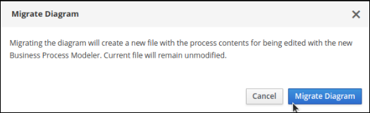Select Yes or No to confirm if you made changes. This option is only available if you have made changes to your legacy business process.
Figure 6.2. Save diagram changes confirmation
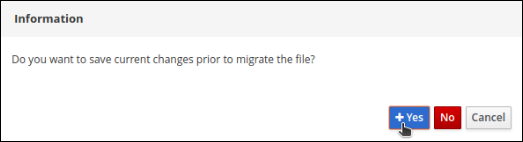
If the migration is successful, the business process opens in the new process designer and the business process name’s extension changes from *.bpmn2 to *.bpmn.
If the migration is unsuccessful due to an unsupported node type, Business Central displays the following error message:
Figure 6.3. Migration failure message
Chapter 7. Modifying existing projects in Business Central
Business Central includes a number of sample projects that you can use to get familiar with the product and its features. The sample projects have been designed and created to demonstrate a variety of business scenarios. You can modify the sample projects to meet your specific business needs. For example, Red Hat Process Automation Manager 7.10 contains the Mortgage_Process sample project, which consists of predefined data objects, guided decision tables, guided rules, forms, and a business process. You can edit the sample to refine your business process.
If none of the existing Business Central project samples align with your requirements, you can create a new project or import one from a Git repository. For more information, see Chapter 9, Importing projects from Git repositories. You can import any other project from Git. For example, a project that was developed in another Business Central instance.
Chapter 8. Creating the mortgage-process project
A project is a container for assets such as data objects, business processes, guided rules, decision tables, and forms. The project that you are creating is similar to the existing Mortgage_Process sample project in Business Central.
Procedure
In Business Central, go to Menu → Design → Projects.
Red Hat Process Automation Manager provides a default space called MySpace, as shown in the following image. You can use the default space to create and test example projects.
Figure 8.1. Default space

- Click Add Project.
-
Enter
mortgage-processin the Name field. Click Configure Advanced Options and modify the GAV fields with the following values:
-
Group ID:
com.myspace -
Artifact ID:
mortgage-process -
Version:
1.0.0
-
Group ID:
- Click Add.
The Assets view of the project opens.
8.1. Modifying the Mortgage_Process sample project
The Mortgage_Process sample project consists of predefined data objects, guided decision tables, guided rules, forms, and a business process. Using the sample project provides a quick way to get acclimated with Red Hat Process Automation Manager. In a real business scenario, you would create all of the assets by providing data that is specific to your business requirements.
Navigate to the Mortgage_Process sample project to view the predefined assets.
Procedure
- In Business Central, go to Menu → Design → Projects.
- In the upper-right corner of the screen, click the arrow next to Add Project and select Try Samples.
- Select Mortgage_Process and click Ok. The Assets view of the project opens.
- Click an asset that you want to modify. All of the assets can be edited to meet your project requirements.
8.2. Creating a project using archetypes
Archetypes are projects that are installed in Apache Maven repositories and contain a specific template structure. You can also generate parameterized versions of the project templates using archetypes. When you use an archetype to create a project, it is added to the Git repository that is connected to your Red Hat Process Automation Manager installation.
Prerequisites
- You have created an archetype and added it to the Archetypes page in the Business Central Settings. For information about creating archetypes, see the Guide to Creating Archetypes.
- You have set a default archetype in your space in Business Central.
For more information about archetypes management, see Configuring Business Central settings and properties.
Procedure
- In Business Central, go to Menu → Design → Projects.
- Select or create the space into which you want to add a new project from an archetype template.
- Click Add Project.
- Type the project name and description in the Name and Description fields.
- Click Configure Advanced Options.
- Select the Based on template checkbox.
- Select the archetype from drop-down options if required. The default archetype is selected that is already set in the space.
- Click Add.
The Assets view of the project opens based on the selected archetype template.
Chapter 9. Importing projects from Git repositories
Git is a distributed version control system. It implements revisions as commit objects. When you save your changes to a repository, a new commit object in the Git repository is created.
Business Central uses Git to store project data, including assets such as rules and processes. When you create a project in Business Central, it is added to a Git repository that is connected to Business Central. If you have projects in Git repositories, you can import the project’s master branch or import the master branch along with other specific branches into the Business Central Git repository through Business Central spaces.
Prerequisites
- Red Hat Process Automation Manager projects exist in an external Git repository.
- You have the credentials required for read access to that external Git repository.
Procedure
- In Business Central, go to Menu → Design → Projects.
- Select or create the space into which you want to import the projects. The default space is MySpace.
- In the upper-right corner of the screen, click the arrow next to Add Project and select Import Project.
- In the Import Project window, enter the URL and credentials for the Git repository that contains the project that you want to import and click Import. The Import Projects page is displayed.
Optional: To import master and specific branches, do the following tasks:
- On the Import Projects page, click the branches icon.
In the Branches to be imported window, select branches from the list.
NoteYou must select the master branch as a minimum.
- Click Ok.
- On the Import Projects page, ensure the project is highlighted and click Ok.
Chapter 10. Revising project versions
You can revise the version number of a project in Red Hat Process Automation Manager before you build and deploy a new instance of the project. Creating a new version of a project preserves the old version in case there is a problem with the new one and you need to revert back.
Prerequisites
- KIE Server is deployed and connected to Business Central.
Procedure
- In Business Central, go to Menu → Design → Projects.
- Click the project you want to deploy, for example Mortgage_Process.
Click Deploy.
- If there is no container with the project name, a container with default values is automatically created.
If an older version of the project is already deployed, go to the project settings and change the project version. When finished, save the change and click Deploy. This will deploy a new version of the same project with the latest changes in place, alongside the older version(s).
NoteYou can also select the Build & Install option to build the project and publish the KJAR file to the configured Maven repository without deploying to a KIE Server. In a development environment, you can click Deploy to deploy the built KJAR file to a KIE Server without stopping any running instances (if applicable), or click Redeploy to deploy the built KJAR file and replace all instances. The next time you deploy or redeploy the built KJAR, the previous deployment unit (KIE container) is automatically updated in the same target KIE Server. In a production environment, the Redeploy option is disabled and you can click Deploy only to deploy the built KJAR file to a new deployment unit (KIE container) on a KIE Server.
To configure the KIE Server environment mode, set the
org.kie.server.modesystem property toorg.kie.server.mode=developmentororg.kie.server.mode=production. To configure the deployment behavior for a corresponding project in Business Central, go to project Settings → General Settings → Version and toggle the Development Mode option. By default, KIE Server and all new projects in Business Central are in development mode. You cannot deploy a project with Development Mode turned on or with a manually addedSNAPSHOTversion suffix to a KIE Server that is in production mode.
- To review project deployment details, click View deployment details in the deployment banner at the top of the screen or in the Deploy drop-down menu. This option directs you to the Menu → Deploy → Execution Servers page.
- To verify process definitions, click Menu → Manage → Process Definitions, and click .
- Click in the Actions column and select Start to start a new instance of the process.
Chapter 11. Configuring project settings
Starting with Red Hat Process Automation Manager 7.10, Business Central contains additional project setting categories in the new process designer.
Prerequisites
- You have created a Business Central project.
Procedure
- To access the project Settings tab, in Business Central go to Menu → Design → Projects.
- Click the project name.
Click Settings to view or modify the following project settings:
General Settings - Enables users to set the project’s Name, Description, Group ID, Artifact ID, Version (GAV), and Development Mode attributes. It also includes the following options:
- URL - Use to specify a read-only URL for cloning a project as a git repository.
- Disable GAV conflict check - Determines whether to enable or disable the GAV conflict check. Disabling this feature enables projects to have the same GAV values.
- Allow child GAV edition - Allows GAV editions for sub-projects.
- Dependencies - Used to add dependencies either manually, by entering the Group ID, Artifact ID, and Version or from a repository project in Business Central. For each dependency, set select All or None for the Package white list option.
KIE Bases - The new name for what was previously called Knowledge bases. You must specify a KIE base as the default. Provide the following details to add a Kie base:
- Name
- Included KIE bases
- Package
- Equal Behavior - Identity or Equality
- Event Processing Model - Stream or Cloud
- KIE sessions
-
External Data Objects - Data objects are not explicitly defined within a project or project dependencies that a rule author may require. External data objects are usually provided by the Java runtime, for example,
java.util.List. - Validation - Maven repositories that are used to check the uniqueness of a project’s GAV when creating a new project or module or when installing or deploying a project to a Maven repository.
Service Tasks - The following service tasks can be added to a project:
- BusinessRuleTask - Execute a business rule task
- Decision Task - Execute a DMN decision task
- Email - Send email
- JMSSendTask - Send JMS Message
- Rest - Perform a Rest call
- ServiceTask - Execute a service task
- WebService - Perform a web service call
Deployments - Deployments are divided in to the following categories:
- General Settings - Runtime Strategy, Persistence Unit Name, Persistence Mode, Audit Persistence Unit Name, and Audit Mode
- Marshalling strategies
- Global
- Event listeners
- Required roles
- Remoteable classes
- Task event listeners
- Configuration
- Environment entries
- Work item handlers
Persistence - Persistence is divided in to the following categories:
- Persistence Unit
- Persistence Provider
- Data Source
Properties - Used to set values for the following properties and also to create new properties:
- hibernate.dialect
- hibernate.max_fetch_depth
- hibernate.hbm2ddl.auto
- hibernate.show_sql
- hibernate.id.new_generator_mappings
- hibernate.transaction.jta.platform
- Project Persistable Data Objects
- Branch Management - Provides branch role access based on the branch name and assigned user roles.
- Click Save.
Chapter 12. Multiple branches in Business Central
Multiple branches support in Business Central provides the ability to create a new branch based on an existing one, including all of its assets. All new, imported, and sample projects open in the default master branch. You can create as many branches as you need and can work on multiple branches interchangeably without impacting the original project on the master branch.
Red Hat Process Automation Manager 7.10 includes support for persisting branches, which means that Business Central remembers the last branch used and will open in that branch when you log back in.
12.1. Creating branches
You can create new branches in Business Central and name them whatever you like. Initially, you will only have the default master branch. When you create a new branch for a project, you are making a copy of the selected branch. You can make changes to the project on the new branch without impacting the original master branch version.
Procedure
- In Business Central, go to Menu → Design → Projects.
- Click the project to create the new branch, for example the Mortgage_Process sample project.
Click master → Add Branch.
Figure 12.1. Create the new branch menu
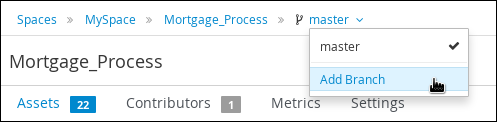-
Type
testBranch1in the Name field and select master from the Add Branch window. WheretestBranch1is any name that you want to name the new branch. - Select the branch that will be the base for the new branch from the Add Branch window. This can be any existing branch.
Click Add.
Figure 12.2. Add the new branch window
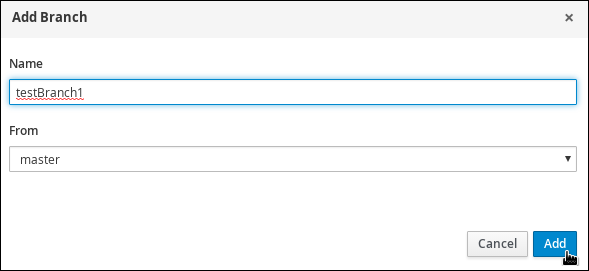
After adding the new branch, you will be redirected to it, and it will contain all of the assets that you had in your project in the master branch.
12.2. Selecting branches
You can switch between branches to make modifications to project assets and test the revised functionality.
Procedure
Click the current branch name and select the desired project branch from the drop-down list.
Figure 12.3. Select a branch menu
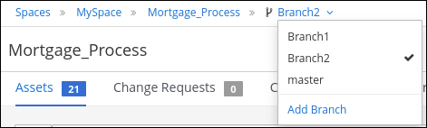
After selecting the branch, you are redirected to that branch containing the project and all of the assets that you had defined.
12.3. Deleting branches
You can delete any branch except for the master branch. Business Central does not allow you to delete the master branch to avoid corrupting your environment. You must be in any branch other than master for the following procedure to work.
Procedure
Click in the upper-right corner of the screen and select Delete Branch.
Figure 12.4. Delete a branch
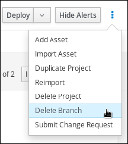- In the Delete Branch window, enter the name of the branch you want to delete.
- Click Delete Branch. The branch is deleted and the project branch switches to the master branch.
12.4. Building and deploying projects
After your project is developed, you can build the project from the specified branch in Business Central and deploy it to the configured KIE Server.
Procedure
- In Business Central, go to Menu → Design → Projects and click the project name.
In the upper-right corner, click Deploy to build the project and deploy it to KIE Server.
NoteYou can also select the Build & Install option to build the project and publish the KJAR file to the configured Maven repository without deploying to a KIE Server. In a development environment, you can click Deploy to deploy the built KJAR file to a KIE Server without stopping any running instances (if applicable), or click Redeploy to deploy the built KJAR file and replace all instances. The next time you deploy or redeploy the built KJAR, the previous deployment unit (KIE container) is automatically updated in the same target KIE Server. In a production environment, the Redeploy option is disabled and you can click Deploy only to deploy the built KJAR file to a new deployment unit (KIE container) on a KIE Server.
To configure the KIE Server environment mode, set the
org.kie.server.modesystem property toorg.kie.server.mode=developmentororg.kie.server.mode=production. To configure the deployment behavior for a corresponding project in Business Central, go to project Settings → General Settings → Version and toggle the Development Mode option. By default, KIE Server and all new projects in Business Central are in development mode. You cannot deploy a project with Development Mode turned on or with a manually addedSNAPSHOTversion suffix to a KIE Server that is in production mode.If the build fails, address any problems described in the Alerts panel at the bottom of the screen.
To review project deployment details, click View deployment details in the deployment banner at the top of the screen or in the Deploy drop-down menu. This option directs you to the Menu → Deploy → Execution Servers page.
For more information about project deployment options, see Packaging and deploying a Red Hat Process Automation Manager project.
Chapter 13. Change requests in Business Central
If you have more than one branch in a Business Central project and you make a change in a branch that you want to merge to another branch, you can create a change request. Any user with permission to view the target branch, usually the master branch, can see the change request.
13.1. Creating change requests
You can create a change request in a Business Central project after you have made a change in your project, for example after you have added or deleted an attribute to an asset.
Prerequisites
- You have more than one branch of a Business Central project.
- You made a change in one branch that you want to merge to another branch.
Procedure
- In Business Central, go to Menu → Design → Projects and select the space and project that contains the change that you want to merge.
On the project page, select the branch that contains the change.
Figure 13.1. Select a branch menu
Do one of the following tasks to submit the change request:
- Click in the upper-right corner of the screen and select Submit Change Request.
Click the Change Requests tab and then click Submit Change Request.
The Submit Change Request window appears.
- Enter a summary and a description, select the target branch, and click Submit. The target branch is the branch where the change will be merged. After you click Submit, the change request window appears.
13.2. Working with change requests
You can view change requests for any branch that you have access to. You must have administrator permissions to accept a change request.
Prerequisites
- You have more than one branch of a Business Central project.
Procedure
- In Business Central, go to Menu → Design → Projects and select a space and project.
On the project page, verify that you are on the correct branch.
- Click the Change Requests tab. A list of pending change requests appears.
- To filter change requests, select Open, Closed, or All to the left of the Search box.
- To search for specific change requests, enter an ID or text in the Search box and click the magnifying glass.
To view the change request details, click the summary link. The change request window has two tabs:
- Review the Overview tab for general information about the change request.
- Click the Changed Files tab and expand a file to review the proposed changes.
Click a button in the top right corner.
- Click Squash and Merge to squash all commits into a single commit and merge the commit to the target branch.
- Click Merge to merge the changes into the target branch.
- Click Reject to reject the changes and leave the target branch unchanged.
- Click Close to close the change request without rejecting or accepting it. Note that only the user who created the submitted the change request can close it.
- Click Cancel to return to the project window without making any changes.
Part III. Managing assets in Business Central
As a process administrator, you can use Business Central in Red Hat Process Automation Manager to manage assets, such as rules, business processes, and decision tables.
Prerequisites
- Red Hat JBoss Enterprise Application Platform 7.3 is installed. For details, see Red Hat JBoss Enterprise Application Platform 7.3 Installation Guide.
- Red Hat Process Automation Manager is installed and configured with KIE Server. For more information see Installing and configuring Red Hat Process Automation Manager on Red Hat JBoss EAP 7.3.
-
Red Hat Process Automation Manager is running and you can log in to Business Central with the
developerrole. For more information, see Planning a Red Hat Process Automation Manager installation.
Chapter 14. Asset overview
Business rules, process definition files, and other assets and resources created in Business Central are stored in the Artifact repository (Knowledge Store) that is accessed by the KIE Server.
The Artifact repository is a centralized repository for your business knowledge. It connects multiple GIT repositories so that you can access them from a single environment while storing different kinds of knowledge and artifacts in different locations. GIT is a distributed version control system and it implements revisions as commit objects. Every time you save your changes to a repository this creates a new commit object in the GIT repository. Similarly, the user can also copy an existing repository. This copying process is typically called cloning and the resulting repository can be referred to as clone. Every clone contains the full history of the collection of files and a cloned repository has the same content as the original repository.
Business Central provides a web front-end that enables you to view and update the stored content. To access Artifact repository assets, go to Menu → Design → Projects in Business Central and click the project name.
Chapter 15. Types of assets
Anything that can be versioned in the Business Central repository is an asset. A project can contain rules, packages, business processes, decision tables, fact models, domain specific languages (DSLs) or any other assets that are specific to your project’s requirements.
The following image shows the available assets in Red Hat Process Automation Manager 7.10.
Case Management (Preview) and Case Definition asset types are only available in case projects.
The following sections describe each asset type in Red Hat Process Automation Manager 7.10.
Business Process
Business Processes are diagrams that describe the steps necessary to achieve business goals (see the Red Hat Process Automation Manager Business Process Management Guide for more details).
Case Management (Preview)
Case management is an extension of Business Process Management (BPM) that enables you to manage adaptable business processes. Case management provides problem resolution for non-repeatable, unpredictable processes as opposed to the efficiency-oriented approach of BPM for routine, predictable tasks. It manages one-off situations when the process cannot be predicted in advance.
ImportantThe business process application example includes features that are Technology Preview only. Technology Preview features are not supported with Red Hat production service level agreements (SLAs), might not be functionally complete, and are not recommended for production. These features provide early access to upcoming product features, enabling customers to test functionality and provide feedback during the development process.
Case Definition
Cases are designed using the Case definition process designer in Business Central. The case design is the basis of case management and sets out the specific goals and tasks for each case. The case flow can be modified dynamically during run time by adding dynamic tasks or processes.
Data Object
Data objects are the building blocks for the rule assets that you create. Data objects are custom data types implemented as Java objects in specified packages of your project. For example, you might create a Person object with data fields Name, Address, and Date of Birth to specify personal details for loan application rules. These custom data types determine what data your assets and your decision service are based on.
Decision Table (Spreadsheet)
Decision tables are collections of rules stored in either a spreadsheet or in the Red Hat Decision Manager user interface as guided decision tables. After you define your rules in an external XLS or XLSX file, you can upload the file as a decision table in your project in Business Central.
ImportantYou should typically upload only one spreadsheet of decision tables, containing all necessary
RuleTabledefinitions, per rule package in Business Central. You can upload separate decision table spreadsheets for separate packages, but uploading multiple spreadsheets in the same package can cause compilation errors from conflictingRuleSetorRuleTableattributes and is therefore not recommended.DMN
Decision Model and Notation (DMN) creates a standardized bridge for the gap between the business decision design and decision implementation. You can use the DMN designer in Business Central to design DMN decision requirements diagrams (DRDs) and define decision logic for a complete and functional DMN decision model.
DRL file
A rule file is typically a file with a .drl extension. In a DRL file you can have multiple rules, queries and functions, as well as some resource declarations like imports, globals and attributes that are assigned and used by your rules and queries. However, you are also able to spread your rules across multiple rule files (in that case, the extension .rule is suggested, but not required) - spreading rules across files can help with managing large numbers of rules. A DRL file is simply a text file.
DSL definition
Domain Specific Languages (DSLs) are a way of creating a rule language that is dedicated to your problem domains. A set of DSL definitions consists of transformations from DSL "sentences" to DRL constructs, which lets you use of all the underlying rule language and decision engine features.
Enumeration
Data enumerations are an optional asset type that can be configured to provide drop-down lists for the guided designer. They are stored and edited just like any other asset, and apply to the package that they belong to.
Form
Forms are used for collecting user data for business process. Business Central provides the option to automatically generate forms, which can then be edited to meet specific business process requirements.
Global Variable(s)
Global variables are used to make application objects available to the rules. Typically, they are used to provide data or services that the rules use, especially application services used in rule consequences, and to return data from the rules, like logs or values added in rule consequences, or for the rules to interact with the application, doing callbacks.
Guided Decision Table
Decision tables are collections of rules stored in either a spreadsheet or in the Red Hat Decision Manager user interface as guided decision tables.
Guided Decision Table Graph
A Guided Decision Table Graph is a collection of related guided decision tables that are displayed within a single designer. You can use this designer to better visualize and work with various related decision tables in one location. Additionally, when a condition or an action in one table uses the same data type as a condition or an action in another table, the tables will be physically linked with a line in the table graph designer.
For example, if one decision table determines a loan application rate and another table uses the application rate to determine some other action, then the two decision tables are linked in a guided decision table graph.
Guided Rule
Rules provide the logic for the decision engine to execute against. A rule includes a name, attributes, a
whenstatement on the left hand side of the rule, and athenstatement on the right hand side of the rule.Guided Rule Template
Guided rule templates provide a reusable rule structure for multiple rules that are compiled into Drools Rule Language (DRL) and form the core of the decision service for your project.
Package
All assets are contained in packages in Business Central. A package is a folder for rules and also serves as a "namespace".
Solver configuration
A Solver configuration is created by the Solver designer and can be run in the Execution Solver or plain Java code after the KJAR is deployed. You can edit and create Solver configurations in Business Central.
Test Scenario
Test scenarios in Red Hat Process Automation Manager enable you to validate the functionality of rules, models, and events before deploying them into production. A test scenario uses data for conditions that resemble an instance of your fact or project model. This data is matched against a given set of rules and if the expected results match the actual results, the test is successful. If the expected results do not match the actual results, then the test fails.
Test Scenario (Legacy)
Red Hat Process Automation Manager 7.10 includes support for the legacy Test Scenario because the default Test Scenario asset is still in development.
Work Item definition
A work item definition defines how a custom task is presented. For example, the task name, icon, parameters, and similar attributes.
Chapter 16. Creating assets
You can create business processes, rules, DRL files, and other assets in your Business Central projects.
Migrating business processes is an irreversible process.
Procedure
- In Business Central, go to Menu → Design → Projects and click the project name. For example, Evaluation.
- Click Add Asset and select the asset type.
In the Create new
asset_typewindow, add the required information and click Ok.Figure 16.1. Define Asset
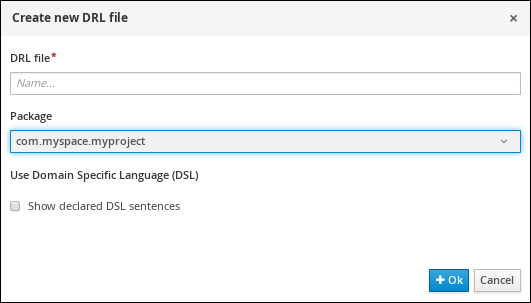
If you have not created a project, you can either add a project, use a sample project, or import an existing project. For more information, see Managing projects in Business Central.
Chapter 17. Renaming, copying, or deleting assets
After an asset has been created and defined, you can use the Repository View of the Project Explorer to copy, rename, delete, or archive assets as needed.
Procedure
- In Business Central, go to Menu → Design → Projects and click the project name.
- Click the asset name and expand the Project Explorer by clicking on the upper-left corner.
- Click in the Project Explorer toolbar and select Repository View to display the folders and files that make up the asset.
Use the icons next to each listed asset to copy, rename, delete, or archive the asset as needed. Some of these options may not be available for all assets.
Figure 17.1. Copy, rename, delete, or archive assets
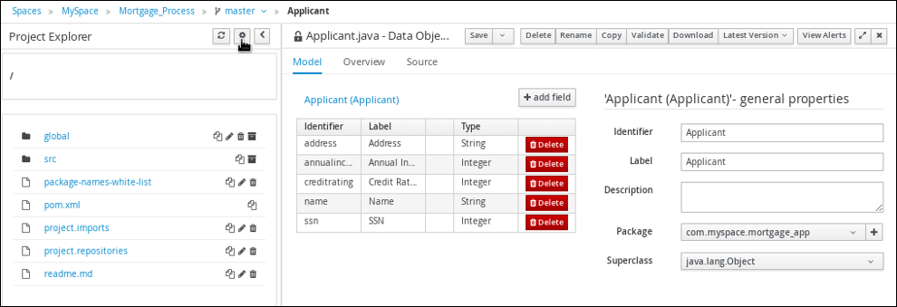Use the following toolbar buttons to copy, rename, or delete assets.
Figure 17.2. Toolbar options
Chapter 18. Managing asset metadata and version history
Most assets within Business Central have metadata and version information associated with them to help you identify and organize them within your projects. You can manage asset metadata and version history from the asset designer in Business Central.
Procedure
- In Business Central, go to Menu → Design → Projects and click the project name.
- Select the asset from the list to open the asset designer.
In the asset designer window, select Overview. If an asset doesn’t have an Overview tab, then no metadata is associated with that asset.
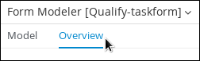Select the Version History or Metadata tab to edit and update version and metadata details.
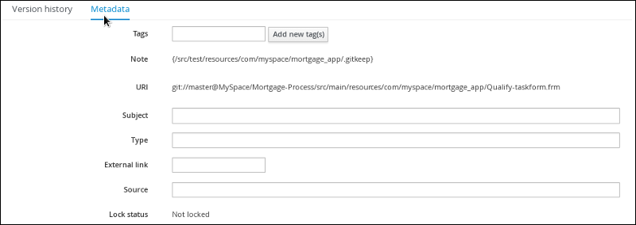NoteAnother way to update the working version of an asset is by clicking Latest Version in the top-right corner of the asset designer.
Figure 18.1. Latest version of an asset
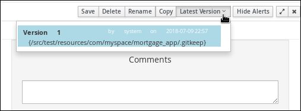- Click Save to save changes.
Chapter 19. Filtering assets by tags
You can apply tags in the metadata of each asset and then group assets by tags in the Project Explorer. This feature helps you quickly search through assets of a specific category.
Procedure
- In Business Central, go to Menu → Design → Projects and click the project name.
- Open the asset editor by clicking the asset name.
- In the asset editor window, go to Overview → Metadata.
In the Tags field, enter the name of your new tag and click Add new tag(s). You can assign multiple tags to an asset by separating tag names with a space.
Figure 19.1. Creating tags
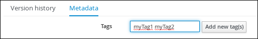The assigned tags are displayed as buttons next to the Tags field.
Figure 19.2. Tags in metadata view
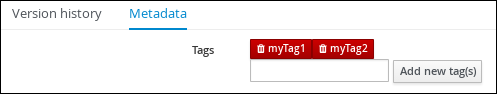Click the trash icon on the tag button to delete the tag.
Figure 19.3. Deleting tags in metadata view
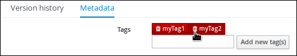- Click Save to save your metadata changes.
- Expand the Project Explorer by clicking on the upper-left corner.
Click in the Project Explorer toolbar and select Enable Tag filtering.
Figure 19.4. Enable tag filtering
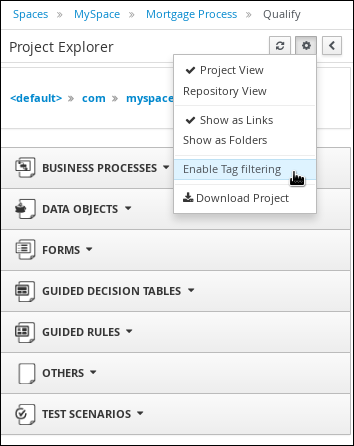This displays a Filter by Tag drop-down menu in the Project Explorer.
Figure 19.5. Filter by tag
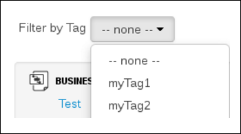You can sort your assets through this filter to display all assets and service tasks that include the selected metadata tag.
Chapter 20. Unlocking assets
By default, whenever you open and modify an asset in Business Central, that asset is automatically locked for your exclusive use in order to avoid conflicts in a multiuser setup. This lock is automatically released when your session ends or when you save or close the asset. This lock feature ensures that users do not overwrite each other’s changes.
However, you can force unlock an asset if you need to edit a file that is locked by another user.
Procedure
- In Business Central, go to Menu → Design → Projects and click the project name.
- Select the asset from the list to open the asset designer.
Go to Overview → Metadata and view the Lock Status.
Figure 20.1. Unlock metadata view
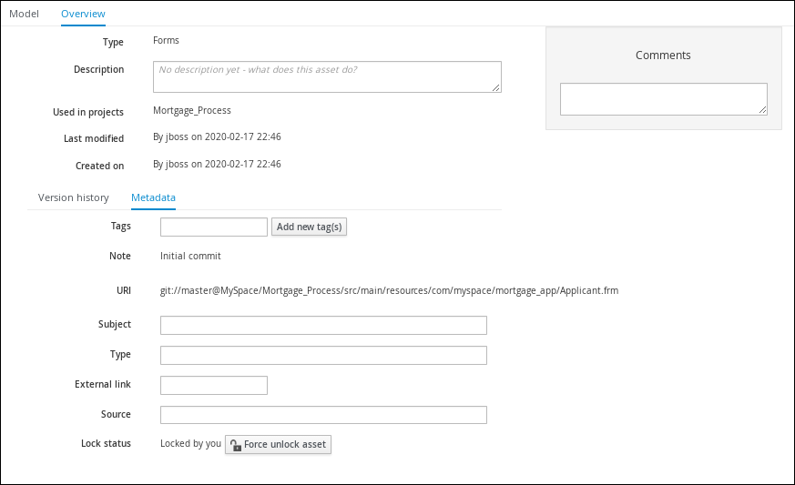If the asset is already being edited by another user, the following will be displayed in the Lock status field:
Locked by <user_name>Click Force unclock asset to unlock.
The following confirmation pop-up message is displayed:
Are you sure you want to release the lock of this asset? This might cause <user_name> to lose unsaved changes!Click Yes to confirm.
The asset returns to an unlocked state and the lock icon option will appear next to the asset.
Part IV. Interacting with Red Hat Process Automation Manager using KIE APIs
As a business rules developer or system administrator, you can use KIE APIs to interact with KIE Servers, KIE containers, and business assets in Red Hat Process Automation Manager. You can use the KIE Server REST API and Java client API to interact with KIE containers and business assets (such as business rules, processes, and solvers), the Process Automation Manager controller REST API and Java client API to interact with KIE Server templates and instances, and the Knowledge Store REST API to interact with spaces and projects in Business Central.
The lists of REST API endpoints for KIE Server and the Process Automation Manager controller are published separately from this document and maintained dynamically to ensure that endpoint options and data are as current as possible. Use this document to understand what the KIE Server and Process Automation Manager controller REST APIs enable you to do and how to use them, and use the separately maintained lists of REST API endpoints for specific endpoint details.
For the full list of KIE Server REST API endpoints and descriptions, use one of the following resources:
- Execution Server REST API on the jBPM Documentation page (static)
-
Swagger UI for the KIE Server REST API at
http://SERVER:PORT/kie-server/docs(dynamic, requires running KIE Server)
For the full list of Process Automation Manager controller REST API endpoints and descriptions, use one of the following resources:
- Controller REST API on the jBPM Documentation page (static)
-
Swagger UI for the Process Automation Manager controller REST API at
http://SERVER:PORT/CONTROLLER/docs(dynamic, requires running Process Automation Manager controller)
Prerequisites
- Red Hat Process Automation Manager is installed and running. For installation and startup options, see Planning a Red Hat Process Automation Manager installation.
You have access to Red Hat Process Automation Manager with the following user roles:
-
kie-server: For access to KIE Server API capabilities, and access to headless Process Automation Manager controller API capabilities without Business Central (if applicable) -
rest-all: For access to Business Central API capabilities for the built-in Process Automation Manager controller and for the Business Central Knowledge Store admin: For full administrative access to Red Hat Process Automation ManagerAlthough these user roles are not all required for every KIE API, consider acquiring all of them to ensure that you can access any KIE API without disruption. For more information about user roles, see Planning a Red Hat Process Automation Manager installation.
-
Table of Contents
- 21. KIE Server REST API for KIE containers and business assets
- 22. KIE Server Java client API for KIE containers and business assets
- 23. KIE Server and KIE container commands in Red Hat Process Automation Manager
- 24. Runtime commands in Red Hat Process Automation Manager
- 25. Process Automation Manager controller REST API for KIE Server templates and instances
- 26. Process Automation Manager controller Java client API for KIE Server templates and instances
- 27. BPMN process fluent API for Business Central processes
- 28. Knowledge Store REST API for Business Central spaces and projects
- 29. Security Management REST API for Business Central groups, roles, and users
- 30. EJB API for KIE sessions and task services
- 31. Additional resources
Chapter 21. KIE Server REST API for KIE containers and business assets
Red Hat Process Automation Manager provides a KIE Server REST API that you can use to interact with your KIE containers and business assets (such as business rules, processes, and solvers) in Red Hat Process Automation Manager without using the Business Central user interface. This API support enables you to maintain your Red Hat Process Automation Manager resources more efficiently and optimize your integration and development with Red Hat Process Automation Manager.
With the KIE Server REST API, you can perform the following actions:
- Deploy or dispose KIE containers
- Retrieve and update KIE container information
- Return KIE Server status and basic information
- Retrieve and update business asset information
- Execute business assets (such as rules and processes)
KIE Server REST API requests require the following components:
- Authentication
The KIE Server REST API requires HTTP Basic authentication or token-based authentication for the user role
kie-server. To view configured user roles for your Red Hat Process Automation Manager distribution, navigate to~/$SERVER_HOME/standalone/configuration/application-roles.propertiesand~/application-users.properties.To add a user with the
kie-serverrole, navigate to~/$SERVER_HOME/binand run the following command:$ ./add-user.sh -a --user <USERNAME> --password <PASSWORD> --role kie-server
For more information about user roles and Red Hat Process Automation Manager installation options, see Planning a Red Hat Process Automation Manager installation.
- HTTP headers
The KIE Server REST API requires the following HTTP headers for API requests:
Accept: Data format accepted by your requesting client:-
application/json(JSON) -
application/xml(XML, for JAXB or XSTREAM)
-
Content-Type: Data format of yourPOSTorPUTAPI request data:-
application/json(JSON) -
application/xml(XML, for JAXB or XSTREAM)
-
X-KIE-ContentType: Required header forapplication/xmlXSTREAM API requests and responses:-
XSTREAM
-
- HTTP methods
The KIE Server REST API supports the following HTTP methods for API requests:
-
GET: Retrieves specified information from a specified resource endpoint -
POST: Updates a resource or resource instance -
PUT: Updates or creates a resource or resource instance -
DELETE: Deletes a resource or resource instance
-
- Base URL
-
The base URL for KIE Server REST API requests is
http://SERVER:PORT/kie-server/services/rest/, such ashttp://localhost:8080/kie-server/services/rest/. - Endpoints
KIE Server REST API endpoints, such as
/server/containers/{containerId}for a specified KIE container, are the URIs that you append to the KIE Server REST API base URL to access the corresponding resource or type of resource in Red Hat Process Automation Manager.Example request URL for
/server/containers/{containerId}endpointhttp://localhost:8080/kie-server/services/rest/server/containers/MyContainer- Request parameters and request data
Many KIE Server REST API requests require specific parameters in the request URL path to identify or filter specific resources and to perform specific actions. You can append URL parameters to the endpoint in the format
?<PARAM>=<VALUE>&<PARAM>=<VALUE>.Example GET request URL with parameters
http://localhost:8080/kie-server/services/rest/server/containers?groupId=com.redhat&artifactId=Project1&version=1.0&status=STARTEDHTTP
POSTandPUTrequests may additionally require a request body or file with data to accompany the request.Example POST request URL and JSON request body data
http://localhost:8080/kie-server/services/rest/server/containers/MyContainer/release-id{ "release-id": { "artifact-id": "Project1", "group-id": "com.redhat", "version": "1.1" } }
21.1. Sending requests with the KIE Server REST API using a REST client or curl utility
The KIE Server REST API enables you to interact with your KIE containers and business assets (such as business rules, processes, and solvers) in Red Hat Process Automation Manager without using the Business Central user interface. You can send KIE Server REST API requests using any REST client or curl utility.
Prerequisites
- KIE Server is installed and running.
-
You have
kie-serveruser role access to KIE Server.
Procedure
-
Identify the relevant API endpoint to which you want to send a request, such as
[GET] /server/containersto retrieve KIE containers from KIE Server. In a REST client or curl utility, enter the following components for a
GETrequest to/server/containers. Adjust any request details according to your use case.For REST client:
-
Authentication: Enter the user name and password of the KIE Server user with the
kie-serverrole. HTTP Headers: Set the following header:
-
Accept:application/json
-
-
HTTP method: Set to
GET. -
URL: Enter the KIE Server REST API base URL and endpoint, such as
http://localhost:8080/kie-server/services/rest/server/containers.
For curl utility:
-
-u: Enter the user name and password of the KIE Server user with thekie-serverrole. -H: Set the following header:-
accept:application/json
-
-
-X: Set toGET. -
URL: Enter the KIE Server REST API base URL and endpoint, such as
http://localhost:8080/kie-server/services/rest/server/containers.
curl -u 'baAdmin:password@1' -H "accept: application/json" -X GET "http://localhost:8080/kie-server/services/rest/server/containers"
-
Authentication: Enter the user name and password of the KIE Server user with the
Execute the request and review the KIE Server response.
Example server response (JSON):
{ "type": "SUCCESS", "msg": "List of created containers", "result": { "kie-containers": { "kie-container": [ { "container-id": "itorders_1.0.0-SNAPSHOT", "release-id": { "group-id": "itorders", "artifact-id": "itorders", "version": "1.0.0-SNAPSHOT" }, "resolved-release-id": { "group-id": "itorders", "artifact-id": "itorders", "version": "1.0.0-SNAPSHOT" }, "status": "STARTED", "scanner": { "status": "DISPOSED", "poll-interval": null }, "config-items": [], "container-alias": "itorders" } ] } } }-
For this example, copy or note the project
group-id,artifact-id, andversion(GAV) data from one of the deployed KIE containers returned in the response. In your REST client or curl utility, send another API request with the following components for a
PUTrequest to/server/containers/{containerId}to deploy a new KIE container with the copied project GAV data. Adjust any request details according to your use case.For REST client:
-
Authentication: Enter the user name and password of the KIE Server user with the
kie-serverrole. HTTP Headers: Set the following headers:
-
Accept:application/json -
Content-Type:application/json
-
-
HTTP method: Set to
PUT. -
URL: Enter the KIE Server REST API base URL and endpoint, such as
http://localhost:8080/kie-server/services/rest/server/containers/MyContainer. - Request body: Add a JSON request body with the configuration items for the new KIE container:
{ "config-items": [ { "itemName": "RuntimeStrategy", "itemValue": "SINGLETON", "itemType": "java.lang.String" }, { "itemName": "MergeMode", "itemValue": "MERGE_COLLECTIONS", "itemType": "java.lang.String" }, { "itemName": "KBase", "itemValue": "", "itemType": "java.lang.String" }, { "itemName": "KSession", "itemValue": "", "itemType": "java.lang.String" } ], "release-id": { "group-id": "itorders", "artifact-id": "itorders", "version": "1.0.0-SNAPSHOT" }, "scanner": { "poll-interval": "5000", "status": "STARTED" } }For curl utility:
-
-u: Enter the user name and password of the KIE Server user with thekie-serverrole. -H: Set the following headers:-
accept:application/json -
content-type:application/json
-
-
-X: Set toPUT. -
URL: Enter the KIE Server REST API base URL and endpoint, such as
http://localhost:8080/kie-server/services/rest/server/containers/MyContainer. -
-d: Add a JSON request body or file (@file.json) with the configuration items for the new KIE container:
curl -u 'baAdmin:password@1' -H "accept: application/json" -H "content-type: application/json" -X PUT "http://localhost:8080/kie-server/services/rest/server/containers/MyContainer" -d "{ \"config-items\": [ { \"itemName\": \"RuntimeStrategy\", \"itemValue\": \"SINGLETON\", \"itemType\": \"java.lang.String\" }, { \"itemName\": \"MergeMode\", \"itemValue\": \"MERGE_COLLECTIONS\", \"itemType\": \"java.lang.String\" }, { \"itemName\": \"KBase\", \"itemValue\": \"\", \"itemType\": \"java.lang.String\" }, { \"itemName\": \"KSession\", \"itemValue\": \"\", \"itemType\": \"java.lang.String\" } ], \"release-id\": { \"group-id\": \"itorders\", \"artifact-id\": \"itorders\", \"version\": \"1.0.0-SNAPSHOT\" }, \"scanner\": { \"poll-interval\": \"5000\", \"status\": \"STARTED\" }}"curl -u 'baAdmin:password@1' -H "accept: application/json" -H "content-type: application/json" -X PUT "http://localhost:8080/kie-server/services/rest/server/containers/MyContainer" -d @my-container-configs.json
-
Authentication: Enter the user name and password of the KIE Server user with the
Execute the request and review the KIE Server response.
Example server response (JSON):
{ "type": "SUCCESS", "msg": "Container MyContainer successfully deployed with module itorders:itorders:1.0.0-SNAPSHOT.", "result": { "kie-container": { "container-id": "MyContainer", "release-id": { "group-id": "itorders", "artifact-id": "itorders", "version": "1.0.0-SNAPSHOT" }, "resolved-release-id": { "group-id": "itorders", "artifact-id": "itorders", "version": "1.0.0-SNAPSHOT" }, "status": "STARTED", "scanner": { "status": "STARTED", "poll-interval": 5000 }, "config-items": [], "messages": [ { "severity": "INFO", "timestamp": { "java.util.Date": 1540584717937 }, "content": [ "Container MyContainer successfully created with module itorders:itorders:1.0.0-SNAPSHOT." ] } ], "container-alias": null } } }If you encounter request errors, review the returned error code messages and adjust your request accordingly.
REST API requests for process instancesFor REST API requests that send complex data objects to the process instance endpoint
/server/containers/{containerId}/processes/{processId}/instances, ensure that you include either the fully qualified class name (such ascom.myspace.Person) or the simple class name (such asPerson) in the request body. The class name is required for the request body to be mapped to the correct business object in Red Hat Process Automation Manager. If you exclude the class name from the request, KIE Server does not unmarshall the object to the expected type.Correct request body for process instance
{ "id": 4, "lease": { "com.myspace.restcall.LeaseModel": { "annualRent": 109608, "isAutoApproved": false } } }Incorrect request body for process instance
{ "id": 4, "lease": { "annualRent": 109608, "isAutoApproved": false } }
21.2. Sending requests with the KIE Server REST API using the Swagger interface
The KIE Server REST API supports a Swagger web interface that you can use instead of a standalone REST client or curl utility to interact with your KIE containers and business assets (such as business rules, processes, and solvers) in Red Hat Process Automation Manager without using the Business Central user interface.
By default, the Swagger web interface for KIE Server is enabled by the org.kie.swagger.server.ext.disabled=false system property. To disable the Swagger web interface in KIE Server, set this system property to true.
Prerequisites
- KIE Server is installed and running.
-
You have
kie-serveruser role access to KIE Server.
Procedure
-
In a web browser, navigate to
http://SERVER:PORT/kie-server/docs, such ashttp://localhost:8080/kie-server/docs, and log in with the user name and password of the KIE Server user with thekie-serverrole. - In the Swagger page, select the relevant API endpoint to which you want to send a request, such as KIE Server and KIE containers → [GET] /server/containers to retrieve KIE containers from KIE Server.
- Click Try it out and provide any optional parameters by which you want to filter results, if needed.
- In the Response content type drop-down menu, select the desired format of the server response, such as application/json for JSON format.
Click Execute and review the KIE Server response.
Example server response (JSON):
{ "type": "SUCCESS", "msg": "List of created containers", "result": { "kie-containers": { "kie-container": [ { "container-id": "itorders_1.0.0-SNAPSHOT", "release-id": { "group-id": "itorders", "artifact-id": "itorders", "version": "1.0.0-SNAPSHOT" }, "resolved-release-id": { "group-id": "itorders", "artifact-id": "itorders", "version": "1.0.0-SNAPSHOT" }, "status": "STARTED", "scanner": { "status": "DISPOSED", "poll-interval": null }, "config-items": [], "container-alias": "itorders" } ] } } }-
For this example, copy or note the project
group-id,artifact-id, andversion(GAV) data from one of the deployed KIE containers returned in the response. - In the Swagger page, navigate to the KIE Server and KIE containers → [PUT] /server/containers/{containerId} endpoint to send another request to deploy a new KIE container with the copied project GAV data. Adjust any request details according to your use case.
Click Try it out and enter the following components for the request:
-
containerId: Enter the ID of the new KIE container, such as
MyContainer. - body: Set the Parameter content type to the desired request body format, such as application/json for JSON format, and add a request body with the configuration items for the new KIE container:
{ "config-items": [ { "itemName": "RuntimeStrategy", "itemValue": "SINGLETON", "itemType": "java.lang.String" }, { "itemName": "MergeMode", "itemValue": "MERGE_COLLECTIONS", "itemType": "java.lang.String" }, { "itemName": "KBase", "itemValue": "", "itemType": "java.lang.String" }, { "itemName": "KSession", "itemValue": "", "itemType": "java.lang.String" } ], "release-id": { "group-id": "itorders", "artifact-id": "itorders", "version": "1.0.0-SNAPSHOT" }, "scanner": { "poll-interval": "5000", "status": "STARTED" } }-
containerId: Enter the ID of the new KIE container, such as
- In the Response content type drop-down menu, select the desired format of the server response, such as application/json for JSON format.
Click Execute and review the KIE Server response.
Example server response (JSON):
{ "type": "SUCCESS", "msg": "Container MyContainer successfully deployed with module itorders:itorders:1.0.0-SNAPSHOT.", "result": { "kie-container": { "container-id": "MyContainer", "release-id": { "group-id": "itorders", "artifact-id": "itorders", "version": "1.0.0-SNAPSHOT" }, "resolved-release-id": { "group-id": "itorders", "artifact-id": "itorders", "version": "1.0.0-SNAPSHOT" }, "status": "STARTED", "scanner": { "status": "STARTED", "poll-interval": 5000 }, "config-items": [], "messages": [ { "severity": "INFO", "timestamp": { "java.util.Date": 1540584717937 }, "content": [ "Container MyContainer successfully created with module itorders:itorders:1.0.0-SNAPSHOT." ] } ], "container-alias": null } } }If you encounter request errors, review the returned error code messages and adjust your request accordingly.
REST API requests for process instancesFor REST API requests that send complex data objects to the process instance endpoint
/server/containers/{containerId}/processes/{processId}/instances, ensure that you include either the fully qualified class name (such ascom.myspace.Person) or the simple class name (such asPerson) in the request body. The class name is required for the request body to be mapped to the correct business object in Red Hat Process Automation Manager. If you exclude the class name from the request, KIE Server does not unmarshall the object to the expected type.Correct request body for process instance
{ "id": 4, "lease": { "com.myspace.restcall.LeaseModel": { "annualRent": 109608, "isAutoApproved": false } } }Incorrect request body for process instance
{ "id": 4, "lease": { "annualRent": 109608, "isAutoApproved": false } }
21.3. Supported KIE Server REST API endpoints
The KIE Server REST API provides endpoints for the following types of resources in Red Hat Process Automation Manager:
- KIE Server and KIE containers
- KIE session assets (for runtime commands)
- DMN assets
- Planning solvers
- Processes
- Process images
- Process and task forms
- Tasks
- Cases
- Documents
- Jobs
- Queries for processes, tasks, and cases
- Custom queries
The KIE Server REST API base URL is http://SERVER:PORT/kie-server/services/rest/. All requests require HTTP Basic authentication or token-based authentication for the kie-server user role.
For the full list of KIE Server REST API endpoints and descriptions, use one of the following resources:
- Execution Server REST API on the jBPM Documentation page (static)
Swagger UI for the KIE Server REST API at
http://SERVER:PORT/kie-server/docs(dynamic, requires running KIE Server)NoteBy default, the Swagger web interface for KIE Server is enabled by the
org.kie.swagger.server.ext.disabled=falsesystem property. To disable the Swagger web interface in KIE Server, set this system property totrue.
Endpoint requirements
Note the following requirements for some of the KIE Server REST API endpoints:
-
Process images: For API access to process images, the system property
<storesvgonsave enabled="true"/>must be configured for your Red Hat Process Automation Manager project in$SERVER_HOME/standalone/deployments/business-central.war/org.kie.workbench.KIEWebapp/profiles/jbpm.xml. If this property is not set or set tofalse, set it totrue, restart your KIE Server, modify the relevant process and save it, and then build and deploy your project. This property enables SVG images to be stored so that they can be retrieved by the KIE Server REST API. Custom queries: Some custom query requests with the KIE Server REST API require a query
mapperdefinition to map the query results to concrete objects. You can implement your own query result mappers or use the mappers provided with Red Hat Process Automation Manager. The query mappers in Red Hat Process Automation Manager are similar to other object-relational mapping (ORM) providers, such as Hibernate, which maps tables to entities. For example, you can use theorg.jbpm.kie.services.impl.query.mapper.ProcessInstanceQueryMapper, also registered asProcessInstances, in custom query endpoints for returning process instance data.Example POST endpoint with
ProcessInstancesmapper parameter:http://localhost:8080/kie-server/services/rest/server/queries/definitions/jbpmProcessInstances?mapper=ProcessInstances
For a list of available query mappers in Red Hat Process Automation Manager, download and extract the Red Hat Process Automation Manager 7.10 Source Distribution from the Red Hat Customer Portal and navigate to
~/jbpm-$VERSION/jbpm-services/jbpm-kie-services/src/main/java/org/jbpm/kie/services/impl/query/mapper.
Chapter 22. KIE Server Java client API for KIE containers and business assets
Red Hat Process Automation Manager provides a KIE Server Java client API that enables you to connect to KIE Server using REST protocol from your Java client application. You can use the KIE Server Java client API as an alternative to the KIE Server REST API to interact with your KIE containers and business assets (such as business rules, processes, and solvers) in Red Hat Process Automation Manager without using the Business Central user interface. This API support enables you to maintain your Red Hat Process Automation Manager resources more efficiently and optimize your integration and development with Red Hat Process Automation Manager.
With the KIE Server Java client API, you can perform the following actions also supported by the KIE Server REST API:
- Deploy or dispose KIE containers
- Retrieve and update KIE container information
- Return KIE Server status and basic information
- Retrieve and update business asset information
- Execute business assets (such as rules and processes)
KIE Server Java client API requests require the following components:
- Authentication
The KIE Server Java client API requires HTTP Basic authentication for the user role
kie-server. To view configured user roles for your Red Hat Process Automation Manager distribution, navigate to~/$SERVER_HOME/standalone/configuration/application-roles.propertiesand~/application-users.properties.To add a user with the
kie-serverrole, navigate to~/$SERVER_HOME/binand run the following command:$ ./add-user.sh -a --user <USERNAME> --password <PASSWORD> --role kie-server
For more information about user roles and Red Hat Process Automation Manager installation options, see Planning a Red Hat Process Automation Manager installation.
- Project dependencies
The KIE Server Java client API requires the following dependencies on the relevant classpath of your Java project:
<!-- For remote execution on KIE Server --> <dependency> <groupId>org.kie.server</groupId> <artifactId>kie-server-client</artifactId> <version>${rhpam.version}</version> </dependency> <!-- For runtime commands --> <dependency> <groupId>org.drools</groupId> <artifactId>drools-compiler</artifactId> <scope>runtime</scope> <version>${rhpam.version}</version> </dependency> <!-- For debug logging (optional) --> <dependency> <groupId>ch.qos.logback</groupId> <artifactId>logback-classic</artifactId> <version>${logback.version}</version> </dependency>The
<version>for Red Hat Process Automation Manager dependencies is the Maven artifact version for Red Hat Process Automation Manager currently used in your project (for example, 7.48.0.Final-redhat-00002).NoteInstead of specifying a Red Hat Process Automation Manager
<version>for individual dependencies, consider adding the Red Hat Business Automation bill of materials (BOM) dependency to your projectpom.xmlfile. The Red Hat Business Automation BOM applies to both Red Hat Decision Manager and Red Hat Process Automation Manager. When you add the BOM files, the correct versions of transitive dependencies from the provided Maven repositories are included in the project.Example BOM dependency:
<dependency> <groupId>com.redhat.ba</groupId> <artifactId>ba-platform-bom</artifactId> <version>7.10.0.redhat-00002</version> <scope>import</scope> <type>pom</type> </dependency>
For more information about the Red Hat Business Automation BOM, see What is the mapping between RHPAM product and maven library version?.
- Client request configuration
All Java client requests with the KIE Server Java client API must define at least the following server communication components:
-
Credentials of the
kie-serveruser -
KIE Server location, such as
http://localhost:8080/kie-server/services/rest/server - Marshalling format for API requests and responses (JSON, JAXB, or XSTREAM)
-
A
KieServicesConfigurationobject and aKieServicesClientobject, which serve as the entry point for starting the server communication using the Java client API -
A
KieServicesFactoryobject defining REST protocol and user access -
Any other client services used, such as
RuleServicesClient,ProcessServicesClient, orQueryServicesClient
The following are examples of basic and advanced client configurations with these components:
Basic client configuration example
import org.kie.server.api.marshalling.MarshallingFormat; import org.kie.server.client.KieServicesClient; import org.kie.server.client.KieServicesConfiguration; import org.kie.server.client.KieServicesFactory; public class MyConfigurationObject { private static final String URL = "http://localhost:8080/kie-server/services/rest/server"; private static final String USER = "baAdmin"; private static final String PASSWORD = "password@1"; private static final MarshallingFormat FORMAT = MarshallingFormat.JSON; private static KieServicesConfiguration conf; private static KieServicesClient kieServicesClient; public static void initialize() { conf = KieServicesFactory.newRestConfiguration(URL, USER, PASSWORD); //If you use custom classes, such as Obj.class, add them to the configuration. Set<Class<?>> extraClassList = new HashSet<Class<?>>(); extraClassList.add(Obj.class); conf.addExtraClasses(extraClassList); conf.setMarshallingFormat(FORMAT); kieServicesClient = KieServicesFactory.newKieServicesClient(conf); } }Advanced client configuration example with additional client services
import org.kie.server.api.marshalling.MarshallingFormat; import org.kie.server.client.CaseServicesClient; import org.kie.server.client.DMNServicesClient; import org.kie.server.client.DocumentServicesClient; import org.kie.server.client.JobServicesClient; import org.kie.server.client.KieServicesClient; import org.kie.server.client.KieServicesConfiguration; import org.kie.server.client.KieServicesFactory; import org.kie.server.client.ProcessServicesClient; import org.kie.server.client.QueryServicesClient; import org.kie.server.client.RuleServicesClient; import org.kie.server.client.SolverServicesClient; import org.kie.server.client.UIServicesClient; import org.kie.server.client.UserTaskServicesClient; import org.kie.server.api.model.instance.ProcessInstance; import org.kie.server.api.model.KieContainerResource; import org.kie.server.api.model.ReleaseId; public class MyAdvancedConfigurationObject { // REST API base URL, credentials, and marshalling format private static final String URL = "http://localhost:8080/kie-server/services/rest/server"; private static final String USER = "baAdmin"; private static final String PASSWORD = "password@1";; private static final MarshallingFormat FORMAT = MarshallingFormat.JSON; private static KieServicesConfiguration conf; // KIE client for common operations private static KieServicesClient kieServicesClient; // Rules client private static RuleServicesClient ruleClient; // Process automation clients private static CaseServicesClient caseClient; private static DocumentServicesClient documentClient; private static JobServicesClient jobClient; private static ProcessServicesClient processClient; private static QueryServicesClient queryClient; private static UIServicesClient uiClient; private static UserTaskServicesClient userTaskClient; // DMN client private static DMNServicesClient dmnClient; // Planning client private static SolverServicesClient solverClient; public static void main(String[] args) { initializeKieServerClient(); initializeDroolsServiceClients(); initializeJbpmServiceClients(); initializeSolverServiceClients(); } public static void initializeKieServerClient() { conf = KieServicesFactory.newRestConfiguration(URL, USER, PASSWORD); conf.setMarshallingFormat(FORMAT); kieServicesClient = KieServicesFactory.newKieServicesClient(conf); } public static void initializeDroolsServiceClients() { ruleClient = kieServicesClient.getServicesClient(RuleServicesClient.class); dmnClient = kieServicesClient.getServicesClient(DMNServicesClient.class); } public static void initializeJbpmServiceClients() { caseClient = kieServicesClient.getServicesClient(CaseServicesClient.class); documentClient = kieServicesClient.getServicesClient(DocumentServicesClient.class); jobClient = kieServicesClient.getServicesClient(JobServicesClient.class); processClient = kieServicesClient.getServicesClient(ProcessServicesClient.class); queryClient = kieServicesClient.getServicesClient(QueryServicesClient.class); uiClient = kieServicesClient.getServicesClient(UIServicesClient.class); userTaskClient = kieServicesClient.getServicesClient(UserTaskServicesClient.class); } public static void initializeSolverServiceClients() { solverClient = kieServicesClient.getServicesClient(SolverServicesClient.class); } }-
Credentials of the
22.1. Sending requests with the KIE Server Java client API
The KIE Server Java client API enables you to connect to KIE Server using REST protocol from your Java client application. You can use the KIE Server Java client API as an alternative to the KIE Server REST API to interact with your KIE containers and business assets (such as business rules, processes, and solvers) in Red Hat Process Automation Manager without using the Business Central user interface.
Prerequisites
- KIE Server is installed and running.
-
You have
kie-serveruser role access to KIE Server. - You have a Java project with Red Hat Process Automation Manager resources.
Procedure
In your client application, ensure that the following dependencies have been added to the relevant classpath of your Java project:
<!-- For remote execution on KIE Server --> <dependency> <groupId>org.kie.server</groupId> <artifactId>kie-server-client</artifactId> <version>${rhpam.version}</version> </dependency> <!-- For runtime commands --> <dependency> <groupId>org.drools</groupId> <artifactId>drools-compiler</artifactId> <scope>runtime</scope> <version>${rhpam.version}</version> </dependency> <!-- For debug logging (optional) --> <dependency> <groupId>ch.qos.logback</groupId> <artifactId>logback-classic</artifactId> <version>${logback.version}</version> </dependency>-
Download the Red Hat Process Automation Manager 7.10.0 Source Distribution from the Red Hat Customer Portal and navigate to
~/rhpam-7.10.0-sources/src/droolsjbpm-integration-$VERSION/kie-server-parent/kie-server-remote/kie-server-client/src/main/java/org/kie/server/clientto access the KIE Server Java clients. -
In the
~/kie/server/clientfolder , identify the relevant Java client for the request you want to send, such asKieServicesClientto access client services for KIE containers and other assets in KIE Server. In your client application, create a
.javaclass for the API request. The class must contain the necessary imports, KIE Server location and user credentials, aKieServicesClientobject, and the client method to execute, such ascreateContaineranddisposeContainerfrom theKieServicesClientclient. Adjust any configuration details according to your use case.Creating and disposing a container
import org.kie.server.api.marshalling.MarshallingFormat; import org.kie.server.client.KieServicesClient; import org.kie.server.client.KieServicesConfiguration; import org.kie.server.client.KieServicesFactory; import org.kie.server.api.model.KieContainerResource; import org.kie.server.api.model.ServiceResponse; public class MyConfigurationObject { private static final String URL = "http://localhost:8080/kie-server/services/rest/server"; private static final String USER = "baAdmin"; private static final String PASSWORD = "password@1"; private static final MarshallingFormat FORMAT = MarshallingFormat.JSON; private static KieServicesConfiguration conf; private static KieServicesClient kieServicesClient; public static void initialize() { conf = KieServicesFactory.newRestConfiguration(URL, USER, PASSWORD); public void disposeAndCreateContainer() { System.out.println("== Disposing and creating containers =="); // Retrieve list of KIE containers List<KieContainerResource> kieContainers = kieServicesClient.listContainers().getResult().getContainers(); if (kieContainers.size() == 0) { System.out.println("No containers available..."); return; } // Dispose KIE container KieContainerResource container = kieContainers.get(0); String containerId = container.getContainerId(); ServiceResponse<Void> responseDispose = kieServicesClient.disposeContainer(containerId); if (responseDispose.getType() == ResponseType.FAILURE) { System.out.println("Error disposing " + containerId + ". Message: "); System.out.println(responseDispose.getMsg()); return; } System.out.println("Success Disposing container " + containerId); System.out.println("Trying to recreate the container..."); // Re-create KIE container ServiceResponse<KieContainerResource> createResponse = kieServicesClient.createContainer(containerId, container); if(createResponse.getType() == ResponseType.FAILURE) { System.out.println("Error creating " + containerId + ". Message: "); System.out.println(responseDispose.getMsg()); return; } System.out.println("Container recreated with success!"); } } }You define service responses using the
org.kie.server.api.model.ServiceResponse<T>object, whereTrepresents the type of returned response. TheServiceResponseobject has the following attributes:-
String message: Returns the response message -
ResponseType type: Returns eitherSUCCESSorFAILURE -
T result: Returns the requested object
In this example, when you dispose a container, the
ServiceResponsereturns aVoidresponse. When you create a container, theServiceResponsereturns aKieContainerResourceobject.NoteA conversation between a client and a specific KIE Server container in a clustered environment is secured by a unique
conversationID. TheconversationIDis transferred using theX-KIE-ConversationIdREST header. If you update the container, unset the previousconversationID. UseKieServiesClient.completeConversation()to unset theconversationIDfor Java API.-
Run the configured
.javaclass from your project directory to execute the request, and review the KIE Server response.If you enabled debug logging, KIE Server responds with a detailed response according to your configured marshalling format, such as JSON.
Example server response for a new KIE container (log):
10:23:35.194 [main] INFO o.k.s.a.m.MarshallerFactory - Marshaller extensions init 10:23:35.396 [main] DEBUG o.k.s.client.balancer.LoadBalancer - Load balancer RoundRobinBalancerStrategy{availableEndpoints=[http://localhost:8080/kie-server/services/rest/server]} selected url 'http://localhost:8080/kie-server/services/rest/server' 10:23:35.398 [main] DEBUG o.k.s.c.i.AbstractKieServicesClientImpl - About to send GET request to 'http://localhost:8080/kie-server/services/rest/server' 10:23:35.440 [main] DEBUG o.k.s.c.i.AbstractKieServicesClientImpl - About to deserialize content: '{ "type" : "SUCCESS", "msg" : "Kie Server info", "result" : { "kie-server-info" : { "id" : "default-kieserver", "version" : "7.11.0.Final-redhat-00003", "name" : "default-kieserver", "location" : "http://localhost:8080/kie-server/services/rest/server", "capabilities" : [ "KieServer", "BRM", "BPM", "CaseMgmt", "BPM-UI", "BRP", "DMN", "Swagger" ], "messages" : [ { "severity" : "INFO", "timestamp" : { "java.util.Date" : 1540814906533 }, "content" : [ "Server KieServerInfo{serverId='default-kieserver', version='7.11.0.Final-redhat-00003', name='default-kieserver', location='http://localhost:8080/kie-server/services/rest/server', capabilities=[KieServer, BRM, BPM, CaseMgmt, BPM-UI, BRP, DMN, Swagger], messages=null}started successfully at Mon Oct 29 08:08:26 EDT 2018" ] } ] } } }' into type: 'class org.kie.server.api.model.ServiceResponse' 10:23:35.653 [main] DEBUG o.k.s.c.impl.KieServicesClientImpl - KieServicesClient connected to: default-kieserver version 7.11.0.Final-redhat-00003 10:23:35.653 [main] DEBUG o.k.s.c.impl.KieServicesClientImpl - Supported capabilities by the server: [KieServer, BRM, BPM, CaseMgmt, BPM-UI, BRP, DMN, Swagger] 10:23:35.653 [main] DEBUG o.k.s.c.impl.KieServicesClientImpl - Building services client for server capability KieServer 10:23:35.653 [main] DEBUG o.k.s.c.impl.KieServicesClientImpl - No builder found for 'KieServer' capability 10:23:35.654 [main] DEBUG o.k.s.c.impl.KieServicesClientImpl - Building services client for server capability BRM 10:23:35.654 [main] DEBUG o.k.s.c.impl.KieServicesClientImpl - Builder 'org.kie.server.client.helper.DroolsServicesClientBuilder@6b927fb' for capability 'BRM' 10:23:35.655 [main] DEBUG o.k.s.c.impl.KieServicesClientImpl - Capability implemented by {interface org.kie.server.client.RuleServicesClient=org.kie.server.client.impl.RuleServicesClientImpl@4a94ee4} 10:23:35.655 [main] DEBUG o.k.s.c.impl.KieServicesClientImpl - Building services client for server capability BPM 10:23:35.656 [main] DEBUG o.k.s.c.impl.KieServicesClientImpl - Builder 'org.kie.server.client.helper.JBPMServicesClientBuilder@4cc451f2' for capability 'BPM' 10:23:35.672 [main] DEBUG o.k.s.c.impl.KieServicesClientImpl - Capability implemented by {interface org.kie.server.client.JobServicesClient=org.kie.server.client.impl.JobServicesClientImpl@1189dd52, interface org.kie.server.client.admin.ProcessAdminServicesClient=org.kie.server.client.admin.impl.ProcessAdminServicesClientImpl@36bc55de, interface org.kie.server.client.DocumentServicesClient=org.kie.server.client.impl.DocumentServicesClientImpl@564fabc8, interface org.kie.server.client.admin.UserTaskAdminServicesClient=org.kie.server.client.admin.impl.UserTaskAdminServicesClientImpl@16d04d3d, interface org.kie.server.client.QueryServicesClient=org.kie.server.client.impl.QueryServicesClientImpl@49ec71f8, interface org.kie.server.client.ProcessServicesClient=org.kie.server.client.impl.ProcessServicesClientImpl@1d2adfbe, interface org.kie.server.client.UserTaskServicesClient=org.kie.server.client.impl.UserTaskServicesClientImpl@36902638} 10:23:35.672 [main] DEBUG o.k.s.c.impl.KieServicesClientImpl - Building services client for server capability CaseMgmt 10:23:35.672 [main] DEBUG o.k.s.c.impl.KieServicesClientImpl - Builder 'org.kie.server.client.helper.CaseServicesClientBuilder@223d2c72' for capability 'CaseMgmt' 10:23:35.676 [main] DEBUG o.k.s.c.impl.KieServicesClientImpl - Capability implemented by {interface org.kie.server.client.admin.CaseAdminServicesClient=org.kie.server.client.admin.impl.CaseAdminServicesClientImpl@2b662a77, interface org.kie.server.client.CaseServicesClient=org.kie.server.client.impl.CaseServicesClientImpl@7f0eb4b4} 10:23:35.676 [main] DEBUG o.k.s.c.impl.KieServicesClientImpl - Building services client for server capability BPM-UI 10:23:35.676 [main] DEBUG o.k.s.c.impl.KieServicesClientImpl - Builder 'org.kie.server.client.helper.JBPMUIServicesClientBuilder@5c33f1a9' for capability 'BPM-UI' 10:23:35.677 [main] DEBUG o.k.s.c.impl.KieServicesClientImpl - Capability implemented by {interface org.kie.server.client.UIServicesClient=org.kie.server.client.impl.UIServicesClientImpl@223191a6} 10:23:35.678 [main] DEBUG o.k.s.c.impl.KieServicesClientImpl - Building services client for server capability BRP 10:23:35.678 [main] DEBUG o.k.s.c.impl.KieServicesClientImpl - Builder 'org.kie.server.client.helper.OptaplannerServicesClientBuilder@49139829' for capability 'BRP' 10:23:35.679 [main] DEBUG o.k.s.c.impl.KieServicesClientImpl - Capability implemented by {interface org.kie.server.client.SolverServicesClient=org.kie.server.client.impl.SolverServicesClientImpl@77fbd92c} 10:23:35.679 [main] DEBUG o.k.s.c.impl.KieServicesClientImpl - Building services client for server capability DMN 10:23:35.679 [main] DEBUG o.k.s.c.impl.KieServicesClientImpl - Builder 'org.kie.server.client.helper.DMNServicesClientBuilder@67c27493' for capability 'DMN' 10:23:35.680 [main] DEBUG o.k.s.c.impl.KieServicesClientImpl - Capability implemented by {interface org.kie.server.client.DMNServicesClient=org.kie.server.client.impl.DMNServicesClientImpl@35e2d654} 10:23:35.680 [main] DEBUG o.k.s.c.impl.KieServicesClientImpl - Building services client for server capability Swagger 10:23:35.680 [main] DEBUG o.k.s.c.impl.KieServicesClientImpl - No builder found for 'Swagger' capability 10:23:35.681 [main] DEBUG o.k.s.client.balancer.LoadBalancer - Load balancer RoundRobinBalancerStrategy{availableEndpoints=[http://localhost:8080/kie-server/services/rest/server]} selected url 'http://localhost:8080/kie-server/services/rest/server' 10:23:35.701 [main] DEBUG o.k.s.c.i.AbstractKieServicesClientImpl - About to send PUT request to 'http://localhost:8080/kie-server/services/rest/server/containers/employee-rostering3' with payload '{ "container-id" : null, "release-id" : { "group-id" : "employeerostering", "artifact-id" : "employeerostering", "version" : "1.0.0-SNAPSHOT" }, "resolved-release-id" : null, "status" : null, "scanner" : null, "config-items" : [ ], "messages" : [ ], "container-alias" : null }' 10:23:38.071 [main] DEBUG o.k.s.c.i.AbstractKieServicesClientImpl - About to deserialize content: '{ "type" : "SUCCESS", "msg" : "Container employee-rostering3 successfully deployed with module employeerostering:employeerostering:1.0.0-SNAPSHOT.", "result" : { "kie-container" : { "container-id" : "employee-rostering3", "release-id" : { "group-id" : "employeerostering", "artifact-id" : "employeerostering", "version" : "1.0.0-SNAPSHOT" }, "resolved-release-id" : { "group-id" : "employeerostering", "artifact-id" : "employeerostering", "version" : "1.0.0-SNAPSHOT" }, "status" : "STARTED", "scanner" : { "status" : "DISPOSED", "poll-interval" : null }, "config-items" : [ ], "messages" : [ { "severity" : "INFO", "timestamp" : { "java.util.Date" : 1540909418069 }, "content" : [ "Container employee-rostering3 successfully created with module employeerostering:employeerostering:1.0.0-SNAPSHOT." ] } ], "container-alias" : null } } }' into type: 'class org.kie.server.api.model.ServiceResponse'If you encounter request errors, review the returned error code messages and adjust your Java configurations accordingly.
22.2. Supported KIE Server Java clients
The following are some of the Java client services available in the org.kie.server.client package of your Red Hat Process Automation Manager distribution. You can use these services to interact with related resources in KIE Server similarly to the KIE Server REST API.
-
KieServicesClient: Used as the entry point for other KIE Server Java clients, and used to interact with KIE containers -
JobServicesClient: Used to schedule, cancel, re-queue, and get job requests -
RuleServicesClient: Used to send commands to the server to perform rule-related operations, such as executing rules or inserting objects into the KIE session -
SolverServicesClient: Used to perform all Red Hat Business Optimizer operations, such as getting the solver state and the best solution, or disposing a solver -
ProcessServicesClient: Used to start, signal, and abort processes or work items -
QueryServicesClient: Used to query processes, process nodes, and process variables -
UserTaskServicesClient: Used to perform all user-task operations, such as starting, claiming, or canceling a task, and to query tasks by a specified field, such as by user or by process instances ID -
UIServicesClient: Used to get String representation of forms (XML or JSON) and of a process image (SVG) -
ProcessAdminServicesClient: Provides an interface for operations with process instances (found in~/org/kie/server/client/admin) -
UserTaskAdminServicesClient: Provides an interface for operations with user tasks (found in~/org/kie/server/client/admin)
The getServicesClient method provides access to any of these clients:
RuleServicesClient rulesClient = kieServicesClient.getServicesClient(RuleServicesClient.class);
For the full list of available KIE Server Java clients, download the Red Hat Process Automation Manager 7.10.0 Source Distribution from the Red Hat Customer Portal and navigate to ~/rhpam-7.10.0-sources/src/droolsjbpm-integration-$VERSION/kie-server-parent/kie-server-remote/kie-server-client/src/main/java/org/kie/server/client.
22.3. Example requests with the KIE Server Java client API
The following are examples of KIE Server Java client API requests for basic interactions with KIE Server. For the full list of available KIE Server Java clients, download the Red Hat Process Automation Manager 7.10.0 Source Distribution from the Red Hat Customer Portal and navigate to ~/rhpam-7.10.0-sources/src/droolsjbpm-integration-$VERSION/kie-server-parent/kie-server-remote/kie-server-client/src/main/java/org/kie/server/client.
- Listing KIE Server capabilities
You can use the
org.kie.server.api.model.KieServerInfoobject to identify server capabilities. TheKieServicesClientclient requires the server capability information to correctly produce service clients. You can specify the capabilities globally inKieServicesConfiguration; otherwise they are automatically retrieved from KIE Server.Example request to return KIE Server capabilities
public void listCapabilities() { KieServerInfo serverInfo = kieServicesClient.getServerInfo().getResult(); System.out.print("Server capabilities:"); for (String capability : serverInfo.getCapabilities()) { System.out.print(" " + capability); } System.out.println(); }- Listing KIE containers in KIE Server
KIE containers are represented by the
org.kie.server.api.model.KieContainerResourceobject. The list of resources is represented by theorg.kie.server.api.model.KieContainerResourceListobject.Example request to return KIE containers from KIE Server
public void listContainers() { KieContainerResourceList containersList = kieServicesClient.listContainers().getResult(); List<KieContainerResource> kieContainers = containersList.getContainers(); System.out.println("Available containers: "); for (KieContainerResource container : kieContainers) { System.out.println("\t" + container.getContainerId() + " (" + container.getReleaseId() + ")"); } }You can optionally filter the KIE container results using an instance of the
org.kie.server.api.model.KieContainerResourceFilterclass, which is passed to theorg.kie.server.client.KieServicesClient.listContainers()method.Example request to return KIE containers by release ID and status
public void listContainersWithFilter() { // Filter containers by releaseId "org.example:container:1.0.0.Final" and status FAILED KieContainerResourceFilter filter = new KieContainerResourceFilter.Builder() .releaseId("org.example", "container", "1.0.0.Final") .status(KieContainerStatus.FAILED) .build(); // Using previously created KieServicesClient KieContainerResourceList containersList = kieServicesClient.listContainers(filter).getResult(); List<KieContainerResource> kieContainers = containersList.getContainers(); System.out.println("Available containers: "); for (KieContainerResource container : kieContainers) { System.out.println("\t" + container.getContainerId() + " (" + container.getReleaseId() + ")"); } }- Creating and disposing KIE containers in KIE Server
You can use the
createContaineranddisposeContainermethods in theKieServicesClientclient to dispose and create KIE containers. In this example, when you dispose a container, theServiceResponsereturns aVoidresponse. When you create a container, theServiceResponsereturns aKieContainerResourceobject.Example request to dispose and re-create a KIE container
public void disposeAndCreateContainer() { System.out.println("== Disposing and creating containers =="); // Retrieve list of KIE containers List<KieContainerResource> kieContainers = kieServicesClient.listContainers().getResult().getContainers(); if (kieContainers.size() == 0) { System.out.println("No containers available..."); return; } // Dispose KIE container KieContainerResource container = kieContainers.get(0); String containerId = container.getContainerId(); ServiceResponse<Void> responseDispose = kieServicesClient.disposeContainer(containerId); if (responseDispose.getType() == ResponseType.FAILURE) { System.out.println("Error disposing " + containerId + ". Message: "); System.out.println(responseDispose.getMsg()); return; } System.out.println("Success Disposing container " + containerId); System.out.println("Trying to recreate the container..."); // Re-create KIE container ServiceResponse<KieContainerResource> createResponse = kieServicesClient.createContainer(containerId, container); if(createResponse.getType() == ResponseType.FAILURE) { System.out.println("Error creating " + containerId + ". Message: "); System.out.println(responseDispose.getMsg()); return; } System.out.println("Container recreated with success!"); }- Executing runtime commands in KIE Server
Red Hat Process Automation Manager supports runtime commands that you can send to KIE Server for asset-related operations, such as inserting or retracting objects in a KIE session or firing all rules. The full list of supported runtime commands is located in the
org.drools.core.command.runtimepackage in your Red Hat Process Automation Manager instance.You can use the
org.kie.api.command.KieCommandsclass to insert commands, and useorg.kie.api.KieServices.get().getCommands()to instantiate theKieCommandsclass. If you want to add multiple commands, use theBatchExecutionCommandwrapper.Example request to insert an object and fire all rules
import org.kie.api.command.Command; import org.kie.api.command.KieCommands; import org.kie.server.api.model.ServiceResponse; import org.kie.server.client.RuleServicesClient; import org.kie.server.client.KieServicesClient; import org.kie.api.KieServices; import java.util.Arrays; ... public void executeCommands() { String containerId = "hello"; System.out.println("== Sending commands to the server =="); RuleServicesClient rulesClient = kieServicesClient.getServicesClient(RuleServicesClient.class); KieCommands commandsFactory = KieServices.Factory.get().getCommands(); Command<?> insert = commandsFactory.newInsert("Some String OBJ"); Command<?> fireAllRules = commandsFactory.newFireAllRules(); Command<?> batchCommand = commandsFactory.newBatchExecution(Arrays.asList(insert, fireAllRules)); ServiceResponse<String> executeResponse = rulesClient.executeCommands(containerId, batchCommand); if(executeResponse.getType() == ResponseType.SUCCESS) { System.out.println("Commands executed with success! Response: "); System.out.println(executeResponse.getResult()); } else { System.out.println("Error executing rules. Message: "); System.out.println(executeResponse.getMsg()); } }NoteA conversation between a client and a specific KIE Server container in a clustered environment is secured by a unique
conversationID. TheconversationIDis transferred using theX-KIE-ConversationIdREST header. If you update the container, unset the previousconversationID. UseKieServiesClient.completeConversation()to unset theconversationIDfor Java API.- Listing available business processes in a KIE container
You can use the
QueryServicesClientclient to list available process definitions. TheQueryServicesClientmethods use pagination, so in addition to the query you make, you must provide the current page and the number of results per page. In this example, the query starts on page0and lists the first1000results.Example request to list business processes in KIE Server
public void listProcesses() { System.out.println("== Listing Business Processes =="); QueryServicesClient queryClient = kieServicesClient.getServicesClient(QueryServicesClient.class); List<ProcessDefinition> findProcessesByContainerId = queryClient.findProcessesByContainerId("rewards", 0, 1000); for (ProcessDefinition def : findProcessesByContainerId) { System.out.println(def.getName() + " - " + def.getId() + " v" + def.getVersion()); } }- Starting a business process in a KIE container
You can use the
ProcessServicesClientclient to start a business process. Ensure that any custom classes that you require for your process are added into theKieServicesConfigurationobject, using theaddExtraClasses()method.Example request to start a business process
import java.util.HashMap; import java.util.HashSet; import java.util.Map; import java.util.Set; import javax.xml.bind.JAXBContext; import javax.xml.bind.JAXBException; import javax.xml.bind.Marshaller; import org.kie.server.api.marshalling.MarshallingFormat; import org.kie.server.client.KieServicesClient; import org.kie.server.client.KieServicesConfiguration; import org.kie.server.client.KieServicesFactory; import org.kie.server.client.ProcessServicesClient; ... public static void startProcess() { //Client configuration setup KieServicesConfiguration config = KieServicesFactory.newRestConfiguration(SERVER_URL, LOGIN, PASSWORD); //Add custom classes, such as Obj.class, to the configuration Set<Class<?>> extraClassList = new HashSet<Class<?>>(); extraClassList.add(Obj.class); config.addExtraClasses(extraClassList); config.setMarshallingFormat(MarshallingFormat.JSON); // ProcessServicesClient setup KieServicesClient client = KieServicesFactory.newKieServicesClient(config); ProcessServicesClient processServicesClient = client.getServicesClient(ProcessServicesClient.class); // Create an instance of the custom class Obj obj = new Obj(); obj.setOk("ok"); Map<String, Object> variables = new HashMap<String, Object>(); variables.put("test", obj); // Start the process with custom class processServicesClient.startProcess(CONTAINER, processId, variables); }- Running a custom query
You can use the
QueryDefinitionobject of theQueryServicesClientclient to register and execute custom queries in KIE Server.Example request to register and execute a custom query in KIE Server
// Client setup KieServicesConfiguration conf = KieServicesFactory.newRestConfiguration(SERVER_URL, LOGIN, PASSWORD); KieServicesClient client = KieServicesFactory.newKieServicesClient(conf); // Get the QueryServicesClient QueryServicesClient queryClient = client.getServicesClient(QueryServicesClient.class); // Build the query QueryDefinition queryDefinition = QueryDefinition.builder().name(QUERY_NAME) .expression("select * from Task t") .source("java:jboss/datasources/ExampleDS") .target("TASK").build(); // Specify that two queries cannot have the same name queryClient.unregisterQuery(QUERY_NAME); // Register the query queryClient.registerQuery(queryDefinition); // Execute the query with parameters: query name, mapping type (to map the fields to an object), page number, page size, and return type List<TaskInstance> query = queryClient.query(QUERY_NAME, QueryServicesClient.QUERY_MAP_TASK, 0, 100, TaskInstance.class); // Read the result for (TaskInstance taskInstance : query) { System.out.println(taskInstance); }In this example, the
targetinstructs the query service to apply default filters. Alternatively, you can set filter parameters manually. TheTargetclass supports the following values:public enum Target { PROCESS, TASK, BA_TASK, PO_TASK, JOBS, CUSTOM; }
Chapter 23. KIE Server and KIE container commands in Red Hat Process Automation Manager
Red Hat Process Automation Manager supports server commands that you can send to KIE Server for server-related or container-related operations, such as retrieving server information or creating or deleting a container. The full list of supported KIE Server configuration commands is located in the org.kie.server.api.commands package in your Red Hat Process Automation Manager instance.
In the KIE Server REST API, you use the org.kie.server.api.commands commands as the request body for POST requests to http://SERVER:PORT/kie-server/services/rest/server/config. For more information about using the KIE Server REST API, see Chapter 21, KIE Server REST API for KIE containers and business assets.
In the KIE Server Java client API, you use the corresponding method in the parent KieServicesClient Java client as an embedded API request in your Java application. All KIE Server commands are executed by methods provided in the Java client API, so you do not need to embed the actual KIE Server commands in your Java application. For more information about using the KIE Server Java client API, see Chapter 22, KIE Server Java client API for KIE containers and business assets.
23.1. Sample KIE Server and KIE container commands
The following are sample KIE Server commands that you can use with the KIE Server REST API or Java client API for server-related or container-related operations in KIE Server:
-
GetServerInfoCommand -
GetServerStateCommand -
CreateContainerCommand -
GetContainerInfoCommand -
ListContainersCommand -
CallContainerCommand -
DisposeContainerCommand -
GetScannerInfoCommand -
UpdateScannerCommand -
UpdateReleaseIdCommand
For the full list of supported KIE Server configuration and management commands, see the org.kie.server.api.commands package in your Red Hat Process Automation Manager instance.
You can run KIE Server commands individually or together as a batch REST API request or batch Java API request:
Batch REST API request to create, call, and dispose a KIE container (JSON)
{
"commands": [
{
"create-container": {
"container": {
"status": "STARTED",
"container-id": "command-script-container",
"release-id": {
"version": "1.0",
"group-id": "com.redhat",
"artifact-id": "Project1"
}
}
}
},
{
"call-container": {
"payload": "{\n \"commands\" : [ {\n \"fire-all-rules\" : {\n \"max\" : -1,\n \"out-identifier\" : null\n }\n } ]\n}",
"container-id": "command-script-container"
}
},
{
"dispose-container": {
"container-id": "command-script-container"
}
}
]
}
Batch Java API request to retrieve, dispose, and re-create a KIE container
public void disposeAndCreateContainer() {
System.out.println("== Disposing and creating containers ==");
// Retrieve list of KIE containers
List<KieContainerResource> kieContainers = kieServicesClient.listContainers().getResult().getContainers();
if (kieContainers.size() == 0) {
System.out.println("No containers available...");
return;
}
// Dispose KIE container
KieContainerResource container = kieContainers.get(0);
String containerId = container.getContainerId();
ServiceResponse<Void> responseDispose = kieServicesClient.disposeContainer(containerId);
if (responseDispose.getType() == ResponseType.FAILURE) {
System.out.println("Error disposing " + containerId + ". Message: ");
System.out.println(responseDispose.getMsg());
return;
}
System.out.println("Success Disposing container " + containerId);
System.out.println("Trying to recreate the container...");
// Re-create KIE container
ServiceResponse<KieContainerResource> createResponse = kieServicesClient.createContainer(containerId, container);
if(createResponse.getType() == ResponseType.FAILURE) {
System.out.println("Error creating " + containerId + ". Message: ");
System.out.println(responseDispose.getMsg());
return;
}
System.out.println("Container recreated with success!");
}
Each command in this section includes a REST request body example (JSON) for the KIE Server REST API and an embedded method example from the KieServicesClient Java client for the KIE Server Java client API.
- GetServerInfoCommand
Returns information about the KIE Server.
Example REST request body (JSON)
{ "commands" : [ { "get-server-info" : { } } ] }Example Java client method
KieServerInfo serverInfo = kieServicesClient.getServerInfo();
Example server response (JSON)
{ "response": [ { "type": "SUCCESS", "msg": "Kie Server info", "result": { "kie-server-info": { "id": "default-kieserver", "version": "7.11.0.Final-redhat-00001", "name": "default-kieserver", "location": "http://localhost:8080/kie-server/services/rest/server", "capabilities": [ "KieServer", "BRM", "BPM", "CaseMgmt", "BPM-UI", "BRP", "DMN", "Swagger" ], "messages": [ { "severity": "INFO", "timestamp": { "java.util.Date": 1538502533321 }, "content": [ "Server KieServerInfo{serverId='default-kieserver', version='7.11.0.Final-redhat-00001', name='default-kieserver', location='http://localhost:8080/kie-server/services/rest/server', capabilities=[KieServer, BRM, BPM, CaseMgmt, BPM-UI, BRP, DMN, Swagger], messages=null}started successfully at Tue Oct 02 13:48:53 EDT 2018" ] } ] } } } ] }- GetServerStateCommand
Returns information about the current state and configurations of the KIE Server.
Example REST request body (JSON)
{ "commands" : [ { "get-server-state" : { } } ] }Example Java client method
KieServerStateInfo serverStateInfo = kieServicesClient.getServerState();
Example server response (JSON)
{ "response": [ { "type": "SUCCESS", "msg": "Successfully loaded server state for server id default-kieserver", "result": { "kie-server-state-info": { "controller": [ "http://localhost:8080/business-central/rest/controller" ], "config": { "config-items": [ { "itemName": "org.kie.server.location", "itemValue": "http://localhost:8080/kie-server/services/rest/server", "itemType": "java.lang.String" }, { "itemName": "org.kie.server.controller.user", "itemValue": "controllerUser", "itemType": "java.lang.String" }, { "itemName": "org.kie.server.controller", "itemValue": "http://localhost:8080/business-central/rest/controller", "itemType": "java.lang.String" } ] }, "containers": [ { "container-id": "employee-rostering", "release-id": { "group-id": "employeerostering", "artifact-id": "employeerostering", "version": "1.0.0-SNAPSHOT" }, "resolved-release-id": null, "status": "STARTED", "scanner": { "status": "STOPPED", "poll-interval": null }, "config-items": [ { "itemName": "KBase", "itemValue": "", "itemType": "BPM" }, { "itemName": "KSession", "itemValue": "", "itemType": "BPM" }, { "itemName": "MergeMode", "itemValue": "MERGE_COLLECTIONS", "itemType": "BPM" }, { "itemName": "RuntimeStrategy", "itemValue": "SINGLETON", "itemType": "BPM" } ], "messages": [], "container-alias": "employeerostering" } ] } } } ] }- CreateContainerCommand
Creates a KIE container in the KIE Server.
Table 23.1. Command attributes
Name Description Requirement containerMap containing the
container-id,release-iddata (group ID, artifact ID, version),status, and any other components of the new KIE containerRequired
Example REST request body (JSON)
{ "commands" : [ { "create-container" : { "container" : { "status" : null, "messages" : [ ], "container-id" : "command-script-container", "release-id" : { "version" : "1.0", "group-id" : "com.redhat", "artifact-id" : "Project1" }, "config-items" : [ ] } } } ] }Example Java client method
ServiceResponse<KieContainerResource> response = kieServicesClient.createContainer("command-script-container", resource);Example server response (JSON)
{ "response": [ { "type": "SUCCESS", "msg": "Container command-script-container successfully deployed with module com.redhat:Project1:1.0.", "result": { "kie-container": { "container-id": "command-script-container", "release-id": { "version" : "1.0", "group-id" : "com.redhat", "artifact-id" : "Project1" }, "resolved-release-id": { "version" : "1.0", "group-id" : "com.redhat", "artifact-id" : "Project1" }, "status": "STARTED", "scanner": { "status": "DISPOSED", "poll-interval": null }, "config-items": [], "messages": [ { "severity": "INFO", "timestamp": { "java.util.Date": 1538762455510 }, "content": [ "Container command-script-container successfully created with module com.redhat:Project1:1.0." ] } ], "container-alias": null } } } ] }- GetContainerInfoCommand
Returns information about a specified KIE container in KIE Server.
Table 23.2. Command attributes
Name Description Requirement container-idID of the KIE container
Required
Example REST request body (JSON)
{ "commands" : [ { "get-container-info" : { "container-id" : "command-script-container" } } ] }Example Java client method
ServiceResponse<KieContainerResource> response = kieServicesClient.getContainerInfo("command-script-container");Example server response (JSON)
{ "response": [ { "type": "SUCCESS", "msg": "Info for container command-script-container", "result": { "kie-container": { "container-id": "command-script-container", "release-id": { "group-id": "com.redhat", "artifact-id": "Project1", "version": "1.0" }, "resolved-release-id": { "group-id": "com.redhat", "artifact-id": "Project1", "version": "1.0" }, "status": "STARTED", "scanner": { "status": "DISPOSED", "poll-interval": null }, "config-items": [ ], "container-alias": null } } } ] }- ListContainersCommand
Returns a list of KIE containers that have been created in the KIE Server.
Table 23.3. Command attributes
Name Description Requirement kie-container-filterOptional map containing
release-id-filter,container-status-filter, and any other KIE container properties by which you want to filter resultsOptional
Example REST request body (JSON)
{ "commands" : [ { "list-containers" : { "kie-container-filter" : { "release-id-filter" : { }, "container-status-filter" : { "accepted-status" : ["FAILED"] } } } } ] }Example Java client method
KieContainerResourceFilter filter = new KieContainerResourceFilter.Builder() .status(KieContainerStatus.FAILED) .build(); KieContainerResourceList containersList = kieServicesClient.listContainers(filter);Example server response (JSON)
{ "response": [ { "type": "SUCCESS", "msg": "List of created containers", "result": { "kie-containers": { "kie-container": [ { "container-id": "command-script-container", "release-id": { "group-id": "com.redhat", "artifact-id": "Project1", "version": "1.0" }, "resolved-release-id": { "group-id": "com.redhat", "artifact-id": "Project1", "version": "1.0" }, "status": "STARTED", "scanner": { "status": "STARTED", "poll-interval": 5000 }, "config-items": [ { "itemName": "RuntimeStrategy", "itemValue": "SINGLETON", "itemType": "java.lang.String" }, { "itemName": "MergeMode", "itemValue": "MERGE_COLLECTIONS", "itemType": "java.lang.String" }, { "itemName": "KBase", "itemValue": "", "itemType": "java.lang.String" }, { "itemName": "KSession", "itemValue": "", "itemType": "java.lang.String" } ], "messages": [ { "severity": "INFO", "timestamp": { "java.util.Date": 1538504619749 }, "content": [ "Container command-script-container successfully created with module com.redhat:Project1:1.0." ] } ], "container-alias": null } ] } } } ] }- CallContainerCommand
Calls a KIE container and executes one or more runtime commands. For information about Red Hat Process Automation Manager runtime commands, see Chapter 24, Runtime commands in Red Hat Process Automation Manager.
Table 23.4. Command attributes
Name Description Requirement container-idID of the KIE container to be called
Required
payloadOne or more commands in a
BatchExecutionCommandwrapper to be executed on the KIE containerRequired
Example REST request body (JSON)
{ "commands" : [ { "call-container" : { "payload" : "{\n \"lookup\" : \"defaultKieSession\",\n \"commands\" : [ {\n \"fire-all-rules\" : {\n \"max\" : -1,\n \"out-identifier\" : null\n }\n } ]\n}", "container-id" : "command-script-container" } } ] }Example Java client method
List<Command<?>> commands = new ArrayList<Command<?>>(); BatchExecutionCommand batchExecution1 = commandsFactory.newBatchExecution(commands, "defaultKieSession"); commands.add(commandsFactory.newFireAllRules()); ServiceResponse<ExecutionResults> response1 = ruleClient.executeCommandsWithResults("command-script-container", batchExecution1);Example server response (JSON)
{ "response": [ { "type": "SUCCESS", "msg": "Container command-script-container successfully called.", "result": "{\n \"results\" : [ ],\n \"facts\" : [ ]\n}" } ] }- DisposeContainerCommand
Disposes a specified KIE container in the KIE Server.
Table 23.5. Command attributes
Name Description Requirement container-idID of the KIE container to be disposed
Required
Example REST request body (JSON)
{ "commands" : [ { "dispose-container" : { "container-id" : "command-script-container" } } ] }Example Java client method
ServiceResponse<Void> response = kieServicesClient.disposeContainer("command-script-container");Example server response (JSON)
{ "response": [ { "type": "SUCCESS", "msg": "Container command-script-container successfully disposed.", "result": null } ] }- GetScannerInfoCommand
Returns information about the KIE scanner used for automatic updates in a specified KIE container, if applicable.
Table 23.6. Command attributes
Name Description Requirement container-idID of the KIE container where the KIE scanner is used
Required
Example REST request body (JSON)
{ "commands" : [ { "get-scanner-info" : { "container-id" : "command-script-container" } } ] }Example Java client method
ServiceResponse<KieScannerResource> response = kieServicesClient.getScannerInfo("command-script-container");Example server response (JSON)
{ "response": [ { "type": "SUCCESS", "msg": "Scanner info successfully retrieved", "result": { "kie-scanner": { "status": "DISPOSED", "poll-interval": null } } } ] }- UpdateScannerCommand
Starts or stops a KIE scanner that controls polling for updated KIE container deployments.
NoteAvoid using a KIE scanner with business processes. Using a KIE scanner with processes can lead to unforeseen updates that can then cause errors in long-running processes when changes are not compatible with running process instances.
Table 23.7. Command attributes
Name Description Requirement container-idID of the KIE container where the KIE scanner is used
Required
statusStatus to be set on the KIE scanner (
STARTED,STOPPED)Required
poll-intervalPermitted polling duration in milliseconds
Required only when starting scanner
Example REST request body (JSON)
{ "commands" : [ { "update-scanner" : { "scanner" : { "status" : "STARTED", "poll-interval" : 10000 }, "container-id" : "command-script-container" } } ] }Example Java client method
KieScannerResource scannerResource = new KieScannerResource(); scannerResource.setPollInterval(10000); scannerResource.setStatus(KieScannerStatus. STARTED); ServiceResponse<KieScannerResource> response = kieServicesClient.updateScanner("command-script-container", scannerResource);Example server response (JSON)
{ "response": [ { "type": "SUCCESS", "msg": "Kie scanner successfully created.", "result": { "kie-scanner": { "status": "STARTED", "poll-interval": 10000 } } } ] }- UpdateReleaseIdCommand
Updates the release ID data (group ID, artifact ID, version) for a specified KIE container.
Table 23.8. Command attributes
Name Description Requirement container-idID of the KIE container to be updated
Required
releaseIdUpdated GAV (group ID, artifact ID, version) data to be applied to the KIE container
Required
Example REST request body (JSON)
{ "commands" : [ { "update-release-id" : { "releaseId" : { "version" : "1.1", "group-id" : "com.redhat", "artifact-id" : "Project1" }, "container-id" : "command-script-container" } } ] }Example Java client method
ServiceResponse<ReleaseId> response = kieServicesClient.updateReleaseId("command-script-container", "com.redhat:Project1:1.1");Example server response (JSON)
{ "response": [ { "type": "SUCCESS", "msg": "Release id successfully updated", "result": { "release-id": { "group-id": "com.redhat", "artifact-id": "Project1", "version": "1.1" } } } ] }
Chapter 24. Runtime commands in Red Hat Process Automation Manager
Red Hat Process Automation Manager supports runtime commands that you can send to KIE Server for asset-related operations, such as executing all rules or inserting or retracting objects in a KIE session. The full list of supported runtime commands is located in the org.drools.core.command.runtime package in your Red Hat Process Automation Manager instance.
In the KIE Server REST API, you use the global org.drools.core.command.runtime commands or the rule-specific org.drools.core.command.runtime.rule commands as the request body for POST requests to http://SERVER:PORT/kie-server/services/rest/server/containers/instances/{containerId}. For more information about using the KIE Server REST API, see Chapter 21, KIE Server REST API for KIE containers and business assets.
In the KIE Server Java client API, you can embed these commands in your Java application along with the relevant Java client. For example, for rule-related commands, you use the RuleServicesClient Java client with the embedded commands. For more information about using the KIE Server Java client API, see Chapter 22, KIE Server Java client API for KIE containers and business assets.
24.1. Sample runtime commands in Red Hat Process Automation Manager
The following are sample runtime commands that you can use with the KIE Server REST API or Java client API for asset-related operations in KIE Server:
-
BatchExecutionCommand -
InsertObjectCommand -
RetractCommand -
ModifyCommand -
GetObjectCommand -
GetObjectsCommand -
InsertElementsCommand -
FireAllRulesCommand -
StartProcessCommand -
SignalEventCommand -
CompleteWorkItemCommand -
AbortWorkItemCommand -
QueryCommand -
SetGlobalCommand -
GetGlobalCommand
For the full list of supported runtime commands, see the org.drools.core.command.runtime package in your Red Hat Process Automation Manager instance.
Each command in this section includes a REST request body example (JSON) for the KIE Server REST API and an embedded Java command example for the KIE Server Java client API. The Java examples use an object org.drools.compiler.test.Person with the fields name (String) and age (Integer).
- BatchExecutionCommand
Contains multiple commands to be executed together.
Table 24.1. Command attributes
Name Description Requirement commandsList of commands to be executed.
Required
lookupSets the KIE session ID on which the commands will be executed. For stateless KIE sessions, this attribute is required. For stateful KIE sessions, this attribute is optional and if not specified, the default KIE session is used.
Required for stateless KIE session, optional for stateful KIE session
NoteKIE session IDs are in the
kmodule.xmlfile of your Red Hat Process Automation Manager project. To view or add a KIE session ID in Business Central to use with thelookupcommand attribute, navigate to the relevant project in Business Central and go to project Settings → KIE bases → KIE sessions. If no KIE bases exist, click Add KIE base → KIE sessions to define the new KIE base and KIE sessions.Example JSON request body
{ "lookup": "ksession1", "commands": [ { "insert": { "object": { "org.drools.compiler.test.Person": { "name": "john", "age": 25 } } } }, { "fire-all-rules": { "max": 10, "out-identifier": "firedActivations" } } ] }Example Java command
BatchExecutionCommand command = new BatchExecutionCommand(); command.setLookup("ksession1"); InsertObjectCommand insertObjectCommand = new InsertObjectCommand(new Person("john", 25)); FireAllRulesCommand fireAllRulesCommand = new FireAllRulesCommand(); command.getCommands().add(insertObjectCommand); command.getCommands().add(fireAllRulesCommand); ksession.execute(command);Example server response (JSON)
{ "response": [ { "type": "SUCCESS", "msg": "Container command-script-container successfully called.", "result": { "execution-results": { "results": [ { "value": 0, "key": "firedActivations" } ], "facts": [] } } } ] }- InsertObjectCommand
Inserts an object into the KIE session.
Table 24.2. Command attributes
Name Description Requirement objectThe object to be inserted
Required
out-identifierID of the
FactHandlecreated from the object insertion and added to the execution resultsOptional
return-objectBoolean to determine whether the object must be returned in the execution results (default:
true)Optional
entry-pointEntry point for the insertion
Optional
Example JSON request body
{ "commands": [ { "insert": { "entry-point": "my stream", "object": { "org.drools.compiler.test.Person": { "age": 25, "name": "john" } }, "out-identifier": "john", "return-object": false } } ] }Example Java command
Command insertObjectCommand = CommandFactory.newInsert(new Person("john", 25), "john", false, null); ksession.execute(insertObjectCommand);Example server response (JSON)
{ "response": [ { "type": "SUCCESS", "msg": "Container command-script-container successfully called.", "result": { "execution-results": { "results": [], "facts": [ { "value": { "org.drools.core.common.DefaultFactHandle": { "external-form": "0:4:436792766:-2127720265:4:DEFAULT:NON_TRAIT:java.util.LinkedHashMap" } }, "key": "john" } ] } } } ] }- RetractCommand
Retracts an object from the KIE session.
Table 24.3. Command attributes
Name Description Requirement fact-handleThe
FactHandleassociated with the object to be retractedRequired
Example JSON request body
{ "commands": [ { "retract": { "fact-handle": "0:4:436792766:-2127720265:4:DEFAULT:NON_TRAIT:java.util.LinkedHashMap" } } ] }Example Java command: Use
FactHandleFromStringRetractCommand retractCommand = new RetractCommand(); retractCommand.setFactHandleFromString("123:234:345:456:567");Example Java command: Use
FactHandlefrom inserted objectRetractCommand retractCommand = new RetractCommand(factHandle);
Example server response (JSON)
{ "response": [ { "type": "SUCCESS", "msg": "Container employee-rostering successfully called.", "result": { "execution-results": { "results": [], "facts": [] } } } ] }- ModifyCommand
Modifies a previously inserted object in the KIE session.
Table 24.4. Command attributes
Name Description Requirement fact-handleThe
FactHandleassociated with the object to be modifiedRequired
settersList of setters for object modifications
Required
Example JSON request body
{ "commands": [ { "modify": { "fact-handle": "0:4:436792766:-2127720265:4:DEFAULT:NON_TRAIT:java.util.LinkedHashMap", "setters": { "accessor": "age", "value": 25 } } } ] }Example Java command
ModifyCommand modifyCommand = new ModifyCommand(factHandle); List<Setter> setters = new ArrayList<Setter>(); setters.add(new SetterImpl("age", "25")); modifyCommand.setSetters(setters);Example server response (JSON)
{ "response": [ { "type": "SUCCESS", "msg": "Container employee-rostering successfully called.", "result": { "execution-results": { "results": [], "facts": [] } } } ] }- GetObjectCommand
Retrieves an object from a KIE session.
Table 24.5. Command attributes
Name Description Requirement fact-handleThe
FactHandleassociated with the object to be retrievedRequired
out-identifierID of the
FactHandlecreated from the object insertion and added to the execution resultsOptional
Example JSON request body
{ "commands": [ { "get-object": { "fact-handle": "0:4:436792766:-2127720265:4:DEFAULT:NON_TRAIT:java.util.LinkedHashMap", "out-identifier": "john" } } ] }Example Java command
GetObjectCommand getObjectCommand = new GetObjectCommand(); getObjectCommand.setFactHandleFromString("123:234:345:456:567"); getObjectCommand.setOutIdentifier("john");Example server response (JSON)
{ "response": [ { "type": "SUCCESS", "msg": "Container command-script-container successfully called.", "result": { "execution-results": { "results": [ { "value": null, "key": "john" } ], "facts": [] } } } ] }- GetObjectsCommand
Retrieves all objects from the KIE session as a collection.
Table 24.6. Command attributes
Name Description Requirement object-filterFilter for the objects returned from the KIE session
Optional
out-identifierIdentifier to be used in the execution results
Optional
Example JSON request body
{ "commands": [ { "get-objects": { "out-identifier": "objects" } } ] }Example Java command
GetObjectsCommand getObjectsCommand = new GetObjectsCommand(); getObjectsCommand.setOutIdentifier("objects");Example server response (JSON)
{ "response": [ { "type": "SUCCESS", "msg": "Container command-script-container successfully called.", "result": { "execution-results": { "results": [ { "value": [ { "org.apache.xerces.dom.ElementNSImpl": "<?xml version=\"1.0\" encoding=\"UTF-16\"?>\n<object xmlns:xsi=\"http://www.w3.org/2001/XMLSchema-instance\" xsi:type=\"person\"><age>25</age><name>john</name>\n <\/object>" }, { "org.drools.compiler.test.Person": { "name": "john", "age": 25 } } ], "key": "objects" } ], "facts": [] } } } ] }- InsertElementsCommand
Inserts a list of objects into the KIE session.
Table 24.7. Command attributes
Name Description Requirement objectsThe list of objects to be inserted into the KIE session
Required
out-identifierID of the
FactHandlecreated from the object insertion and added to the execution resultsOptional
return-objectBoolean to determine whether the object must be returned in the execution results. Default value:
true.Optional
entry-pointEntry point for the insertion
Optional
Example JSON request body
{ "commands": [ { "insert-elements": { "objects": [ { "containedObject": { "@class": "org.drools.compiler.test.Person", "age": 25, "name": "john" } }, { "containedObject": { "@class": "Person", "age": 35, "name": "sarah" } } ] } } ] }Example Java command
List<Object> objects = new ArrayList<Object>(); objects.add(new Person("john", 25)); objects.add(new Person("sarah", 35)); Command insertElementsCommand = CommandFactory.newInsertElements(objects);Example server response (JSON)
{ "response": [ { "type": "SUCCESS", "msg": "Container command-script-container successfully called.", "result": { "execution-results": { "results": [], "facts": [ { "value": { "org.drools.core.common.DefaultFactHandle": { "external-form": "0:4:436792766:-2127720265:4:DEFAULT:NON_TRAIT:java.util.LinkedHashMap" } }, "key": "john" }, { "value": { "org.drools.core.common.DefaultFactHandle": { "external-form": "0:4:436792766:-2127720266:4:DEFAULT:NON_TRAIT:java.util.LinkedHashMap" } }, "key": "sarah" } ] } } } ] }- FireAllRulesCommand
Executes all rules in the KIE session.
Table 24.8. Command attributes
Name Description Requirement maxMaximum number of rules to be executed. The default is
-1and does not put any restriction on execution.Optional
out-identifierID to be used for retrieving the number of fired rules in execution results.
Optional
agenda-filterAgenda Filter to be used for rule execution.
Optional
Example JSON request body
{ "commands" : [ { "fire-all-rules": { "max": 10, "out-identifier": "firedActivations" } } ] }Example Java command
FireAllRulesCommand fireAllRulesCommand = new FireAllRulesCommand(); fireAllRulesCommand.setMax(10); fireAllRulesCommand.setOutIdentifier("firedActivations");Example server response (JSON)
{ "response": [ { "type": "SUCCESS", "msg": "Container command-script-container successfully called.", "result": { "execution-results": { "results": [ { "value": 0, "key": "firedActivations" } ], "facts": [] } } } ] }- StartProcessCommand
Starts a process using the process ID. You can also pass parameters and initial data to be inserted.
Table 24.9. Command attributes
Name Description Requirement processIdID of the process to be started
Required
parametersA
Map <String,Object>argument to pass parameters in the process startupOptional
dataList of objects to be inserted into the KIE session before the process startup
Optional
Example JSON request body
{ "commands": [ { "start-process": { "processId": "myProject.myProcess", "data": null, "parameter": [], "out-identifier": null } } ] }Example Java command
StartProcessCommand startProcessCommand = new StartProcessCommand(); startProcessCommand.setProcessId("org.drools.task.processOne");Example server response (JSON)
{ "type": "SUCCESS", "msg": "Container stateful-session successfully called.", "result": { "execution-results": { "results": [], "facts": [] } } }- SignalEventCommand
Sends a signal event to the KIE session.
Table 24.10. Command attributes
Name Description Requirement event-typeType of the incoming event
Required
process-instance-idID of the process instance to be signalled
Optional
eventData of the incoming event
Optional
Example JSON request body
{ "commands": [ { "signal-event": { "process-instance-id": 1001, "correlation-key": null, "event-type": "start", "event": { "org.kie.server.testing.Person": { "fullname": "john", "age": 25 } } } } ] }Example Java command
SignalEventCommand signalEventCommand = new SignalEventCommand(); signalEventCommand.setProcessInstanceId(1001); signalEventCommand.setEventType("start"); signalEventCommand.setEvent(new Person("john", 25));Example server response (JSON)
{ "type": "SUCCESS", "msg": "Container stateful-session successfully called.", "result": { "execution-results": { "results": [], "facts": [] } } }- CompleteWorkItemCommand
Completes a work item in the KIE session.
Table 24.11. Command attributes
Name Description Requirement workItemIdID of the work item to be completed
Required
resultsResult of the work item
Optional
Example JSON request body
{ "commands": [ { "complete-work-item": { "id": 1001 } } ] }Example Java command
CompleteWorkItemCommand completeWorkItemCommand = new CompleteWorkItemCommand(); completeWorkItemCommand.setWorkItemId(1001);
Example server response (JSON)
{ "response": [ { "type": "SUCCESS", "msg": "Container employee-rostering successfully called.", "result": { "execution-results": { "results": [], "facts": [] } } } ] }- AbortWorkItemCommand
Aborts a work item in the KIE session in the same way as
ksession.getWorkItemManager().abortWorkItem(workItemId).Table 24.12. Command attributes
Name Description Requirement workItemIdID of the work item to be aborted
Required
Example JSON request body
{ "commands": [ { "abort-work-item": { "id": 1001 } } ] }Example Java command
AbortWorkItemCommand abortWorkItemCommand = new AbortWorkItemCommand(); abortWorkItemCommand.setWorkItemId(1001);
Example server response (JSON)
{ "response": [ { "type": "SUCCESS", "msg": "Container employee-rostering successfully called.", "result": { "execution-results": { "results": [], "facts": [] } } } ] }- QueryCommand
Executes a query defined in the KIE base.
Table 24.13. Command attributes
Name Description Requirement nameQuery name.
Required
out-identifierID of the query results. The query results are added in the execution results with this identifier.
Optional
argumentsList of objects to be passed as a query parameter.
Optional
Example JSON request body
{ "commands": [ { "query": { "name": "persons", "arguments": [], "out-identifier": "persons" } } ] }Example Java command
QueryCommand queryCommand = new QueryCommand(); queryCommand.setName("persons"); queryCommand.setOutIdentifier("persons");Example server response (JSON)
{ "type": "SUCCESS", "msg": "Container stateful-session successfully called.", "result": { "execution-results": { "results": [ { "value": { "org.drools.core.runtime.rule.impl.FlatQueryResults": { "idFactHandleMaps": { "type": "LIST", "componentType": null, "element": [ { "type": "MAP", "componentType": null, "element": [ { "value": { "org.drools.core.common.DisconnectedFactHandle": { "id": 1, "identityHashCode": 1809949690, "objectHashCode": 1809949690, "recency": 1, "object": { "org.kie.server.testing.Person": { "fullname": "John Doe", "age": 47 } }, "entryPointId": "DEFAULT", "traitType": "NON_TRAIT", "external-form": "0:1:1809949690:1809949690:1:DEFAULT:NON_TRAIT:org.kie.server.testing.Person" } }, "key": "$person" } ] } ] }, "idResultMaps": { "type": "LIST", "componentType": null, "element": [ { "type": "MAP", "componentType": null, "element": [ { "value": { "org.kie.server.testing.Person": { "fullname": "John Doe", "age": 47 } }, "key": "$person" } ] } ] }, "identifiers": { "type": "SET", "componentType": null, "element": [ "$person" ] } } }, "key": "persons" } ], "facts": [] } } }- SetGlobalCommand
Sets an object to a global state.
Table 24.14. Command attributes
Name Description Requirement identifierID of the global variable defined in the KIE base
Required
objectObject to be set into the global variable
Optional
outBoolean to exclude the global variable you set from the execution results
Optional
out-identifierID of the global execution result
Optional
Example JSON request body
{ "commands": [ { "set-global": { "identifier": "helper", "object": { "org.kie.server.testing.Person": { "fullname": "kyle", "age": 30 } }, "out-identifier": "output" } } ] }Example Java command
SetGlobalCommand setGlobalCommand = new SetGlobalCommand(); setGlobalCommand.setIdentifier("helper"); setGlobalCommand.setObject(new Person("kyle", 30)); setGlobalCommand.setOut(true); setGlobalCommand.setOutIdentifier("output");Example server response (JSON)
{ "type": "SUCCESS", "msg": "Container stateful-session successfully called.", "result": { "execution-results": { "results": [ { "value": { "org.kie.server.testing.Person": { "fullname": "kyle", "age": 30 } }, "key": "output" } ], "facts": [] } } }- GetGlobalCommand
Retrieves a previously defined global object.
Table 24.15. Command attributes
Name Description Requirement identifierID of the global variable defined in the KIE base
Required
out-identifierID to be used in the execution results
Optional
Example JSON request body
{ "commands": [ { "get-global": { "identifier": "helper", "out-identifier": "helperOutput" } } ] }Example Java command
GetGlobalCommand getGlobalCommand = new GetGlobalCommand(); getGlobalCommand.setIdentifier("helper"); getGlobalCommand.setOutIdentifier("helperOutput");Example server response (JSON)
{ "response": [ { "type": "SUCCESS", "msg": "Container command-script-container successfully called.", "result": { "execution-results": { "results": [ { "value": null, "key": "helperOutput" } ], "facts": [] } } } ] }
Chapter 25. Process Automation Manager controller REST API for KIE Server templates and instances
Red Hat Process Automation Manager provides a Process Automation Manager controller REST API that you can use to interact with your KIE Server templates (configurations), KIE Server instances (remote servers), and associated KIE containers (deployment units) in Red Hat Process Automation Manager without using the Business Central user interface. This API support enables you to maintain your Red Hat Process Automation Manager servers and resources more efficiently and optimize your integration and development with Red Hat Process Automation Manager.
With the Process Automation Manager controller REST API, you can perform the following actions:
- Retrieve information about KIE Server templates, instances, and associated KIE containers
- Update, start, or stop KIE containers associated with KIE Server templates and instances
- Create, update, or delete KIE Server templates
- Create, update, or delete KIE Server instances
Requests to the Process Automation Manager controller REST API require the following components:
- Authentication
The Process Automation Manager controller REST API requires HTTP Basic authentication or token-based authentication for the following user roles, depending on controller type:
-
rest-alluser role if you installed Business Central and you want to use the built-in Process Automation Manager controller -
kie-serveruser role if you installed the headless Process Automation Manager controller separately from Business Central
To view configured user roles for your Red Hat Process Automation Manager distribution, navigate to
~/$SERVER_HOME/standalone/configuration/application-roles.propertiesand~/application-users.properties.To add a user with the
kie-serverrole or therest-allrole or both, navigate to~/$SERVER_HOME/binand run the following command with the role or roles specified:$ ./add-user.sh -a --user <USERNAME> --password <PASSWORD> --role kie-server,rest-all
To configure the
kie-serverorrest-alluser with Process Automation Manager controller access, navigate to~/$SERVER_HOME/standalone/configuration/standalone-full.xml, uncomment theorg.kie.serverproperties (if applicable), and add the controller user login credentials and controller location (if needed):<property name="org.kie.server.location" value="http://localhost:8080/kie-server/services/rest/server"/> <property name="org.kie.server.controller" value="http://localhost:8080/business-central/rest/controller"/> <property name="org.kie.server.controller.user" value="baAdmin"/> <property name="org.kie.server.controller.pwd" value="password@1"/> <property name="org.kie.server.id" value="default-kieserver"/>
For more information about user roles and Red Hat Process Automation Manager installation options, see Planning a Red Hat Process Automation Manager installation.
-
- HTTP headers
The Process Automation Manager controller REST API requires the following HTTP headers for API requests:
Accept: Data format accepted by your requesting client:-
application/json(JSON) -
application/xml(XML, for JAXB)
-
Content-Type: Data format of yourPOSTorPUTAPI request data:-
application/json(JSON) -
application/xml(XML, for JAXB)
-
- HTTP methods
The Process Automation Manager controller REST API supports the following HTTP methods for API requests:
-
GET: Retrieves specified information from a specified resource endpoint -
POST: Updates a resource or resource instance -
PUT: Creates a resource or resource instance -
DELETE: Deletes a resource or resource instance
-
- Base URL
-
The base URL for Process Automation Manager controller REST API requests is
http://SERVER:PORT/CONTROLLER/rest/, such ashttp://localhost:8080/business-central/rest/if you are using the Process Automation Manager controller built in to Business Central. - Endpoints
Process Automation Manager controller REST API endpoints, such as
/controller/management/servers/{serverTemplateId}for a specified KIE Server template, are the URIs that you append to the Process Automation Manager controller REST API base URL to access the corresponding server resource or type of server resource in Red Hat Process Automation Manager.Example request URL for
/controller/management/servers/{serverTemplateId}endpointhttp://localhost:8080/business-central/rest/controller/management/servers/default-kieserver- Request parameters and request data
Some Process Automation Manager controller REST API requests require specific parameters in the request URL path to identify or filter specific resources and to perform specific actions. You can append URL parameters to the endpoint in the format
?<PARAM>=<VALUE>&<PARAM>=<VALUE>.Example DELETE request URL with parameters
http://localhost:8080/business-central/rest/controller/server/new-kieserver-instance?location=http://localhost:8080/kie-server/services/rest/serverHTTP
POSTandPUTrequests may additionally require a request body or file with data to accompany the request.Example PUT request URL and JSON request body data
http://localhost:8080/business-central/rest/controller/management/servers/new-kieserver{ "server-id": "new-kieserver", "server-name": "new-kieserver", "container-specs": [], "server-config": {}, "capabilities": [ "RULE", "PROCESS", "PLANNING" ] }
25.1. Sending requests with the Process Automation Manager controller REST API using a REST client or curl utility
The Process Automation Manager controller REST API enables you to interact with your KIE Server templates (configurations), KIE Server instances (remote servers), and associated KIE containers (deployment units) in Red Hat Process Automation Manager without using the Business Central user interface. You can send Process Automation Manager controller REST API requests using any REST client or curl utility.
Prerequisites
- KIE Server is installed and running.
- The Process Automation Manager controller or headless Process Automation Manager controller is installed and running.
-
You have
rest-alluser role access to the Process Automation Manager controller if you installed Business Central, orkie-serveruser role access to the headless Process Automation Manager controller installed separately from Business Central.
Procedure
-
Identify the relevant API endpoint to which you want to send a request, such as
[GET] /controller/management/serversto retrieve KIE Server templates from the Process Automation Manager controller. In a REST client or curl utility, enter the following components for a
GETrequest tocontroller/management/servers. Adjust any request details according to your use case.For REST client:
-
Authentication: Enter the user name and password of the Process Automation Manager controller user with the
rest-allrole or the headless Process Automation Manager controller user with thekie-serverrole. HTTP Headers: Set the following header:
-
Accept:application/json
-
-
HTTP method: Set to
GET. -
URL: Enter the Process Automation Manager controller REST API base URL and endpoint, such as
http://localhost:8080/business-central/rest/controller/management/servers.
For curl utility:
-
-u: Enter the user name and password of the Process Automation Manager controller user with therest-allrole or the headless Process Automation Manager controller user with thekie-serverrole. -H: Set the following header:-
accept:application/json
-
-
-X: Set toGET. -
URL: Enter the Process Automation Manager controller REST API base URL and endpoint, such as
http://localhost:8080/business-central/rest/controller/management/servers.
curl -u 'baAdmin:password@1' -H "accept: application/json" -X GET "http://localhost:8080/business-central/rest/controller/management/servers"
-
Authentication: Enter the user name and password of the Process Automation Manager controller user with the
Execute the request and review the Process Automation Manager controller response.
Example server response (JSON):
{ "server-template": [ { "server-id": "default-kieserver", "server-name": "default-kieserver", "container-specs": [ { "container-id": "employeerostering_1.0.0-SNAPSHOT", "container-name": "employeerostering", "server-template-key": { "server-id": "default-kieserver", "server-name": "default-kieserver" }, "release-id": { "group-id": "employeerostering", "artifact-id": "employeerostering", "version": "1.0.0-SNAPSHOT" }, "configuration": { "RULE": { "org.kie.server.controller.api.model.spec.RuleConfig": { "pollInterval": null, "scannerStatus": "STOPPED" } }, "PROCESS": { "org.kie.server.controller.api.model.spec.ProcessConfig": { "runtimeStrategy": "SINGLETON", "kbase": "", "ksession": "", "mergeMode": "MERGE_COLLECTIONS" } } }, "status": "STARTED" }, { "container-id": "mortgage-process_1.0.0-SNAPSHOT", "container-name": "mortgage-process", "server-template-key": { "server-id": "default-kieserver", "server-name": "default-kieserver" }, "release-id": { "group-id": "mortgage-process", "artifact-id": "mortgage-process", "version": "1.0.0-SNAPSHOT" }, "configuration": { "RULE": { "org.kie.server.controller.api.model.spec.RuleConfig": { "pollInterval": null, "scannerStatus": "STOPPED" } }, "PROCESS": { "org.kie.server.controller.api.model.spec.ProcessConfig": { "runtimeStrategy": "PER_PROCESS_INSTANCE", "kbase": "", "ksession": "", "mergeMode": "MERGE_COLLECTIONS" } } }, "status": "STARTED" } ], "server-config": {}, "server-instances": [ { "server-instance-id": "default-kieserver-instance@localhost:8080", "server-name": "default-kieserver-instance@localhost:8080", "server-template-id": "default-kieserver", "server-url": "http://localhost:8080/kie-server/services/rest/server" } ], "capabilities": [ "RULE", "PROCESS", "PLANNING" ] } ] }In your REST client or curl utility, send another API request with the following components for a
PUTrequest to/controller/management/servers/{serverTemplateId}to create a new KIE Server template. Adjust any request details according to your use case.For REST client:
-
Authentication: Enter the user name and password of the Process Automation Manager controller user with the
rest-allrole or the headless Process Automation Manager controller user with thekie-serverrole. HTTP Headers: Set the following headers:
-
Accept:application/json -
Content-Type:application/json
-
-
HTTP method: Set to
PUT. -
URL: Enter the Process Automation Manager controller REST API base URL and endpoint, such as
http://localhost:8080/business-central/rest/controller/management/servers/new-kieserver. - Request body: Add a JSON request body with the configurations for the new KIE Server template:
{ "server-id": "new-kieserver", "server-name": "new-kieserver", "container-specs": [], "server-config": {}, "capabilities": [ "RULE", "PROCESS", "PLANNING" ] }For curl utility:
-
-u: Enter the user name and password of the Process Automation Manager controller user with therest-allrole or the headless Process Automation Manager controller user with thekie-serverrole. -H: Set the following headers:-
accept:application/json -
content-type:application/json
-
-
-X: Set toPUT. -
URL: Enter the Process Automation Manager controller REST API base URL and endpoint, such as
http://localhost:8080/business-central/rest/controller/management/servers/new-kieserver. -
-d: Add a JSON request body or file (@file.json) with the configurations for the new KIE Server template:
curl -u 'baAdmin:password@1' -H "accept: application/json" -H "content-type: application/json" -X PUT "http://localhost:8080/business-central/rest/controller/management/servers/new-kieserver" -d "{ \"server-id\": \"new-kieserver\", \"server-name\": \"new-kieserver\", \"container-specs\": [], \"server-config\": {}, \"capabilities\": [ \"RULE\", \"PROCESS\", \"PLANNING\" ]}"curl -u 'baAdmin:password@1' -H "accept: application/json" -H "content-type: application/json" -X PUT "http://localhost:8080/business-central/rest/controller/management/servers/new-kieserver" -d @my-server-template-configs.json
-
Authentication: Enter the user name and password of the Process Automation Manager controller user with the
Execute the request and confirm the successful Process Automation Manager controller response.
If you encounter request errors, review the returned error code messages and adjust your request accordingly.
25.2. Sending requests with the Process Automation Manager controller REST API using the Swagger interface
The Process Automation Manager controller REST API supports a Swagger web interface that you can use instead of a standalone REST client or curl utility to interact with your KIE Server templates, instances, and associated KIE containers in Red Hat Process Automation Manager without using the Business Central user interface.
By default, the Swagger web interface for the Process Automation Manager controller is enabled by the org.kie.workbench.swagger.disabled=false system property. To disable the Swagger web interface for the Process Automation Manager controller, set this system property to true.
Prerequisites
- The Process Automation Manager controller is installed and running.
-
You have
rest-alluser role access to the Process Automation Manager controller if you installed Business Central, orkie-serveruser role access to the headless Process Automation Manager controller installed separately from Business Central.
Procedure
In a web browser, navigate to
http://SERVER:PORT/CONTROLLER/docs, such ashttp://localhost:8080/business-central/docs, and log in with the user name and password of the Process Automation Manager controller user with therest-allrole or the headless Process Automation Manager controller user with thekie-serverrole.NoteIf you are using the Process Automation Manager controller built in to Business Central, the Swagger page associated with the Process Automation Manager controller is identified as the "Business Central API" for Business Central REST services. If you are using the headless Process Automation Manager controller without Business Central, the Swagger page associated with the headless Process Automation Manager controller is identified as the "Controller API". In both cases, the Process Automation Manager controller REST API endpoints are the same.
- In the Swagger page, select the relevant API endpoint to which you want to send a request, such as Controller :: KIE Server templates and KIE containers → [GET] /controller/management/servers to retrieve KIE Server templates from the Process Automation Manager controller.
- Click Try it out and provide any optional parameters by which you want to filter results, if applicable.
- In the Response content type drop-down menu, select the desired format of the server response, such as application/json for JSON format.
Click Execute and review the KIE Server response.
Example server response (JSON):
{ "server-template": [ { "server-id": "default-kieserver", "server-name": "default-kieserver", "container-specs": [ { "container-id": "employeerostering_1.0.0-SNAPSHOT", "container-name": "employeerostering", "server-template-key": { "server-id": "default-kieserver", "server-name": "default-kieserver" }, "release-id": { "group-id": "employeerostering", "artifact-id": "employeerostering", "version": "1.0.0-SNAPSHOT" }, "configuration": { "RULE": { "org.kie.server.controller.api.model.spec.RuleConfig": { "pollInterval": null, "scannerStatus": "STOPPED" } }, "PROCESS": { "org.kie.server.controller.api.model.spec.ProcessConfig": { "runtimeStrategy": "SINGLETON", "kbase": "", "ksession": "", "mergeMode": "MERGE_COLLECTIONS" } } }, "status": "STARTED" }, { "container-id": "mortgage-process_1.0.0-SNAPSHOT", "container-name": "mortgage-process", "server-template-key": { "server-id": "default-kieserver", "server-name": "default-kieserver" }, "release-id": { "group-id": "mortgage-process", "artifact-id": "mortgage-process", "version": "1.0.0-SNAPSHOT" }, "configuration": { "RULE": { "org.kie.server.controller.api.model.spec.RuleConfig": { "pollInterval": null, "scannerStatus": "STOPPED" } }, "PROCESS": { "org.kie.server.controller.api.model.spec.ProcessConfig": { "runtimeStrategy": "PER_PROCESS_INSTANCE", "kbase": "", "ksession": "", "mergeMode": "MERGE_COLLECTIONS" } } }, "status": "STARTED" } ], "server-config": {}, "server-instances": [ { "server-instance-id": "default-kieserver-instance@localhost:8080", "server-name": "default-kieserver-instance@localhost:8080", "server-template-id": "default-kieserver", "server-url": "http://localhost:8080/kie-server/services/rest/server" } ], "capabilities": [ "RULE", "PROCESS", "PLANNING" ] } ] }- In the Swagger page, navigate to the Controller :: KIE Server templates and KIE containers → [GET] /controller/management/servers/{serverTemplateId} endpoint to send another request to create a new KIE Server template. Adjust any request details according to your use case.
Click Try it out and enter the following components for the request:
-
serverTemplateId: Enter the ID of the new KIE Server template, such as
new-kieserver. - body: Set the Parameter content type to the desired request body format, such as application/json for JSON format, and add a request body with the configurations for the new KIE Server template:
{ "server-id": "new-kieserver", "server-name": "new-kieserver", "container-specs": [], "server-config": {}, "capabilities": [ "RULE", "PROCESS", "PLANNING" ] }-
serverTemplateId: Enter the ID of the new KIE Server template, such as
- In the Response content type drop-down menu, select the desired format of the server response, such as application/json for JSON format.
Click Execute and confirm the successful Process Automation Manager controller response.
If you encounter request errors, review the returned error code messages and adjust your request accordingly.
25.3. Supported Process Automation Manager controller REST API endpoints
The Process Automation Manager controller REST API provides endpoints for interacting with KIE Server templates (configurations), KIE Server instances (remote servers), and associated KIE containers (deployment units). The Process Automation Manager controller REST API base URL is http://SERVER:PORT/CONTROLLER/rest/. All requests require HTTP Basic authentication or token-based authentication for the rest-all user role if you installed Business Central and you want to use the built-in Process Automation Manager controller, or the kie-server user role if you installed the headless Process Automation Manager controller separately from Business Central.
For the full list of Process Automation Manager controller REST API endpoints and descriptions, use one of the following resources:
- Controller REST API on the jBPM Documentation page (static)
Swagger UI for the Process Automation Manager controller REST API at
http://SERVER:PORT/CONTROLLER/docs(dynamic, requires running Process Automation Manager controller)NoteBy default, the Swagger web interface for the Process Automation Manager controller is enabled by the
org.kie.workbench.swagger.disabled=falsesystem property. To disable the Swagger web interface for the Process Automation Manager controller, set this system property totrue.If you are using the Process Automation Manager controller built in to Business Central, the Swagger page associated with the Process Automation Manager controller is identified as the "Business Central API" for Business Central REST services. If you are using the headless Process Automation Manager controller without Business Central, the Swagger page associated with the headless Process Automation Manager controller is identified as the "Controller API". In both cases, the Process Automation Manager controller REST API endpoints are the same.
Chapter 26. Process Automation Manager controller Java client API for KIE Server templates and instances
Red Hat Process Automation Manager provides a Process Automation Manager controller Java client API that enables you to connect to the Process Automation Manager controller using REST or WebSocket protocol from your Java client application. You can use the Process Automation Manager controller Java client API as an alternative to the Process Automation Manager controller REST API to interact with your KIE Server templates (configurations), KIE Server instances (remote servers), and associated KIE containers (deployment units) in Red Hat Process Automation Manager without using the Business Central user interface. This API support enables you to maintain your Red Hat Process Automation Manager servers and resources more efficiently and optimize your integration and development with Red Hat Process Automation Manager.
With the Process Automation Manager controller Java client API, you can perform the following actions also supported by the Process Automation Manager controller REST API:
- Retrieve information about KIE Server templates, instances, and associated KIE containers
- Update, start, or stop KIE containers associated with KIE Server templates and instances
- Create, update, or delete KIE Server templates
- Create, update, or delete KIE Server instances
Process Automation Manager controller Java client API requests require the following components:
- Authentication
The Process Automation Manager controller Java client API requires HTTP Basic authentication for the following user roles, depending on controller type:
-
rest-alluser role if you installed Business Central and you want to use the built-in Process Automation Manager controller -
kie-serveruser role if you installed the headless Process Automation Manager controller separately from Business Central
To view configured user roles for your Red Hat Process Automation Manager distribution, navigate to
~/$SERVER_HOME/standalone/configuration/application-roles.propertiesand~/application-users.properties.To add a user with the
kie-serverrole or therest-allrole or both (assuming a Keystore is already set), navigate to~/$SERVER_HOME/binand run the following command with the role or roles specified:$ ./add-user.sh -a --user <USERNAME> --password <PASSWORD> --role kie-server,rest-all
In case the Keystore is not set, then execute the following command to create a Keystore:
$ keytool -importpassword -keystore $SERVER_HOME/standalone/configuration/kie_keystore.jceks -keypass <SECRETKEYPASSWORD> -alias kieserver -storepass <SECRETSTOREPASSWORD> -storetype JCEKS
Also, add the following properties to
~/$SERVER_HOME/standalone/configuration/standalone-full.xml:<property name="kie.keystore.keyStoreURL" value="file:///data/jboss/rhpam780/standalone/configuration/kie_keystore.jceks"/> <property name="kie.keystore.keyStorePwd" value="<SECRETSTOREPASSWORD>"/> <property name="kie.keystore.key.server.alias" value="kieserver"/> <property name="kie.keystore.key.server.pwd" value="<SECRETKEYPASSWORD>"/> <property name="kie.keystore.key.ctrl.alias" value="kieserver"/> <property name="kie.keystore.key.ctrl.pwd" value="<SECRETKEYPASSWORD>"/>To configure the
kie-serverorrest-alluser with Process Automation Manager controller access, navigate to~/$SERVER_HOME/standalone/configuration/standalone-full.xml, uncomment theorg.kie.serverproperties (if applicable), and add the controller user login credentials and controller location (if needed):<property name="org.kie.server.location" value="http://localhost:8080/kie-server/services/rest/server"/> <property name="org.kie.server.controller" value="http://localhost:8080/business-central/rest/controller"/> <property name="org.kie.server.controller.user" value="<USERNAME>"/> <property name="org.kie.server.id" value="default-kieserver"/>
For more information about user roles and Red Hat Process Automation Manager installation options, see Planning a Red Hat Process Automation Manager installation.
-
- Project dependencies
The Process Automation Manager controller Java client API requires the following dependencies on the relevant classpath of your Java project:
<!-- For remote execution on controller --> <dependency> <groupId>org.kie.server</groupId> <artifactId>kie-server-controller-client</artifactId> <version>${rhpam.version}</version> </dependency> <!-- For REST client --> <dependency> <groupId>org.jboss.resteasy</groupId> <artifactId>resteasy-client</artifactId> <version>${resteasy.version}</version> </dependency> <!-- For WebSocket client --> <dependency> <groupId>io.undertow</groupId> <artifactId>undertow-websockets-jsr</artifactId> <version>${undertow.version}</version> </dependency> <!-- For debug logging (optional) --> <dependency> <groupId>ch.qos.logback</groupId> <artifactId>logback-classic</artifactId> <version>${logback.version}</version> </dependency>The
<version>for Red Hat Process Automation Manager dependencies is the Maven artifact version for Red Hat Process Automation Manager currently used in your project (for example, 7.48.0.Final-redhat-00002).NoteInstead of specifying a Red Hat Process Automation Manager
<version>for individual dependencies, consider adding the Red Hat Business Automation bill of materials (BOM) dependency to your projectpom.xmlfile. The Red Hat Business Automation BOM applies to both Red Hat Decision Manager and Red Hat Process Automation Manager. When you add the BOM files, the correct versions of transitive dependencies from the provided Maven repositories are included in the project.Example BOM dependency:
<dependency> <groupId>com.redhat.ba</groupId> <artifactId>ba-platform-bom</artifactId> <version>7.10.0.redhat-00002</version> <scope>import</scope> <type>pom</type> </dependency>
For more information about the Red Hat Business Automation BOM, see What is the mapping between RHPAM product and maven library version?.
- Client request configuration
All Java client requests with the Process Automation Manager controller Java client API must define at least the following controller communication components:
-
Credentials of the
rest-alluser if you installed Business Central, or thekie-serveruser if you installed the headless Process Automation Manager controller separately from Business Central Process Automation Manager controller location for REST or WebSocket protocol:
-
Example REST URL:
http://localhost:8080/business-central/rest/controller -
Example WebSocket URL:
ws://localhost:8080/headless-controller/websocket/controller
-
Example REST URL:
- Marshalling format for API requests and responses (JSON or JAXB)
-
A
KieServerControllerClientobject, which serves as the entry point for starting the server communication using the Java client API -
A
KieServerControllerClientFactorydefining REST or WebSocket protocol and user access -
The Process Automation Manager controller client service or services used, such as
listServerTemplates,getServerTemplate, orgetServerInstances
The following are examples of REST and WebSocket client configurations with these components:
Client configuration example with REST
import org.kie.server.api.marshalling.MarshallingFormat; import org.kie.server.controller.api.model.spec.ServerTemplateList; import org.kie.server.controller.client.KieServerControllerClient; import org.kie.server.controller.client.KieServerControllerClientFactory; public class ListServerTemplatesExample { private static final String URL = "http://localhost:8080/business-central/rest/controller"; private static final String USER = "baAdmin"; private static final String PASSWORD = "password@1"; private static final MarshallingFormat FORMAT = MarshallingFormat.JSON; public static void main(String[] args) { KieServerControllerClient client = KieServerControllerClientFactory.newRestClient(URL, USER, PASSWORD); final ServerTemplateList serverTemplateList = client.listServerTemplates(); System.out.println(String.format("Found %s server template(s) at controller url: %s", serverTemplateList.getServerTemplates().length, URL)); } }Client configuration example with WebSocket
import org.kie.server.api.marshalling.MarshallingFormat; import org.kie.server.controller.api.model.spec.ServerTemplateList; import org.kie.server.controller.client.KieServerControllerClient; import org.kie.server.controller.client.KieServerControllerClientFactory; public class ListServerTemplatesExample { private static final String URL = "ws://localhost:8080/my-controller/websocket/controller"; private static final String USER = "baAdmin"; private static final String PASSWORD = "password@1"; private static final MarshallingFormat FORMAT = MarshallingFormat.JSON; public static void main(String[] args) { KieServerControllerClient client = KieServerControllerClientFactory.newWebSocketClient(URL, USER, PASSWORD); final ServerTemplateList serverTemplateList = client.listServerTemplates(); System.out.println(String.format("Found %s server template(s) at controller url: %s", serverTemplateList.getServerTemplates().length, URL)); } }-
Credentials of the
26.1. Sending requests with the Process Automation Manager controller Java client API
The Process Automation Manager controller Java client API enables you to connect to the Process Automation Manager controller using REST or WebSocket protocols from your Java client application. You can use the Process Automation Manager controller Java client API as an alternative to the Process Automation Manager controller REST API to interact with your KIE Server templates (configurations), KIE Server instances (remote servers), and associated KIE containers (deployment units) in Red Hat Process Automation Manager without using the Business Central user interface.
Prerequisites
- KIE Server is installed and running.
- The Process Automation Manager controller or headless Process Automation Manager controller is installed and running.
-
You have
rest-alluser role access to the Process Automation Manager controller if you installed Business Central, orkie-serveruser role access to the headless Process Automation Manager controller installed separately from Business Central. - You have a Java project with Red Hat Process Automation Manager resources.
Procedure
In your client application, ensure that the following dependencies have been added to the relevant classpath of your Java project:
<!-- For remote execution on controller --> <dependency> <groupId>org.kie.server</groupId> <artifactId>kie-server-controller-client</artifactId> <version>${rhpam.version}</version> </dependency> <!-- For REST client --> <dependency> <groupId>org.jboss.resteasy</groupId> <artifactId>resteasy-client</artifactId> <version>${resteasy.version}</version> </dependency> <!-- For WebSocket client --> <dependency> <groupId>io.undertow</groupId> <artifactId>undertow-websockets-jsr</artifactId> <version>${undertow.version}</version> </dependency> <!-- For debug logging (optional) --> <dependency> <groupId>ch.qos.logback</groupId> <artifactId>logback-classic</artifactId> <version>${logback.version}</version> </dependency>-
Download the Red Hat Process Automation Manager 7.10.0 Source Distribution from the Red Hat Customer Portal and navigate to
~/rhpam-7.10.0-sources/src/droolsjbpm-integration-$VERSION/kie-server-parent/kie-server-controller/kie-server-controller-client/src/main/java/org/kie/server/controller/clientto access the Process Automation Manager controller Java clients. -
In the
~/kie/server/controller/clientfolder , identify the relevant Java client implementation for the request you want to send, such as theRestKieServerControllerClientimplementation to access client services for KIE Server templates and KIE containers in REST protocol. In your client application, create a
.javaclass for the API request. The class must contain the necessary imports, the Process Automation Manager controller location and user credentials, aKieServerControllerClientobject, and the client method to execute, such ascreateServerTemplateandcreateContainerfrom theRestKieServerControllerClientimplementation. Adjust any configuration details according to your use case.Creating and interacting with a KIE Server template and KIE containers
import java.util.Arrays; import java.util.HashMap; import java.util.Map; import org.kie.server.api.marshalling.MarshallingFormat; import org.kie.server.api.model.KieContainerStatus; import org.kie.server.api.model.KieScannerStatus; import org.kie.server.api.model.ReleaseId; import org.kie.server.controller.api.model.spec.*; import org.kie.server.controller.client.KieServerControllerClient; import org.kie.server.controller.client.KieServerControllerClientFactory; public class RestTemplateContainerExample { private static final String URL = "http://localhost:8080/business-central/rest/controller"; private static final String USER = "baAdmin"; private static final String PASSWORD = "password@1"; private static KieServerControllerClient client; public static void main(String[] args) { KieServerControllerClient client = KieServerControllerClientFactory.newRestClient(URL, USER, PASSWORD, MarshallingFormat.JSON); // Create server template and KIE container, start and stop KIE container, and delete server template ServerTemplate serverTemplate = createServerTemplate(); ContainerSpec container = createContainer(serverTemplate); client.startContainer(container); client.stopContainer(container); client.deleteServerTemplate(serverTemplate.getId()); } // Re-create and configure server template protected static ServerTemplate createServerTemplate() { ServerTemplate serverTemplate = new ServerTemplate(); serverTemplate.setId("example-client-id"); serverTemplate.setName("example-client-name"); serverTemplate.setCapabilities(Arrays.asList(Capability.PROCESS.name(), Capability.RULE.name(), Capability.PLANNING.name())); client.saveServerTemplate(serverTemplate); return serverTemplate; } // Re-create and configure KIE containers protected static ContainerSpec createContainer(ServerTemplate serverTemplate){ Map<Capability, ContainerConfig> containerConfigMap = new HashMap(); ProcessConfig processConfig = new ProcessConfig("PER_PROCESS_INSTANCE", "kieBase", "kieSession", "MERGE_COLLECTION"); containerConfigMap.put(Capability.PROCESS, processConfig); RuleConfig ruleConfig = new RuleConfig(500l, KieScannerStatus.SCANNING); containerConfigMap.put(Capability.RULE, ruleConfig); ReleaseId releaseId = new ReleaseId("org.kie.server.testing", "stateless-session-kjar", "1.0.0-SNAPSHOT"); ContainerSpec containerSpec = new ContainerSpec("example-container-id", "example-client-name", serverTemplate, releaseId, KieContainerStatus.STOPPED, containerConfigMap); client.saveContainerSpec(serverTemplate.getId(), containerSpec); return containerSpec; } }Run the configured
.javaclass from your project directory to execute the request, and review the Process Automation Manager controller response.If you enabled debug logging, KIE Server responds with a detailed response according to your configured marshalling format, such as JSON. If you encounter request errors, review the returned error code messages and adjust your Java configurations accordingly.
26.2. Supported Process Automation Manager controller Java clients
The following are some of the Java client services available in the org.kie.server.controller.client package of your Red Hat Process Automation Manager distribution. You can use these services to interact with related resources in the Process Automation Manager controller similarly to the Process Automation Manager controller REST API.
-
KieServerControllerClient: Used as the entry point for communicating with the Process Automation Manager controller -
RestKieServerControllerClient: Implementation used to interact with KIE Server templates and KIE containers in REST protocol (found in~/org/kie/server/controller/client/rest) -
WebSocketKieServerControllerClient: Implementation used to interact with KIE Server templates and KIE containers in WebSocket protocol (found in~/org/kie/server/controller/client/websocket)
For the full list of available Process Automation Manager controller Java clients, download the Red Hat Process Automation Manager 7.10.0 Source Distribution from the Red Hat Customer Portal and navigate to ~/rhpam-7.10.0-sources/src/droolsjbpm-integration-$VERSION/kie-server-parent/kie-server-controller/kie-server-controller-client/src/main/java/org/kie/server/controller/client.
26.3. Example requests with the Process Automation Manager controller Java client API
The following are examples of Process Automation Manager controller Java client API requests for basic interactions with the Process Automation Manager controller. For the full list of available Process Automation Manager controller Java clients, download the Red Hat Process Automation Manager 7.10.0 Source Distribution from the Red Hat Customer Portal and navigate to ~/rhpam-7.10.0-sources/src/droolsjbpm-integration-$VERSION/kie-server-parent/kie-server-controller/kie-server-controller-client/src/main/java/org/kie/server/controller/client.
- Creating and interacting with KIE Server templates and KIE containers
You can use the
ServerTemplateandContainerSpecservices in the REST or WebSocket Process Automation Manager controller clients to create, dispose, and update KIE Server templates and KIE containers, and to start and stop KIE containers, as illustrated in this example.Example request to create and interact with a KIE Server template and KIE containers
import java.util.Arrays; import java.util.HashMap; import java.util.Map; import org.kie.server.api.marshalling.MarshallingFormat; import org.kie.server.api.model.KieContainerStatus; import org.kie.server.api.model.KieScannerStatus; import org.kie.server.api.model.ReleaseId; import org.kie.server.controller.api.model.spec.*; import org.kie.server.controller.client.KieServerControllerClient; import org.kie.server.controller.client.KieServerControllerClientFactory; public class RestTemplateContainerExample { private static final String URL = "http://localhost:8080/business-central/rest/controller"; private static final String USER = "baAdmin"; private static final String PASSWORD = "password@1"; private static KieServerControllerClient client; public static void main(String[] args) { KieServerControllerClient client = KieServerControllerClientFactory.newRestClient(URL, USER, PASSWORD, MarshallingFormat.JSON); // Create server template and KIE container, start and stop KIE container, and delete server template ServerTemplate serverTemplate = createServerTemplate(); ContainerSpec container = createContainer(serverTemplate); client.startContainer(container); client.stopContainer(container); client.deleteServerTemplate(serverTemplate.getId()); } // Re-create and configure server template protected static ServerTemplate createServerTemplate() { ServerTemplate serverTemplate = new ServerTemplate(); serverTemplate.setId("example-client-id"); serverTemplate.setName("example-client-name"); serverTemplate.setCapabilities(Arrays.asList(Capability.PROCESS.name(), Capability.RULE.name(), Capability.PLANNING.name())); client.saveServerTemplate(serverTemplate); return serverTemplate; } // Re-create and configure KIE containers protected static ContainerSpec createContainer(ServerTemplate serverTemplate){ Map<Capability, ContainerConfig> containerConfigMap = new HashMap(); ProcessConfig processConfig = new ProcessConfig("PER_PROCESS_INSTANCE", "kieBase", "kieSession", "MERGE_COLLECTION"); containerConfigMap.put(Capability.PROCESS, processConfig); RuleConfig ruleConfig = new RuleConfig(500l, KieScannerStatus.SCANNING); containerConfigMap.put(Capability.RULE, ruleConfig); ReleaseId releaseId = new ReleaseId("org.kie.server.testing", "stateless-session-kjar", "1.0.0-SNAPSHOT"); ContainerSpec containerSpec = new ContainerSpec("example-container-id", "example-client-name", serverTemplate, releaseId, KieContainerStatus.STOPPED, containerConfigMap); client.saveContainerSpec(serverTemplate.getId(), containerSpec); return containerSpec; } }- Listing KIE Server templates and specifying connection timeout (REST)
When you use REST protocol for Process Automation Manager controller Java client API requests, you can provide your own
javax.ws.rs.core.Configurationspecification to modify the underlying REST client API, such as connection timeout.Example REST request to return server templates and specify connection timeout
import java.util.concurrent.TimeUnit; import javax.ws.rs.core.Configuration; import org.jboss.resteasy.client.jaxrs.ResteasyClientBuilder; import org.kie.server.api.marshalling.MarshallingFormat; import org.kie.server.controller.api.model.spec.ServerTemplateList; import org.kie.server.controller.client.KieServerControllerClient; import org.kie.server.controller.client.KieServerControllerClientFactory; public class RESTTimeoutExample { private static final String URL = "http://localhost:8080/business-central/rest/controller"; private static final String USER = "baAdmin"; private static final String PASSWORD = "password@1"; public static void main(String[] args) { // Specify connection timeout final Configuration configuration = new ResteasyClientBuilder() .establishConnectionTimeout(10, TimeUnit.SECONDS) .socketTimeout(60, TimeUnit.SECONDS) .getConfiguration(); KieServerControllerClient client = KieServerControllerClientFactory.newRestClient(URL, USER, PASSWORD, MarshallingFormat.JSON, configuration); // Retrieve list of server templates final ServerTemplateList serverTemplateList = client.listServerTemplates(); System.out.println(String.format("Found %s server template(s) at controller url: %s", serverTemplateList.getServerTemplates().length, URL)); } }- Listing KIE Server templates and specifying event notifications (WebSocket)
When you use WebSocket protocol for Process Automation Manager controller Java client API requests, you can enable event notifications based on changes that happen in the particular Process Automation Manager controller to which the client API is connected. For example, you can receive notifications when KIE Server templates or instances are connected to or updated in the Process Automation Manager controller.
Example WebSocket request to return server templates and specify event notifications
import org.kie.server.api.marshalling.MarshallingFormat; import org.kie.server.controller.api.model.events.*; import org.kie.server.controller.api.model.spec.ServerTemplateList; import org.kie.server.controller.client.KieServerControllerClient; import org.kie.server.controller.client.KieServerControllerClientFactory; import org.kie.server.controller.client.event.EventHandler; public class WebSocketEventsExample { private static final String URL = "ws://localhost:8080/my-controller/websocket/controller"; private static final String USER = "baAdmin"; private static final String PASSWORD = "password@1"; public static void main(String[] args) { KieServerControllerClient client = KieServerControllerClientFactory.newWebSocketClient(URL, USER, PASSWORD, MarshallingFormat.JSON, new TestEventHandler()); // Retrieve list of server templates final ServerTemplateList serverTemplateList = client.listServerTemplates(); System.out.println(String.format("Found %s server template(s) at controller url: %s", serverTemplateList.getServerTemplates().length, URL)); try { Thread.sleep(60 * 1000); } catch (Exception e) { e.printStackTrace(); } } // Set up event notifications static class TestEventHandler implements EventHandler { @Override public void onServerInstanceConnected(ServerInstanceConnected serverInstanceConnected) { System.out.println("serverInstanceConnected = " + serverInstanceConnected); } @Override public void onServerInstanceDeleted(ServerInstanceDeleted serverInstanceDeleted) { System.out.println("serverInstanceDeleted = " + serverInstanceDeleted); } @Override public void onServerInstanceDisconnected(ServerInstanceDisconnected serverInstanceDisconnected) { System.out.println("serverInstanceDisconnected = " + serverInstanceDisconnected); } @Override public void onServerTemplateDeleted(ServerTemplateDeleted serverTemplateDeleted) { System.out.println("serverTemplateDeleted = " + serverTemplateDeleted); } @Override public void onServerTemplateUpdated(ServerTemplateUpdated serverTemplateUpdated) { System.out.println("serverTemplateUpdated = " + serverTemplateUpdated); } @Override public void onServerInstanceUpdated(ServerInstanceUpdated serverInstanceUpdated) { System.out.println("serverInstanceUpdated = " + serverInstanceUpdated); } @Override public void onContainerSpecUpdated(ContainerSpecUpdated containerSpecUpdated) { System.out.println("onContainerSpecUpdated = " + containerSpecUpdated); } } }
Chapter 27. BPMN process fluent API for Business Central processes
Red Hat Process Automation Manager provides a BPMN process fluent API that enables you to create business processes using factories. You can also manually validate the business process that you created using process fluent API. The process fluent API is defined in the org.kie.api.fluent package.
Therefore, instead of using BPMN2 XML standard, you can use the process fluent API to create business processes in a few lines of code.
27.1. Example requests with the BPMN process fluent API
The following example includes BPMN process fluent API requests for basic interactions with a business process. For more examples, download the Red Hat Process Automation Manager 7.10.0 Source Distribution from the Red Hat Customer Portal and navigate to ~/rhpam-7.10.0-sources/src/droolsjbpm-knowledge-$VERSION/kie-api/src/main/java/org/kie/api/fluent.
- Creating and interacting with Business Central business processes
The following example shows basic business process with a script task, an exception handler, and a variable:
Example request to create and interact with a Business Central business process
Process process = // Create process builder factory.processBuilder(processId) // package and name .packageName("org.jbpm") .name("My process") // start node .startNode(1).name("Start").done() // Add variable of type string .variable(var("pepe", String.class)) // Add exception handler .exceptionHandler(IllegalArgumentException.class, Dialect.JAVA, "System.out.println(\"Exception\");") // script node in Java language that prints "action" .actionNode(2).name("Action") .action(Dialect.JAVA, "System.out.println(\"Action\");").done() // end node .endNode(3).name("End").done() // connections .connection(1, 2) .connection(2, 3) .build();In this example, a
ProcessBuilderFactoryreference is obtained and then, usingprocessBuilder(String processId)method, aProcessBuilderinstance is created, which is associated with the given process Id. TheProcessBuilderinstance enables you to build a definition of the created process using the fluent API.A business process consists of three components:
Header: The header section contains global elements such as the name of the process, imports, and variables.
In the previous example, the header contains the name and version of the process and the package name.
Nodes: The nodes section contains all the different nodes that are part of the process.
In the previous example, nodes are added to the process by calling the
startNode(),actionNode(), andendNode()methods. These methods return a specificNodeBuilderthat allows you to set the properties of that node. After the code finishes configuring that specific node, thedone()method returns theNodeContainerBuilderto add more nodes, if necessary.Connections: The connections section links the nodes to create a flow chart.
In the previous example, once you add all the nodes, you must connect them by creating connections between them. You can call the
connection()method, which links the nodes.
Finally, you can call the
build()method and obtain the generated process definition. Thebuild()method also validates the process definition and throws an exception if the process definition is not valid.
27.2. Example requests to execute a business process
Once you create a valid process definition instance, you can execute it using a combination of public and internal KIE APIs. To execute a process, create a Resource, which is used to create a KieBase. Using the KieBase, you can create a KieSession to execute the process.
The following example uses ProcessBuilderFactory.toBytes process to create a ByteArrayResource resource.
Example request to execute a process
// Build resource from Process
KieResources resources = ServiceRegistry.getInstance().get(KieResources.class);
Resource res = resources
.newByteArrayResource(factory.toBytes(process))
.setSourcePath("/tmp/processFactory.bpmn2"); // source path or target path must be set to be added into kbase
// Build kie base from this resource using KIE API
KieServices ks = KieServices.Factory.get();
KieRepository kr = ks.getRepository();
KieFileSystem kfs = ks.newKieFileSystem();
kfs.write(res);
KieBuilder kb = ks.newKieBuilder(kfs);
kb.buildAll(); // kieModule is automatically deployed to KieRepository if successfully built.
KieContainer kContainer = ks.newKieContainer(kr.getDefaultReleaseId());
KieBase kbase = kContainer.getKieBase();
// Create kie session using KieBase
KieSessionConfiguration conf = ...;
Environment env = ....;
KieSession ksession = kbase.newKieSession(conf,env);
// execute process using same process Id that is used to obtain ProcessBuilder instance
ksession.startProcess(processId)
Chapter 28. Knowledge Store REST API for Business Central spaces and projects
Red Hat Process Automation Manager provides a Knowledge Store REST API that you can use to interact with your projects and spaces in Red Hat Process Automation Manager without using the Business Central user interface. The Knowledge Store is the artifact repository for assets in Red Hat Process Automation Manager. This API support enables you to facilitate and automate maintenance of Business Central projects and spaces.
With the Knowledge Store REST API, you can perform the following actions:
- Retrieve information about all projects and spaces
- Create, update, or delete projects and spaces
- Build, deploy, and test projects
- Retrieve information about previous Knowledge Store REST API requests, or jobs
Knowledge Store REST API requests require the following components:
- Authentication
The Knowledge Store REST API requires HTTP Basic authentication or token-based authentication for the user role
rest-all. To view configured user roles for your Red Hat Process Automation Manager distribution, navigate to~/$SERVER_HOME/standalone/configuration/application-roles.propertiesand~/application-users.properties.To add a user with the
rest-allrole, navigate to~/$SERVER_HOME/binand run the following command:$ ./add-user.sh -a --user <USERNAME> --password <PASSWORD> --role rest-all
For more information about user roles and Red Hat Process Automation Manager installation options, see Planning a Red Hat Process Automation Manager installation.
- HTTP headers
The Knowledge Store REST API requires the following HTTP headers for API requests:
Accept: Data format accepted by your requesting client:-
application/json(JSON)
-
Content-Type: Data format of yourPOSTorPUTAPI request data:-
application/json(JSON)
-
- HTTP methods
The Knowledge Store REST API supports the following HTTP methods for API requests:
-
GET: Retrieves specified information from a specified resource endpoint -
POST: Creates or updates a resource -
PUT: Updates a resource -
DELETE: Deletes a resource
-
- Base URL
The base URL for Knowledge Store REST API requests is
http://SERVER:PORT/business-central/rest/, such ashttp://localhost:8080/business-central/rest/.NoteThe REST API base URL for the Knowledge Store and for the Process Automation Manager controller built in to Business Central are the same because both are considered part of Business Central REST services.
- Endpoints
Knowledge Store REST API endpoints, such as
/spaces/{spaceName}for a specified space, are the URIs that you append to the Knowledge Store REST API base URL to access the corresponding resource or type of resource in Red Hat Process Automation Manager.Example request URL for
/spaces/{spaceName}endpointhttp://localhost:8080/business-central/rest/spaces/MySpace- Request data
HTTP
POSTrequests in the Knowledge Store REST API may require a JSON request body with data to accompany the request.Example POST request URL and JSON request body data
http://localhost:8080/business-central/rest/spaces/MySpace/projects{ "name": "Employee_Rostering", "groupId": "employeerostering", "version": "1.0.0-SNAPSHOT", "description": "Employee rostering problem optimisation using Planner. Assigns employees to shifts based on their skill." }
28.1. Sending requests with the Knowledge Store REST API using a REST client or curl utility
The Knowledge Store REST API enables you to interact with your projects and spaces in Red Hat Process Automation Manager without using the Business Central user interface. You can send Knowledge Store REST API requests using any REST client or curl utility.
Prerequisites
- Business Central is installed and running.
-
You have
rest-alluser role access to Business Central.
Procedure
-
Identify the relevant API endpoint to which you want to send a request, such as
[GET] /spacesto retrieve spaces in Business Central. In a REST client or curl utility, enter the following components for a
GETrequest to/spaces. Adjust any request details according to your use case.For REST client:
-
Authentication: Enter the user name and password of the Business Central user with the
rest-allrole. HTTP Headers: Set the following header:
-
Accept:application/json
-
-
HTTP method: Set to
GET. -
URL: Enter the Knowledge Store REST API base URL and endpoint, such as
http://localhost:8080/business-central/rest/spaces.
For curl utility:
-
-u: Enter the user name and password of the Business Central user with therest-allrole. -H: Set the following header:-
Accept:application/json
-
-
-X: Set toGET. -
URL: Enter the Knowledge Store REST API base URL and endpoint, such as
http://localhost:8080/business-central/rest/spaces.
curl -u 'baAdmin:password@1' -H "Accept: application/json" -X GET "http://localhost:8080/business-central/rest/spaces"
-
Authentication: Enter the user name and password of the Business Central user with the
Execute the request and review the KIE Server response.
Example server response (JSON):
[ { "name": "MySpace", "description": null, "projects": [ { "name": "Employee_Rostering", "spaceName": "MySpace", "groupId": "employeerostering", "version": "1.0.0-SNAPSHOT", "description": "Employee rostering problem optimisation using Planner. Assigns employees to shifts based on their skill.", "publicURIs": [ { "protocol": "git", "uri": "git://localhost:9418/MySpace/example-Employee_Rostering" }, { "protocol": "ssh", "uri": "ssh://localhost:8001/MySpace/example-Employee_Rostering" } ] }, { "name": "Mortgage_Process", "spaceName": "MySpace", "groupId": "mortgage-process", "version": "1.0.0-SNAPSHOT", "description": "Getting started loan approval process in BPMN2, decision table, business rules, and forms.", "publicURIs": [ { "protocol": "git", "uri": "git://localhost:9418/MySpace/example-Mortgage_Process" }, { "protocol": "ssh", "uri": "ssh://localhost:8001/MySpace/example-Mortgage_Process" } ] } ], "owner": "admin", "defaultGroupId": "com.myspace" }, { "name": "MySpace2", "description": null, "projects": [ { "name": "IT_Orders", "spaceName": "MySpace", "groupId": "itorders", "version": "1.0.0-SNAPSHOT", "description": "Case Management IT Orders project", "publicURIs": [ { "protocol": "git", "uri": "git://localhost:9418/MySpace/example-IT_Orders-1" }, { "protocol": "ssh", "uri": "ssh://localhost:8001/MySpace/example-IT_Orders-1" } ] } ], "owner": "admin", "defaultGroupId": "com.myspace" } ]In your REST client or curl utility, send another API request with the following components for a
POSTrequest to/spaces/{spaceName}/projectsto create a project within a space. Adjust any request details according to your use case.For REST client:
-
Authentication: Enter the user name and password of the Business Central user with the
rest-allrole. HTTP Headers: Set the following header:
-
Accept:application/json -
Content-Type:application/json
-
-
HTTP method: Set to
POST. -
URL: Enter the Knowledge Store REST API base URL and endpoint, such as
http://localhost:8080/business-central/rest/spaces/MySpace/projects. - Request body: Add a JSON request body with the identification data for the new project:
{ "name": "Employee_Rostering", "groupId": "employeerostering", "version": "1.0.0-SNAPSHOT", "description": "Employee rostering problem optimisation using Planner. Assigns employees to shifts based on their skill." }For curl utility:
-
-u: Enter the user name and password of the Business Central user with therest-allrole. -H: Set the following headers:-
Accept:application/json -
Content-Type:application/json
-
-
-X: Set toPOST. -
URL: Enter the Knowledge Store REST API base URL and endpoint, such as
http://localhost:8080/business-central/rest/spaces/MySpace/projects. -
-d: Add a JSON request body or file (@file.json) with the identification data for the new project:
curl -u 'baAdmin:password@1' -H "Accept: application/json" -H "Content-Type: application/json" -X POST "http://localhost:8080/business-central/rest/spaces/MySpace/projects" -d "{ \"name\": \"Employee_Rostering\", \"groupId\": \"employeerostering\", \"version\": \"1.0.0-SNAPSHOT\", \"description\": \"Employee rostering problem optimisation using Planner. Assigns employees to shifts based on their skill.\"}"curl -u 'baAdmin:password@1' -H "Accept: application/json" -H "Content-Type: application/json" -X POST "http://localhost:8080/business-central/rest/spaces/MySpace/projects" -d @my-project.json
-
Authentication: Enter the user name and password of the Business Central user with the
Execute the request and review the KIE Server response.
Example server response (JSON):
{ "jobId": "1541017411591-6", "status": "APPROVED", "spaceName": "MySpace", "projectName": "Employee_Rostering", "projectGroupId": "employeerostering", "projectVersion": "1.0.0-SNAPSHOT", "description": "Employee rostering problem optimisation using Planner. Assigns employees to shifts based on their skill." }If you encounter request errors, review the returned error code messages and adjust your request accordingly.
28.2. Supported Knowledge Store REST API endpoints
The Knowledge Store REST API provides endpoints for managing spaces and projects in Red Hat Process Automation Manager and for retrieving information about previous Knowledge Store REST API requests, or jobs.
28.2.1. Spaces
The Knowledge Store REST API supports the following endpoints for managing spaces in Business Central. The Knowledge Store REST API base URL is http://SERVER:PORT/business-central/rest/. All requests require HTTP Basic authentication or token-based authentication for the rest-all user role.
- [GET] /spaces
Returns all spaces in Business Central.
Example server response (JSON)
[ { "name": "MySpace", "description": null, "projects": [ { "name": "Employee_Rostering", "spaceName": "MySpace", "groupId": "employeerostering", "version": "1.0.0-SNAPSHOT", "description": "Employee rostering problem optimisation using Planner. Assigns employees to shifts based on their skill.", "publicURIs": [ { "protocol": "git", "uri": "git://localhost:9418/MySpace/example-Employee_Rostering" }, { "protocol": "ssh", "uri": "ssh://localhost:8001/MySpace/example-Employee_Rostering" } ] }, { "name": "Mortgage_Process", "spaceName": "MySpace", "groupId": "mortgage-process", "version": "1.0.0-SNAPSHOT", "description": "Getting started loan approval process in BPMN2, decision table, business rules, and forms.", "publicURIs": [ { "protocol": "git", "uri": "git://localhost:9418/MySpace/example-Mortgage_Process" }, { "protocol": "ssh", "uri": "ssh://localhost:8001/MySpace/example-Mortgage_Process" } ] } ], "owner": "admin", "defaultGroupId": "com.myspace" }, { "name": "MySpace2", "description": null, "projects": [ { "name": "IT_Orders", "spaceName": "MySpace", "groupId": "itorders", "version": "1.0.0-SNAPSHOT", "description": "Case Management IT Orders project", "publicURIs": [ { "protocol": "git", "uri": "git://localhost:9418/MySpace/example-IT_Orders-1" }, { "protocol": "ssh", "uri": "ssh://localhost:8001/MySpace/example-IT_Orders-1" } ] } ], "owner": "admin", "defaultGroupId": "com.myspace" } ]- [GET] /spaces/{spaceName}
Returns information about a specified space.
Table 28.1. Request parameters
Name Description Type Requirement spaceNameName of the space to be retrieved
String
Required
Example server response (JSON)
{ "name": "MySpace", "description": null, "projects": [ { "name": "Mortgage_Process", "spaceName": "MySpace", "groupId": "mortgage-process", "version": "1.0.0-SNAPSHOT", "description": "Getting started loan approval process in BPMN2, decision table, business rules, and forms.", "publicURIs": [ { "protocol": "git", "uri": "git://localhost:9418/MySpace/example-Mortgage_Process" }, { "protocol": "ssh", "uri": "ssh://localhost:8001/MySpace/example-Mortgage_Process" } ] }, { "name": "Employee_Rostering", "spaceName": "MySpace", "groupId": "employeerostering", "version": "1.0.0-SNAPSHOT", "description": "Employee rostering problem optimisation using Planner. Assigns employees to shifts based on their skill.", "publicURIs": [ { "protocol": "git", "uri": "git://localhost:9418/MySpace/example-Employee_Rostering" }, { "protocol": "ssh", "uri": "ssh://localhost:8001/MySpace/example-Employee_Rostering" } ] }, { "name": "Evaluation_Process", "spaceName": "MySpace", "groupId": "evaluation", "version": "1.0.0-SNAPSHOT", "description": "Getting started Business Process for evaluating employees", "publicURIs": [ { "protocol": "git", "uri": "git://localhost:9418/MySpace/example-Evaluation_Process" }, { "protocol": "ssh", "uri": "ssh://localhost:8001/MySpace/example-Evaluation_Process" } ] }, { "name": "IT_Orders", "spaceName": "MySpace", "groupId": "itorders", "version": "1.0.0-SNAPSHOT", "description": "Case Management IT Orders project", "publicURIs": [ { "protocol": "git", "uri": "git://localhost:9418/MySpace/example-IT_Orders" }, { "protocol": "ssh", "uri": "ssh://localhost:8001/MySpace/example-IT_Orders" } ] } ], "owner": "admin", "defaultGroupId": "com.myspace" }- [POST] /spaces
Creates a space in Business Central.
Table 28.2. Request parameters
Name Description Type Requirement body
The
name,description,owner,defaultGroupId, and any other components of the new spaceRequest body
Required
Example request body (JSON)
{ "name": "NewSpace", "description": "My new space.", "owner": "admin", "defaultGroupId": "com.newspace" }Example server response (JSON)
{ "jobId": "1541016978154-3", "status": "APPROVED", "spaceName": "NewSpace", "owner": "admin", "defaultGroupId": "com.newspace", "description": "My new space." }- [PUT] /spaces
Updates
description,owner, anddefaultGroupIdof a space in Business Central.Example request body (JSON)
{ "name": "MySpace", "description": "This is updated description", "owner": "admin", "defaultGroupId": "com.updatedGroupId" }Example server response (JSON)
{ "jobId": "1592214574454-1", "status": "APPROVED", "spaceName": "MySpace", "owner": "admin", "defaultGroupId": "com.updatedGroupId", "description": "This is updated description" }- [DELETE] /spaces/{spaceName}
Deletes a specified space from Business Central.
Table 28.3. Request parameters
Name Description Type Requirement spaceNameName of the space to be deleted
String
Required
Example server response (JSON)
{ "jobId": "1541127032997-8", "status": "APPROVED", "spaceName": "MySpace", "owner": "admin", "description": "My deleted space.", "repositories": null }
28.2.2. Projects
The Knowledge Store REST API supports the following endpoints for managing, building, and deploying projects in Business Central. The Knowledge Store REST API base URL is http://SERVER:PORT/business-central/rest/. All requests require HTTP Basic authentication or token-based authentication for the rest-all user role.
- [GET] /spaces/{spaceName}/projects
Returns projects in a specified space.
Table 28.4. Request parameters
Name Description Type Requirement spaceNameName of the space for which you are retrieving projects
String
Required
Example server response (JSON)
[ { "name": "Mortgage_Process", "spaceName": "MySpace", "groupId": "mortgage-process", "version": "1.0.0-SNAPSHOT", "description": "Getting started loan approval process in BPMN2, decision table, business rules, and forms.", "publicURIs": [ { "protocol": "git", "uri": "git://localhost:9418/MySpace/example-Mortgage_Process" }, { "protocol": "ssh", "uri": "ssh://localhost:8001/MySpace/example-Mortgage_Process" } ] }, { "name": "Employee_Rostering", "spaceName": "MySpace", "groupId": "employeerostering", "version": "1.0.0-SNAPSHOT", "description": "Employee rostering problem optimisation using Planner. Assigns employees to shifts based on their skill.", "publicURIs": [ { "protocol": "git", "uri": "git://localhost:9418/MySpace/example-Employee_Rostering" }, { "protocol": "ssh", "uri": "ssh://localhost:8001/MySpace/example-Employee_Rostering" } ] }, { "name": "Evaluation_Process", "spaceName": "MySpace", "groupId": "evaluation", "version": "1.0.0-SNAPSHOT", "description": "Getting started Business Process for evaluating employees", "publicURIs": [ { "protocol": "git", "uri": "git://localhost:9418/MySpace/example-Evaluation_Process" }, { "protocol": "ssh", "uri": "ssh://localhost:8001/MySpace/example-Evaluation_Process" } ] }, { "name": "IT_Orders", "spaceName": "MySpace", "groupId": "itorders", "version": "1.0.0-SNAPSHOT", "description": "Case Management IT Orders project", "publicURIs": [ { "protocol": "git", "uri": "git://localhost:9418/MySpace/example-IT_Orders" }, { "protocol": "ssh", "uri": "ssh://localhost:8001/MySpace/example-IT_Orders" } ] } ]- [GET] /spaces/{spaceName}/projects/{projectName}
Returns information about a specified project in a specified space.
Table 28.5. Request parameters
Name Description Type Requirement spaceNameName of the space where the project is located
String
Required
projectNameName of the project to be retrieved
String
Required
Example server response (JSON)
{ "name": "Employee_Rostering", "spaceName": "MySpace", "groupId": "employeerostering", "version": "1.0.0-SNAPSHOT", "description": "Employee rostering problem optimisation using Planner. Assigns employees to shifts based on their skill.", "publicURIs": [ { "protocol": "git", "uri": "git://localhost:9418/MySpace/example-Employee_Rostering" }, { "protocol": "ssh", "uri": "ssh://localhost:8001/MySpace/example-Employee_Rostering" } ] }- [POST] /spaces/{spaceName}/projects
Creates a project in a specified space.
Table 28.6. Request parameters
Name Description Type Requirement spaceNameName of the space in which the new project will be created
String
Required
body
The
name,groupId,version,description, and any other components of the new projectRequest body
Required
Example request body (JSON)
{ "name": "Employee_Rostering", "groupId": "employeerostering", "version": "1.0.0-SNAPSHOT", "description": "Employee rostering problem optimisation using Planner. Assigns employees to shifts based on their skill." }Example server response (JSON)
{ "jobId": "1541017411591-6", "status": "APPROVED", "spaceName": "MySpace", "projectName": "Employee_Rostering", "projectGroupId": "employeerostering", "projectVersion": "1.0.0-SNAPSHOT", "description": "Employee rostering problem optimisation using Planner. Assigns employees to shifts based on their skill." }- [DELETE] /spaces/{spaceName}/projects/{projectName}
Deletes a specified project from a specified space.
Table 28.7. Request parameters
Name Description Type Requirement spaceNameName of the space where the project is located
String
Required
projectNameName of the project to be deleted
String
Required
Example server response (JSON)
{ "jobId": "1541128617727-10", "status": "APPROVED", "projectName": "Employee_Rostering", "spaceName": "MySpace" }- [POST] /spaces/{spaceName}/git/clone
Clones a project into a specified space from a specified Git address.
Table 28.8. Request parameters
Name Description Type Requirement spaceNameName of the space to which you are cloning a project
String
Required
body
The
name,description, and Git repositoryuserName,password, andgitURLfor the project to be clonedRequest body
Required
Example request body (JSON)
{ "name": "Employee_Rostering", "description": "Employee rostering problem optimisation using Planner. Assigns employees to shifts based on their skill.", "userName": "baAdmin", "password": "password@1", "gitURL": "git://localhost:9418/MySpace/example-Employee_Rostering" }Example server response (JSON)
{ "jobId": "1541129488547-13", "status": "APPROVED", "cloneProjectRequest": { "name": "Employee_Rostering", "description": "Employee rostering problem optimisation using Planner. Assigns employees to shifts based on their skill.", "userName": "baAdmin", "password": "password@1", "gitURL": "git://localhost:9418/MySpace/example-Employee_Rostering" }, "spaceName": "MySpace2" }- [POST] /spaces/{spaceName}/projects/{projectName}/maven/compile
Compiles a specified project in a specified space (equivalent to
mvn compile).Table 28.9. Request parameters
Name Description Type Requirement spaceNameName of the space where the project is located
String
Required
projectNameName of the project to be compiled
String
Required
Example server response (JSON)
{ "jobId": "1541128617727-10", "status": "APPROVED", "projectName": "Employee_Rostering", "spaceName": "MySpace" }- [POST] /spaces/{spaceName}/projects/{projectName}/maven/test
Tests a specified project in a specified space (equivalent to
mvn test).Table 28.10. Request parameters
Name Description Type Requirement spaceNameName of the space where the project is located
String
Required
projectNameName of the project to be tested
String
Required
Example server response (JSON)
{ "jobId": "1541132591595-19", "status": "APPROVED", "projectName": "Employee_Rostering", "spaceName": "MySpace" }- [POST] /spaces/{spaceName}/projects/{projectName}/maven/install
Installs a specified project in a specified space (equivalent to
mvn install).Table 28.11. Request parameters
Name Description Type Requirement spaceNameName of the space where the project is located
String
Required
projectNameName of the project to be installed
String
Required
Example server response (JSON)
{ "jobId": "1541132668987-20", "status": "APPROVED", "projectName": "Employee_Rostering", "spaceName": "MySpace" }- [POST] /spaces/{spaceName}/projects/{projectName}/maven/deploy
Deploys a specified project in a specified space (equivalent to
mvn deploy).Table 28.12. Request parameters
Name Description Type Requirement spaceNameName of the space where the project is located
String
Required
projectNameName of the project to be deployed
String
Required
Example server response (JSON)
{ "jobId": "1541132816435-21", "status": "APPROVED", "projectName": "Employee_Rostering", "spaceName": "MySpace" }
28.2.3. Jobs (API requests)
All POST and DELETE requests in the Knowledge Store REST API return a job ID associated with each request, in addition to the returned request details. You can use a job ID to view the request status or delete a sent request.
Knowledge Store REST API requests, or jobs, can have the following statuses:
Table 28.13. Job statuses (API request statuses)
| Status | Description |
|---|---|
|
|
The request was accepted and is being processed. |
|
|
The request contained incorrect content and was not accepted. |
|
|
The requested resource (path) does not exist. |
|
|
The resource already exists. |
|
|
An error occurred in KIE Server. |
|
|
The request finished successfully. |
|
|
The request failed. |
|
|
The request was approved. |
|
|
The request was denied. |
|
|
The job ID for the request could not be found due to one of the following reasons:
|
The Knowledge Store REST API supports the following endpoints for retrieving or deleting sent API requests. The Knowledge Store REST API base URL is http://SERVER:PORT/business-central/rest/. All requests require HTTP Basic authentication or token-based authentication for the rest-all user role.
- [GET] /jobs/{jobId}
Returns the status of a specified job (a previously sent API request).
Table 28.14. Request parameters
Name Description Type Requirement jobIdID of the job to be retrieved (example:
1541010216919-1)String
Required
Example server response (JSON)
{ "status": "SUCCESS", "jobId": "1541010216919-1", "result": null, "lastModified": 1541010218352, "detailedResult": [ "level:INFO, path:null, text:Build of module 'Mortgage_Process' (requested by system) completed.\n Build: SUCCESSFUL" ] }- [DELETE] /jobs/{jobId}
Deletes a specified job (a previously sent API request). If the job is not being processed yet, this request removes the job from the job queue. This request does not cancel or stop an ongoing job.
Table 28.15. Request parameters
Name Description Type Requirement jobIdID of the job to be deleted (example:
1541010216919-1)String
Required
Example server response (JSON)
{ "status": "GONE", "jobId": "1541010216919-1", "result": null, "lastModified": 1541132054916, "detailedResult": [ "level:INFO, path:null, text:Build of module 'Mortgage_Process' (requested by system) completed.\n Build: SUCCESSFUL" ] }
28.2.4. Branches
The Knowledge Store REST API supports the following endpoints for managing branches in Business Central. The Knowledge Store REST API base URL is http://SERVER:PORT/business-central/rest/. All requests require HTTP Basic authentication or token-based authentication for the rest-all user role.
- [GET] /spaces/{spaceName}/projects/{projectName}/branches
Returns all branches in a specified project and space.
Table 28.16. Request parameters
Name Description Type Requirement spaceNameName of the space for which you are retrieving projects
String
Required
projectNameName of the project for which you are retrieving branches
String
Required
Example server response (JSON)
[ { "name":"master" } ]- [POST] /spaces/{spaceName}/projects/{projectName}/branches
Adds a specified branch in a specified project and space.
Table 28.17. Request parameters
Name Description Type Requirement spaceNameName of the space where the project is located
String
Required
projectNameName of the project in which the new branch needs to be created
String
Required
body
The
newBranchNameandbaseBranchNameof a projectRequest body
Required
Example request body (JSON)
{ "newBranchName": "branch01", "baseBranchName": "master" }Example server response (JSON)
{ "jobId": "1576175811141-3", "status": "APPROVED", "spaceName": "Space123", "projectName": "ProjABC", "newBranchName": "b1", "baseBranchName": "master", "userIdentifier": "bc" }- [DELETE] /spaces/{spaceName}/projects/{projectName}/branches/{branchName}
Deletes a specified branch in a specified project and space.
Table 28.18. Request parameters
Name Description Type Requirement spaceNameName of the space where the project is located
String
Required
projectNameName of the project where the branch is located
String
Required
branchNameName of the branch to be deleted
String
Required
Example server response (JSON)
{ "jobId": "1576175811421-5", "status": "APPROVED", "spaceName": "Space123", "projectName": "ProjABC", "branchName": "b1", "userIdentifier": "bc" }- [POST] /spaces/{spaceName}/projects/{projectName}/branches/{branchName}/maven/compile
Compiles a specified branch in a specified project and space. If
branchNameis not specified, then request applies to the master branch.Table 28.19. Request parameters
Name Description Type Requirement spaceNameName of the space where the project is located
String
Required
projectNameName of the project where the branch is located
String
Required
branchNameName of the branch to be compiled
String
Required
Example server response (JSON)
{ "jobId": "1576175811233-4", "status": "APPROVED", "spaceName": "Space123", "projectName": "ProjABC", "branchName": "b1", }- [POST] /spaces/{spaceName}/projects/{projectName}/branches/{branchName}/maven/install
Installs a specified branch in a specified project and space. If
branchNameis not specified, then request applies to the master branch.Table 28.20. Request parameters
Name Description Type Requirement spaceNameName of the space where the project is located
String
Required
projectNameName of the project where the branch is located
String
Required
branchNameName of the branch to be installed
String
Required
Example server response (JSON)
{ "jobId": "1576175811233-4", "status": "APPROVED", "spaceName": "Space123", "projectName": "ProjABC", "branchName": "b1", }- [POST] /spaces/{spaceName}/projects/{projectName}/branches/{branchName}/maven/test
Tests a specified branch in a specified project and space. If
branchNameis not specified, then request applies to the master branch.Table 28.21. Request parameters
Name Description Type Requirement spaceNameName of the space where the project located
String
Required
projectNameName of the project where the branch is located
String
Required
branchNameName of the branch to be tested
String
Required
Example server response (JSON)
{ "jobId": "1576175811233-4", "status": "APPROVED", "spaceName": "Space123", "projectName": "ProjABC", "branchName": "b1", }- [POST] /spaces/{spaceName}/projects/{projectName}/branches/{branchName}/maven/deploy
Deploys a specified branch in a specified project and space. If
branchNameis not specified, then request applies to the master branch.Table 28.22. Request parameters
Name Description Type Requirement spaceNameName of the space where the project is located
String
Required
projectNameName of the project where the branch is located
String
Required
branchNameName of the branch to be deployed
String
Required
Example server response (JSON)
{ "jobId": "1576175811233-4", "status": "APPROVED", "spaceName": "Space123", "projectName": "ProjABC", "branchName": "b1", }
Chapter 29. Security Management REST API for Business Central groups, roles, and users
Red Hat Process Automation Manager provides a Security Management REST API that you can use to manage the groups, roles, and users in Red Hat Process Automation Manager without using the Business Central user interface. This API support enables you to facilitate and automate management of Business Central groups, roles, users, and granted permissions.
With the Security Management REST API, you can perform the following actions:
- Retrieve information about all groups, roles, users, and their granted permissions
- Create, update, or delete groups and users
- Update granted permissions for groups, roles, and users
- Retrieve information about groups and roles assigned to the users
Security Management REST API requests require the following components:
- Authentication
The Security Management REST API requires HTTP Basic authentication or token-based authentication for the user role
admin. To view configured user roles for your Red Hat Process Automation Manager distribution, navigate to~/$SERVER_HOME/standalone/configuration/application-roles.propertiesand~/application-users.properties.To add a user with the
adminrole, navigate to~/$SERVER_HOME/binand run the following command:$ ./add-user.sh -a --user <USERNAME> --password <PASSWORD> --role admin
For more information about user roles and Red Hat Process Automation Manager installation options, see Planning a Red Hat Process Automation Manager installation.
- HTTP headers
The Security Management REST API requires the following HTTP headers for API requests:
Accept: Data format accepted by your requesting client:-
application/json(JSON)
-
Content-Type: Data format of yourPOSTorPUTAPI request data:-
application/json(JSON)
-
- HTTP methods
The Security Management REST API supports the following HTTP methods for API requests:
-
GET: Retrieves specified information from a specified resource endpoint -
POST: Creates or updates a resource -
DELETE: Deletes a resource
-
- Base URL
The base URL for Security Management REST API requests is
http://SERVER:PORT/business-central/rest/, such ashttp://localhost:8080/business-central/rest/.NoteThe REST API base URL for the Security Management, Knowledge Store, and Process Automation Manager controller built into Business Central are the same because all are considered part of Business Central REST services.
- Endpoints
Security Management REST API endpoints, such as
/users/{userName}for a specified user, are the URIs that you append to the Security Management REST API base URL to access the corresponding resource or type of resource in Red Hat Process Automation Manager.Example request URL for
/users/{userName}endpointhttp://localhost:8080/business-central/rest/users/newUser- Request data
HTTP
POSTrequests in the Security Management REST API may require a JSON request body with data to accompany the request.Example POST request URL and JSON request body data
http://localhost:8080/business-central/rest/users/newUser/groups[ "newGroup" ]
29.1. Sending requests with the Security Management REST API using a REST client or curl utility
The Security Management REST API enables you to manage the groups, roles, and users in Red Hat Process Automation Manager without using the Business Central user interface. You can send Security Management REST API requests using any REST client or curl utility.
Prerequisites
- Business Central is installed and running.
-
You have
adminuser role access to Business Central.
Procedure
-
Identify the relevant API endpoint to which you want to send a request, such as
[GET] /groupsto retrieve groups in Business Central. In a REST client or curl utility, enter the following components for a
GETrequest to/groups. Adjust any request details according to your use case.For REST client:
-
Authentication: Enter the user name and password of the Business Central user with the
adminrole. HTTP Headers: Set the following header:
-
Accept:application/json
-
-
HTTP method: Set to
GET. -
URL: Enter the Security Management REST API base URL and endpoint, such as
http://localhost:8080/business-central/rest/groups.
For curl utility:
-
-u: Enter the user name and password of the Business Central user with theadminrole. -H: Set the following header:-
Accept:application/json
-
-
-X: Set toGET. -
URL: Enter the Security Management REST API base URL and endpoint, such as
http://localhost:8080/business-central/rest/groups.
curl -u 'baAdmin:password@1' -H "Accept: application/json" -X GET "http://localhost:8080/business-central/rest/groups"
-
Authentication: Enter the user name and password of the Business Central user with the
Execute the request and review the KIE Server response.
Example server response (JSON):
[ { "group1" }, { "group2" } ]In your REST client or curl utility, send another API request with the following components for a
POSTrequest to/users/{userName}/groupsto update the groups assigned to a user. Adjust any request details according to your use case.For REST client:
-
Authentication: Enter the user name and password of the Business Central user with the
adminrole. HTTP Headers: Set the following header:
-
Accept:application/json -
Content-Type:application/json
-
-
HTTP method: Set to
POST. -
URL: Enter the Security Management REST API base URL and endpoint, such as
http://localhost:8080/business-central/rest/users/newUser/groups. - Request body: Add a JSON request body with the identification data for the new group:
[ "newGroup" ]
For curl utility:
-
-u: Enter the user name and password of the Business Central user with theadminrole. -H: Set the following headers:-
Accept:application/json -
Content-Type:application/json
-
-
-X: Set toPOST. -
URL: Enter the Security Management REST API base URL and endpoint, such as
http://localhost:8080/business-central/rest/users/newUser/groups. -
-d: Add a JSON request body or file (@file.json) with the identification data for the new group:
curl -u 'baAdmin:password@1' -H "Accept: application/json" -H "Content-Type: application/json" -X POST "http://localhost:8080/business-central/rest/users/newUser/groups" -d "["newGroup"]"
curl -u 'baAdmin:password@1' -H "Accept: application/json" -H "Content-Type: application/json" -X POST "http://localhost:8080/business-central/rest/users/newUser/groups" -d @user-groups.json
-
Authentication: Enter the user name and password of the Business Central user with the
Execute the request and review the KIE Server response.
Example server response (JSON):
{ "status": "OK", "message": "Groups [newGroup] are assigned successfully to user wbadmin" }If you encounter request errors, review the returned error code messages and adjust your request accordingly.
29.2. Supported Security Management REST API endpoints
The Security Management REST API provides endpoints for managing groups, roles, users, and permissions in Business Central. It includes the security and permission management tasks that an administrator can also perform using the Security Management page in Business Central.
29.2.1. Groups
The Security Management REST API supports the following endpoints for managing groups in Business Central. The Security Management REST API base URL is http://SERVER:PORT/business-central/rest/. All requests require HTTP Basic authentication or token-based authentication for the admin user role.
- [GET] /groups
Returns all groups in Business Central.
Example server response (JSON)
[ { "group1" }, { "group2" } ]- [POST] /groups
Creates a group in Business Central. A group must have at least one user assigned.
Table 29.1. Request parameters
Name Description Type Requirement body
Name of the group and users assigned to the new group
Request body
Required
Example request body (JSON)
{ "name": "groupName", "users": [ "userNames" ] }Example server response (JSON)
{ "status": "OK", "message": "Group newGroup is created successfully." }- [DELETE] /groups/{groupName}
Deletes a specified group from Business Central.
Table 29.2. Request parameters
Name Description Type Requirement groupNameName of the group to be deleted
String
Required
Example server response (JSON)
{ "status": "OK", "message": "Group newGroup is deleted successfully." }
29.2.2. Roles
The Security Management REST API supports the following endpoints for managing roles in Business Central. The Security Management REST API base URL is http://SERVER:PORT/business-central/rest/. All requests require HTTP Basic authentication or token-based authentication for the admin user role.
- [GET] /roles
Returns all roles in Business Central.
Example server response (JSON)
[ { "name": "process-admin" }, { "name": "manager" }, { "name": "admin" } ]
29.2.3. Users
The Security Management REST API supports the following endpoints for managing users in Business Central. The Security Management REST API base URL is http://SERVER:PORT/business-central/rest/. All requests require HTTP Basic authentication or token-based authentication for the admin user role.
- [GET] /users
Returns all users in Business Central.
Example server response (JSON)
[ "newUser", "user1", "user2", ]- [GET] /users/{userName}/groups
Returns all groups assigned to a specified user.
Table 29.3. Request parameters
Name Description Type Requirement userNameName of the user for whom you are retrieving assigned groups
String
Required
Example server response (JSON)
[ { "group1" }, { "group2" } ]- [GET] /users/{userName}/roles
Returns all roles assigned to a specified user.
Table 29.4. Request parameters
Name Description Type Requirement userNameName of the user for whom you are retrieving assigned roles
String
Required
Example server response (JSON)
[ { "name": "process-admin" }, { "name": "manager" }, { "name": "admin" } ]- [POST] /users
Creates a specified user with specified roles and groups.
Example request body (JSON)
{ "name": "newUser", "roles": [ "admin", "developer" ], "groups": [ "group1", "group2" ] }Example server response (JSON)
{ "status": "OK", "message": "User newUser is created successfully." }- [Post] /users/{userName}/changePassword
Changes the password of a specified user.
Table 29.5. Request parameters
Name Description Type Requirement userNameName of the user for whom you are changing the password
String
Required
Example request command
curl -u 'baAdmin:password@1' -H "Accept: application/json" -H "Content-Type: application/json" -X POST "http://localhost:8080/business-central/rest/users/newUser/changePassword" -d newpassword
Example server response (JSON)
{ "status": "OK", "message": "Password for newUser has been updated successfully." }- [DELETE] /users/{userName}
Deletes a specified user from Business Central.
Table 29.6. Request parameters
Name Description Type Requirement userNameName of the user to be deleted
String
Required
Example server response (JSON)
{ "status": "OK", "message": "User newUser is deleted successfully." }- [POST] /users/{userName}/groups
Overrides the existing groups assigned to a specified user with new groups.
Table 29.7. Request parameters
Name Description Type Requirement userNameName of the user for whom you are updating groups
String
Required
Example request body (JSON)
[ "newGroup" ]
Example server response (JSON)
{ "status": "OK", "message": "Groups [newGroup] are assigned successfully to user wbadmin" }- [POST] /users/{userName}/roles
Overrides the existing roles assigned to a specified user with new roles.
Table 29.8. Request parameters
Name Description Type Requirement userNameName of the user for whom you are updating roles
String
Required
Example request body (JSON)
[ "admin" ]
Example server response (JSON)
{ "status": "OK", "message": "Roles [admin] are assigned successfully to user wbadmin" }
29.2.4. Permissions
The Security Management REST API supports the following endpoints for managing permissions granted to the groups, roles, and users in Business Central. The Security Management REST API base URL is http://SERVER:PORT/business-central/rest/. All requests require HTTP Basic authentication or token-based authentication for the admin user role.
- [GET] /groups/{groupName}/permissions
Returns all permissions granted to a specified group.
Table 29.9. Request parameters
Name Description Type Requirement groupNameName of the group for whom you are retrieving permissions
String
Required
Example server response (JSON)
{ "homePage": "HomePerspective", "priority": -10, "project": { "read": { "access": false, "exceptions": [] }, }, "spaces": { "read": { "access": true, "exceptions": [ "MySpace" ] }, }, "editor": { "read": { "access": false, "exceptions": [ "GuidedDecisionTreeEditorPresenter" ] }, "create": null, "update": null, "delete": null, "build": null }, "pages": { "read": { "access": true, "exceptions": [] }, "build": null }, "workbench": { "editDataObject": false, "plannerAvailable": false, "editGlobalPreferences": false, "editProfilePreferences": false, "accessDataTransfer": false, "jarDownload": true, "editGuidedDecisionTableColumns": true } }- [GET] /roles/{roleName}/permissions
Returns all permissions granted to a specified role.
Table 29.10. Request parameters
Name Description Type Requirement roleNameName of the role for whom you are retrieving permissions
String
Required
Example server response (JSON)
{ "homePage": "HomePerspective", "priority": -10, "project": { "read": { "access": false, "exceptions": [] }, }, "spaces": { "read": { "access": true, "exceptions": [ "MySpace" ] }, }, "editor": { "read": { "access": false, "exceptions": [ "GuidedDecisionTreeEditorPresenter" ] }, "create": null, "update": null, "delete": null, "build": null }, "pages": { "read": { "access": true, "exceptions": [] }, "build": null }, "workbench": { "editDataObject": false, "plannerAvailable": false, "editGlobalPreferences": false, "editProfilePreferences": false, "accessDataTransfer": false, "jarDownload": true, "editGuidedDecisionTableColumns": true } }- [GET] /users/{userName}/permissions
Returns all permissions granted to a specified user.
Table 29.11. Request parameters
Name Description Type Requirement userNameName of the user for whom you are retrieving permissions
String
Required
Example server response (JSON)
{ "homePage": null, "priority": null, "project": { "read": { "access": false, "exceptions": [] }, }, "spaces": { "read": { "access": true, "exceptions": [ "MySpace" ] }, }, "editor": { "read": { "access": false, "exceptions": [ "GuidedDecisionTreeEditorPresenter" ] }, "create": null, "update": null, "delete": null, "build": null }, "pages": { "read": { "access": true, "exceptions": [] }, "build": null }, "workbench": { "editDataObject": false, "plannerAvailable": false, "editGlobalPreferences": false, "editProfilePreferences": false, "accessDataTransfer": false, "jarDownload": true, "editGuidedDecisionTableColumns": true } }- [Post] /groups/{groupName}/permissions
Updates the permissions of a specified group.
Table 29.12. Request parameters
Name Description Type Requirement groupNameName of the group for whom you are updating permissions
String
Required
Example request body (JSON)
{ "homepage": "HomePerspective", "priority": 10, "pages": { "create": true, "read": false, "delete": false, "update": false, "exceptions": [ { "name": "HomePerspective", "permissions": { "read": true } } ] }, "project": { "create": true, "read": true, "delete": false, "update": false, "Build": false }, "spaces": { "create": true, "read": true, "delete": false, "update": false }, "editor": { "read": true }, "workbench": { "editDataObject": true, "plannerAvailable": true, "editGlobalPreferences": true, "editProfilePreferences": true, "accessDataTransfer": true, "jarDownload": true, "editGuidedDecisionTableColumns": true } }Example server response (JSON)
{ "status": "OK", "message": "Group newGroup permissions are updated successfully." }- [Post] /roles/{roleName}/permissions
Updates the permissions of a specified role.
Table 29.13. Request parameters
Name Description Type Requirement roleNameName of the role for whom you are updating permissions
String
Required
Example request body (JSON)
{ "homepage": "HomePerspective", "priority": 10, "pages": { "create": true, "read": false, "delete": false, "update": false, "exceptions": [{ "name": "HomePerspective", "permissions": { "read": true } }] }, "project": { "create": true, "read": true, "delete": false, "update": false, "Build": false }, "spaces": { "create": true, "read": true, "delete": false, "update": false }, "editor": { "read": true }, "workbench": { "editDataObject": true, "plannerAvailable": true, "editGlobalPreferences": true, "editProfilePreferences": true, "accessDataTransfer": true, "jarDownload": true, "editGuidedDecisionTableColumns": true } }Example server response (JSON)
{ "status": "OK", "message": "Role newRole permissions are updated successfully." }
29.2.4.1. Supported permissions in Business Central
The following are available permissions in Red Hat Process Automation Manager. Administrators use these permissions to allow specific actions to a group, role, or user in Business Central.
- Priority
Priority is an integer that defines the precedence of users who are assigned multiple roles or groups. The default value of priority for a new group is
-100. In Business Central, you can set an integer value as a priority, which is resolved using the following rules:Table 29.14. Priority value table
Integer value Priority Less than -5
VERY LOW
Between -5 and 0
LOW
Equal to 0
NORMAL
Between 0 and 5
HIGH
Greater than 5
VERY HIGH
- Home Page
- Home Page indicates the default landing page for users.
- Workbench
Workbench consists of the following defined permissions:
{ "editDataObject": true, "plannerAvailable": true, "editGlobalPreferences": true, "editProfilePreferences": true, "accessDataTransfer": true, "jarDownload": true, "editGuidedDecisionTableColumns": true }- Pages, Editor, Spaces, and Projects
The following are possible values for the permissions based on the resource type:
-
PAGES: read,create,update,delete -
EDITOR: read -
SPACES: read,create,update,delete -
PROJECT: read,create,update,delete,build
You can use following code to add exceptions to Pages, Editor, Spaces, and Projects permissions:
{ "pages": { "read": false, "exceptions": [ { "resourceName": "ProcessInstances", "permissions": { "read": false } }, { "resourceName": "ProcessDefinitions", "permissions": { "read": false } } ] } }The
nameattribute is an identifier of a resource that you add as an exception. Use the following REST API endpoints to get the list of possible identifiers. The REST API base URL ishttp://SERVER:PORT/business-central/rest/.-
[GET] /perspectives: Returns perspective names of all pages in Business Central -
[GET] /editors: Returns all editors in Business Central -
[GET] /spaces: Returns all spaces in Business Central -
[GET] /spaces/{spaceName}/projects: Returns projects in a specified space
Example server response for pages (JSON)
"pages": { "create": true, "read": false, "exceptions": [ { "name": "HomePerspective", "permissions": { "read": true } } ] }-
Chapter 30. EJB API for KIE sessions and task services
Red Hat Process Automation Manager provides an Enterprise JavaBeans (EJB) API that you can use for embedded use cases to access KieSession and TaskService objects remotely from an application. The EJB API enables close transaction integration between the process engine in Red Hat Process Automation Manager and remote customer applications.
Although KIE Server does not support EJB, you can use EJB as a remote protocol for the process engine similar to remote REST or JMS operations with KIE Server.
The implementation of the EJB interface is a single framework-independent and container-agnostic API that you can use with framework-specific code. The EJB services are exposed through the org.jbpm.services.api and org.jbpm.services.ejb packages in Red Hat Process Automation Manager. The implementation does not support the RuleService class, but the ProcessService class exposes an execute method that enables you to use various rule-related commands, such as InsertCommand and FireAllRulesCommand.
Contexts and Dependency Injection (CDI) is also supported through the org.jbpm.services.cdi package in Red Hat Process Automation Manager. However, to avoid conflicts in your EJB integration, do not use EJB and CDI together.
30.1. Supported EJB services
For the full list of available Enterprise JavaBeans (EJB) services in Red Hat Process Automation Manager, download the Red Hat Process Automation Manager 7.10.0 Maven Repository from the Red Hat Customer Portal and navigate to ~/jboss-rhba-7.10.0.GA-maven-repository/maven-repository/org/jbpm/jbpm-services-ejb-*.
The artifacts that provide the EJB interface to the jBPM services are in the following packages:
-
org.jbpm.services.ejb.api: Contains extensions of the jBPM services API for the EJB interface -
org.jbpm.services.ejb.impl: Contains EJB wrappers on top of the core service implementation -
org.jbpm.services.ejb.client: Contains the EJB remote client implementation, supported on Red Hat JBoss EAP only
The org.jbpm.services.ejb.api package contains the following service interfaces that you can use with remote EJB clients:
-
DefinitionServiceEJBRemote: Use this interface to gather information about processes (ID, name, and version), process variables (name and type), defined reusable subprocesses, domain-specific services, user tasks, and user task inputs and outputs. -
DeploymentServiceEJBRemote: Use this interface to initiate deployments and undeployments. The interface includes the methodsdeploy,undeploy,getRuntimeManager,getDeployedUnits,isDeployed,activate,deactivate, andgetDeployedUnit. Calling thedeploymethod with an instance ofDeploymentUnitdeploys the unit into the runtime engine by building aRuntimeManagerinstance. After a successful deployment, an instance ofDeployedUnitis created and cached for further use. (To use these methods, you must install the artifacts of the project in a Maven repository.) -
ProcessServiceEJBRemote: Use this interface to control the life cycle of one or more processes and work items. -
RuntimeDataServiceEJBRemote: Use this interface to retrieve data related to the run time, such as process instances, process definitions, node instance information, and variable information. The interface includes several convenience methods for gathering task information based on owner, status, and time. -
UserTaskServiceEJBRemote: Use this interface to control the life cycle of a user task. The interface includes several convenience methods for interacting with user tasks, such asactivate,start,stop, andexecute. -
QueryServiceEJBRemote: Use this interface for advanced queries. -
ProcessInstanceMigrationServiceEJBRemote: Use this interface to migrate process instances when a new version of a process definition is deployed.
If you run EJB applications and Business Central on the same KIE Server instance, you can synchronize the information between EJB and Business Central at a specified interval by setting the org.jbpm.deploy.sync.int system property. After the service finishes the synchronization, you can access the updated information using REST operations.
EJB services in Red Hat Process Automation Manager are intended for embedded use cases. If you run EJB applications and Business Central on the same KIE Server instance, you must also add the kie-services package on the class path of your EJB application.
30.2. Deploying an EJB services WAR file
You can use the Enterprise JavaBeans (EJB) interface to create and deploy an EJB services WAR file that you want to use as part of your Red Hat Process Automation Manager distribution.
Procedure
Register a human task callback using a startup Java class, such as the following example:
@Singleton @Startup public class StartupBean { @PostConstruct public void init() { System.setProperty("org.jbpm.ht.callback", "jaas"); } }- Build your EJB project to generate the WAR file according to your project configuration.
Deploy the generated file on the Red Hat JBoss EAP instance where Red Hat Process Automation Manager is running.
Avoid using the
Singletonstrategy for your runtime sessions. TheSingletonstrategy can cause applications to load the sameksessioninstance multiple times from the underlying file system and cause optimistic lock exceptions.If you want to deploy the EJB WAR file on a Red Hat JBoss EAP instance separate from the one where Red Hat Process Automation Manager is running, configure your application or the application server to invoke a remote EJB and to propagate the security context.
If you are using Hibernate to create a database schema for Red Hat Process Automation Manager, update the
persistence.xmlfile in Business Central and set the value of thehibernate.hbm2ddl.autoproperty toupdateinstead ofcreate.Test the deployment locally by creating a basic web application and injecting the EJB services, as shown in the following example:
@EJB(lookup = "ejb:/sample-war-ejb-app/ProcessServiceEJBImpl!org.jbpm.services.ejb.api.ProcessServiceEJBRemote") private ProcessServiceEJBRemote processService; @EJB(lookup = "ejb:/sample-war-ejb-app/UserTaskServiceEJBImpl!org.jbpm.services.ejb.api.UserTaskServiceEJBRemote") private UserTaskServiceEJBRemote userTaskService; @EJB(lookup = "ejb:/sample-war-ejb-app/RuntimeDataServiceEJBImpl!org.jbpm.services.ejb.api.RuntimeDataServiceEJBRemote") private RuntimeDataServiceEJBRemote runtimeDataService;
For more information about developing and deploying EJB applications with Red Hat JBoss EAP, see Developing EJB Applications.
Chapter 31. Additional resources
Appendix A. Versioning information
Documentation last updated on Monday, January 18, 2021.
Appendix B. Contact information
Red Hat Process Automation Manager documentation team: brms-docs@redhat.com